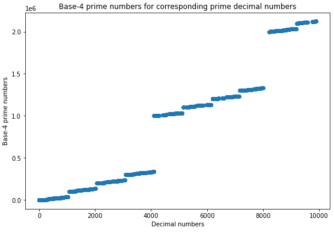
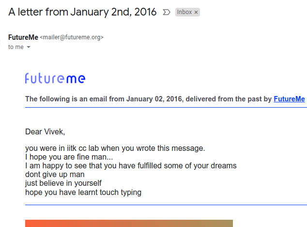

11/01/2022 - 21:30 - ചെസ്സും ക്രിക്കറ്റും പിന്നെ അത്യാവശ്യത്തിന് ഇന്റർനെറ്റും
12:30 am-ൽ ഒരു വലിയ online chess tournament lichess-ൽ നടക്കുന്നുണ്ട്. ഒരുപാട് famous ആയിട്ടുള്ള കളിക്കാർ അതിൽ പങ്കെടുക്കും. Magnus Carlsen, Hikaru Nakamura, Alireza Firouzja, Nepo, പിന്നെ നമ്മടെ സ്വന്തം നിഹാൽ, പ്രഗ്ഗു, എല്ലാവരും ഉണ്ട്. ഇത് Agadmator എന്ന് അപര നാമമുള്ള അന്റോണിയോ റാഡിച്ച് എന്ന വലിയ chess youtuber നടത്തുന്നതാണ്. ഏതോ കമ്പനിയുടെ sponsorship prizes ഇതിൽ ഒന്നും, രണ്ടും, മൂന്നും സ്ഥാനങ്ങൾ കിട്ടുന്നവർക്ക് ലഭിക്കും. 1st prize 1BTC ആണ്. ഞാൻ നെറ്റിൽ നോക്കി. എത്ര റുപ്പീസ് ഉണ്ടെന്ന്. മുപ്പത് ലക്ഷത്തി അറുപത്തിഅയ്യായിരം രൂപയോളം അതുണ്ട്. ഒന്നാലോചിച്ചു നോക്കിക്കേ. വെറും രണ്ടു മണിക്കൂർ നീളുന്ന ഒരു ടൂർണമെന്റിന്റെ വിജയിക്ക് മുപ്പത് ലക്ഷത്തിനുമേൽ prize! അതുകൊണ്ടുതന്നെ ഒരുപാട് പേര് ഇതിൽ പങ്കെടുക്കുന്നുണ്ട്. ശരിക്കും ക്രിസ്മസ് ദിവസത്തിന്റെ തലേന്നെങ്ങാനാണ് ഈ ടൂർണമെന്റ് നടത്തിയത്. പക്ഷെ ഒരുപാട് ആളുകൾ ഒന്നിച്ച് കളിച്ചപ്പോൾ server load കൂടി എല്ലാം down ആയി. ചില തൊരപ്പന്മാർ DDos ചെയ്തിട്ടുമുണ്ടാകും. ഒരുപാട് പേര് കളിക്കുമ്പോൾ ഒരുപാട് cheaters-സും പങ്കെടുക്കും. Lichess-ന്റെ cheat detection impeccable ആണ്. എത്രയോ ആൾക്കാരുടെ കളി ഒരേ സമയം analyse ഒക്കെ ചെയ്യാൻ സാധിക്കാതെ വന്നപ്പോൾ ടൂർണമെന്റ് പാതിവഴിയിൽ ഉപേക്ഷിക്കേണ്ടി വന്നു. അതാവണം സംഭവിച്ചത്. അന്ന് ഞാൻ പങ്കെടുക്കാൻ പോയില്ല. പങ്കെടുത്തെങ്കിൽ ഉറപ്പായും first കിട്ടിയേനെ. എനിക്ക് ഇപ്പോൾ മുപ്പത് ലക്ഷത്തിന്റെ ആവശ്യം ഒന്നും ഇല്ല. ചുമ്മാ കളിക്കുന്ന പാവങ്ങൾക്ക് കിട്ടിക്കോട്ടെ. ഇതൊക്കെ ഞാൻ വെറുതെ ചളി പറഞ്ഞതാണ്. അതിൽ കളിച്ചിട്ടുണ്ടെങ്കിൽ എന്റെ പരിപ്പ് ബാക്കിയുള്ളവർ ചേർന്ന് എടുക്കുമായിരുന്നു. ഫുട്ബോൾ മാതിരി എന്നെ ഇട്ട് തട്ടി കളിക്കും. Top 100-ൽ ഉള്ള ആൾക്കാരുടെ rating 2700-ന് മുകളിലാണ്. എന്റേത് 2300 ആണ്, അതും കഷ്ടിച്ച്. എന്നെ അവന്മാർ ചേർന്ന് ഇഞ്ചപ്പരുവമാക്കും. മാത്രവുമല്ല, 2300 എത്തിയതിന് ശേഷം ഞാൻ പിന്നെ കളിച്ചിട്ടില്ല. കാരണം തോറ്റാൽ തിരിച്ച് 2200 zone-ലേയ്ക്ക് തന്നെ തിരിച്ച് പോകണ്ടേ? കുറെ കാലമായി ഞാൻ ആ rating-ൽ നിൽക്കുന്നു. കുറച്ച് കാലം 2300-ൽ നിലക്കട്ടെ. ബാക്കിയുള്ളവർ കളിക്കുമ്പോൾ അവരുടെ games follow ചെയ്യാൻ എനിക്കിഷ്ടമാണ്. Twitch-ൽ ChessNetwork എന്ന channel നടത്തുന്ന Jerry stream ചെയ്യും. അദ്ദേഹത്തിന്റെ videos ഞാൻ പണ്ടേ കാണാറുണ്ട്. Lichess-ന്റെയും chess.com-ന്റെയും ഒക്കെ പൂർവികനായ chesscube എന്ന website നിലനിന്ന കാലം മുതൽ Jerry stream ചെയ്യലുണ്ട്. Mood out ആകുമ്പോൾ ആ പണ്ടത്തെ videos ഞാൻ ചിലപ്പോൾ എടുത്ത് കാണാറുണ്ട്. ആൾ ഭയങ്കര PG ആണ്. നല്ല കുട്ടിത്തമുള്ള തമാശക്കാരനാണ്. ‘Nona fry’, ‘adobe flash gambit’, ‘anton squared’, ‘pigs on the 7th’, ‘fishing pole’ എന്നൊക്കെ തുടങ്ങി കുറെ inside jokes അദ്ദേഹത്തിന്റെ community-യിലുണ്ട്. അതിലൊക്കെ ഭാഗമാകാൻ വളരെ രസമാണ്. എന്തായാലും tournament restart ചെയ്യുമ്പോൾ ഞാൻ Jerry-യുടെ stream കാണും. അദ്ദേഹം Magnus-ന്റെ വലിയ fan ആണ്. Fan എന്ന് പറഞ്ഞ വലിയ വലിയ ബഡാ fan. അത് കൊണ്ട് magnus-ന്റെ games മാത്രമേ follow ചെയ്യൂ.
കൊറോണ കാലത്ത് online chess-നും OTB chess-നും ഭയങ്കര വലിയ boom ഉണ്ടായി. Popularity പതിന്മടങ്ങ് വർധിച്ചു. Lichess-ലൊക്കെ ആദ്യമായി 100,000-നും മുകളിൽ players ഒരേ സമയം site visit ചെയ്ത് തുടങ്ങി. ഞാൻ ഒരിക്കലും അങ്ങനത്തെ സംഭവം നടക്കും എന്ന് പ്രതീക്ഷിച്ചിരുന്നില്ല. ഞാൻ വെറുതെ ഡംബ് പറയുകയല്ല. ഞാൻ chess-ന്റെ OG ഫാൻ ആണ്. പണ്ടേ എനിക്ക് chess കളിയ്ക്കാൻ ഭ്രാന്തായിരുന്നു. ശരിക്കും ഭ്രാന്ത്. ചേച്ചിക്ക് basic rules അറിയാം. വീട്ടിൽ വേറെ ആർക്കും കളിയ്ക്കാൻ അറിയില്ല. എവിടുന്നാണ് ആദ്യം chess പഠിച്ചത് എന്ന് പോലും എനിക്ക് ശരിക്കും അറിയില്ല. ഏതോ അച്ഛന്റെ side-ൽ ഉള്ള cousin ആവണം പഠിപ്പിച്ചത്. എനിക്ക് കുറെ അധികം chess കളിക്കണം എന്ന് കുട്ടികാലത്ത് വാശി ഉണ്ടായിരുന്നു. Chess coaching centre-കളിൽ ഒക്കെ കുട്ടികളെ പറഞ്ഞു വിടാറുണ്ടെന്ന് school-ൽ നിന്നും മനസ്സിലാക്കിയ ഞാൻ അച്ഛനോടും അമ്മയോടും കുറെ വാശി പിടിച്ച് അവിടെ ചേർത്താനൊക്കെ കൊറേ നിർബന്ധിച്ച് പറഞ്ഞിരുന്നു. എവിടെ കേൾക്കാൻ.. അവർ mind ചെയ്തത് പോലും ഇല്ല. Chess board വാങ്ങി തരാൻ അച്ഛനോട് പറഞ്ഞിരുന്നു. അതും കിട്ടിയില്ല. എനിക്ക് മിക്ക കളിപ്പാട്ടങ്ങൾ പോലും second hand ആയിട്ട് കിട്ടിയതാണ്. എന്റെ ചേച്ചിയുടെ അതേ പ്രായമുള്ള ഒരു cousin ഉണ്ട്. ആ cousin-ന്റെയും വേറെ ഒരു cousin-ന്റെയും ഒക്കെ കളിപ്പാട്ടങ്ങൾ വച്ചാണ് ഞാൻ കളിക്കാറുള്ളത്. എന്നെ ഒരിക്കലും പുറത്തേക്ക് കളിയ്ക്കാൻ വിടാറില്ല. എങ്ങാനും വല്ലവരും വന്ന് പിടിച്ചാലോ, അല്ലെങ്കിൽ പീഡിപ്പിച്ചാലോ എന്നൊക്കെ പേടിച്ചിട്ടായിരിക്കാം. അത് കൊണ്ട് എന്റെ second hand കളിപ്പാട്ടങ്ങൾ വച്ചിട്ട് ഞാൻ കഥകളൊക്കെ മനസ്സിൽ imagine ചെയ്ത് കളിക്കും. എനിക്ക് ഒരു joker കളിപ്പാട്ടം ഉണ്ടായിരുന്നു. വലിയ red paint അടിച്ച മൂക്കുള്ള ഒരു joker-ന്റെ caricature തല. എന്റെ കഥകളിലെ main hero ആ joker ആണ്. പിന്നെ കുറച്ച് വലുതായപ്പോൾ എനിക്ക് അച്ഛൻ എന്തോ ദയ തോന്നി കുറച്ച് animals-ന്റെ കളിപ്പാട്ടങ്ങൾ വാങ്ങിയിരുന്നു. അതിൽ ഒരു cheetah ഉണ്ട്. നീളമുള്ള വളഞ്ഞ വാലുള്ള ഒരു cheetah. അതിന് ഞാൻ നെറ്റിയിൽ ഒരു പൊട്ടു തൊട്ടിട്ട് പെണ്ണാണെന്ന് സങ്കല്പിക്കും. Joker-ന്റെ ഭാര്യ ആണ് cheetah. Villain ഒരു tiger ആണ്. അതിനുള്ള കാരണം വേറെ ഒന്നുമല്ല. ആ tiger-ന്റെ മുഖത്തു ഒരു mean expression ആണ്. അപ്പൊ അത് ഈ കഥയിലെ meanie ആയി മാറി. Tiger-ന്റെ കൂടെ എപ്പോഴും ഒരു ചെറിയ കുട്ടി tiger കൂടി ഉണ്ട്. വലിയ tiger-ന്റെ ശിങ്കിടിയാണ് ചെറിയ tiger എന്നാണ് ഞാൻ imagine ചെയ്യാറുള്ളത്. ഈ joker-ന്റെയും cheetah-യുടെയും family friend ആയിട്ട് കാലൊടിഞ്ഞ ഒരു ആനയുണ്ട്. ഈ ആന എനിക്ക് ഏതോ ആന്റി ചെറിയ കുട്ടിയായിരുന്നപ്പോൾ തന്നതാണ്. ഗുരുവായൂരിൽ നിന്നെങ്ങാൻ വാങ്ങിയതാണ് ആ ആനയുടെ model എന്ന് തോന്നുന്നു. മരം കൊണ്ടാണ് അത് ഉണ്ടാക്കിയിരിക്കുന്നത്. ഞാൻ കുറച്ച് ആവേശം മൂത്ത് കളിച്ചപ്പോൾ അതിന്റെ കാൽ പൊട്ടിപോയതാണ്. അന്ന് മുതൽ handicapped ആയിട്ടുള്ള family friend ആയി അത് മാറി. മിക്ക കഥകളിലും വില്ലനായ tiger cheetah-യെ തട്ടി കൊണ്ട് പോകുന്നതാണ് പ്രമേയം. ഈ ആനയാണ് tiger-നെ attack ചെയ്ത് cheetah-യെ joker-ന് തിരിച്ച് എത്തിച്ച് കൊടുക്കുന്നത്. ചില കഥകളിൽ chase scene ഒക്കെ ഉണ്ടാകാറുണ്ട്. Hand rail-ന്റെ മേലെ കൂടി ആനയും tiger-റും slide ചെയ്ത് പോകുന്ന Michael Bay type explosions ഒക്കെ ഉണ്ടാകുന്ന ഉഗ്രൻ chase scene. പിന്നെ കുറച്ച് കാലം അങ്ങനെ കളിച്ച് നടക്കുന്ന സമയത്തിനിടയിൽ ഒരു നാൾ ചെന്നൈയിൽ പോയി. എന്റെ അമ്മയുടെ അനിയത്തി അവിടെ work ചെയ്യുന്ന കാലമായിരുന്നു അത്. ചെന്നൈയിൽ പോയപ്പോൾ അതിന്റെ കൂടെ മറീന beach-ൽ ഒക്കെ പോവുകയും ചെയ്തു. എനിക്ക് മ്മടെ കോഴിക്കോട് കടപ്പുറത്തിന്റെ അത്ര പോലും ഗ്ലാമർ ഒന്നും തോന്നിയില്ല. വലിയ കാര്യത്തിൽ മറീന ബീച്ച്, മറീന ബീച്ച് എന്ന് ഇടയ്ക്കിടെ കേൾക്കുന്നത് കൊണ്ട് ഞാൻ വേറെ എന്തൊക്കെയോ വലിയ കാര്യങ്ങൾ അവിടെ expect ചെയ്തു പോയിട്ടുണ്ടാകാം. അവിടെ നിന്നും അച്ഛൻ എനിക്ക് ഒരു He-man-ന്റെ കളിപ്പാട്ടം വാങ്ങി തന്നു. ചൂണ്ടു വിരലിന്റെ അത്ര വലിപ്പമേ അതിനുള്ളൂ. പക്ഷെ he-man ഞാൻ tv-യിലൊക്കെ കാണുന്നതാണ്. ഇത് original He-man അല്ല കേട്ടോ. വെറും abibas model he-man. He-man കിട്ടിയതോടെ handicap ആനയ്ക്ക് എന്റെ കഥകളിൽ സ്ഥാനമില്ലാതായി. വെറുമൊരു രണ്ടാംകിട നടനായി ആന അരങ്ങൊഴിഞ്ഞു. പകരം he-man ജനപ്രിയ നായകനായി മാറി. He-man-ന്റെ cartoon TV-യിൽ വരുമ്പോൾ എപ്പോഴും ഒരു transformation scene ഉണ്ട്. He-man അദ്ദേഹത്തിന്റെ വാൾ ഉയർത്തി പിടിച്ച് ‘I have the power’ എന്ന് ഉറക്കെ പറയുന്ന ഒരു scene. ആ scene എനിക്ക് എപ്പോഴും goosebumps തരും. ഞാൻ ഇന്നാൾ വെറുതെ എടുത്ത് ആ scene youtube-ൽ search ചെയ്ത് കണ്ടുപിടിച്ചു. അത് കണ്ടപ്പോൾ അപ്പോഴും എനിക്ക് goosebumps അടിച്ചു. അത്ര epic ആണത്. He-man കളിപ്പാട്ടത്തിന് സ്വന്തമായിട്ട് ഒരു attachable വാൾ ഉണ്ടായിരുന്നു. അത് എങ്ങനെയോ എനിക്ക് missing ആയി. അതോട് കൂടി അണ്ടി പോയ അണ്ണാനെ പോലെയായി എന്റെ He-man. എന്റൊപ്പം കളിക്കാനുള്ള interest ഒക്കെ അവന് പോയി. കുറച്ച് പ്രായം കഴിഞ്ഞപ്പോൾ കളിപ്പാട്ടത്തിന്റെ മേലുള്ള എന്റെ interest മാറിയിട്ട് ആ കളിപ്പാട്ടത്തിന്റെ അകത്ത് ഉള്ളതെന്താണെന്ന് അറിയാനായി എന്റെ interest മുഴുവൻ. ഇത് കുട്ടികൾക്കുണ്ടാവുന്ന സാധാരണ psychology ആണെന്ന് പിന്നീടറിഞ്ഞു. മിക്ക കുട്ടികൾക്കും നേരത്തെ ആ curiosity bud ചെയ്യും. എന്നെ പോലത്തെ മണ്ടൻ കുട്ടികൾക്ക് late ആയിട്ടും തോന്നും. Joker കളിപ്പാട്ടം വെറുതെ കുലുക്കുമ്പോൾ അതിന്റെ അകത്ത് നിന്ന് ഒരു കുരു കിടന്ന് കുലുങ്ങുന്ന മാതിരിയൊക്കെ എനിക്ക് തോന്നി. Joker-ന്റെ അകം എനിക്ക് പരിശോധിക്കാൻ പൂതിയായി. ഞങ്ങടെ വീട്ടിൽ ഒരു steel-ന്റെ പപ്പടക്കോൽ ഉണ്ട്. ഈ ജോക്കറിന്റെ backside-ൽ convenient ആയിട്ട് ഒരു തുളയുണ്ട്. ഞാൻ ആ പപ്പടകോൽ വച്ചിട്ട് joker-ന്റെ ആ ബാക്കിലെ തുളയിൽ കുത്തിക്കോണ്ടിരുന്നു. കുത്തി കുത്തി ഓട്ടയുണ്ടാക്കി അകത്തെ കുരു പുറത്തെടുക്കണം. അതെന്താണെന്ന് എനിക്കറിയണം. Freudian psychosexual theory-യിൽ ഒക്കെ ഉള്ളത് മാതിരിയാണ് ഇതൊക്കെ എന്ന് എനിക്കിപ്പോ തോന്നുന്നു. എന്റെ ശ്രമം എവിടെയും എത്തിയില്ല. എന്റെ കുഞ്ഞികൈ കൊണ്ട് എത്ര കുത്തിയിട്ടും ആ കുരു എനിക്ക് പുറത്തെടുക്കാൻ പറ്റിയില്ല. ഞാൻ ഇതൊക്കെ ചെയ്യുന്നത് കണ്ട് അമ്മയും അച്ഛമ്മയും ഒക്കെ നല്ല പോലെ ചീത്ത പറഞ്ഞിട്ടുണ്ടാകാൻ chance ഉണ്ട്. പപ്പടക്കോൽ കണ്ണിൽ കുത്തി കയറും എന്നൊക്കെ എന്നോട് ചൂടാവുമ്പോൾ പറഞ്ഞത് ഓർമയിലുണ്ട്. ഇതേ അമ്മ ഒരു ദിവസം ഞാൻ എന്തോ കുസൃതി കാണിച്ചിട്ട് എന്നെ അടുപ്പിന്റെ അടുത്ത് കൊണ്ട് പോയി തീ പിടിച്ച വിറക് കൊള്ളി കാണിച്ച് എന്നെ പൊള്ളിക്കും എന്ന് പേടിപ്പിച്ചിരുന്നു. എന്റെ കഷ്ടകാലത്തിന് ആ വിറക് കൊള്ളിയിൽ പറ്റി പിടിച്ച plastic cover-ന്റെ ചെറിയൊരു ഭാഗം തീയിൽ ഉരുകി എന്റെ കയ്യിൽ ഉറ്റി വീണു. അമ്മ അത് പ്രതീക്ഷിച്ചിട്ടുണ്ടായിരുന്നില്ല. അപ്പൊ തന്നെ അഭിനയം നിർത്തി അമ്മ പരിഭ്രമിച്ച് എന്നെ ടാപ്പിന്റെ അടുത്ത് കൊണ്ടുപോയി വെള്ളം കൊണ്ട് പൊള്ളിയ ഭാഗത്തിൽ വൃത്തിയാക്കി. എന്റെ ഈച്ച ഭാഗ്യത്തിന് വലിയ പൊള്ളൽ ഒന്നും ഉണ്ടായില്ല.
ശരിക്കും ഞാൻ പറയാൻ വന്നത് എന്റെ chess ഭ്രാന്തിന്റെ ഉറവിടത്തെ കുറിച്ചാണ്. പറഞ്ഞ് പറഞ്ഞ് കളിപ്പാട്ടങ്ങളിൽ stall ചെയ്തു പോയി. ഇതൊക്കെ എന്റെ ഓർമയിൽ ഉള്ളത് പോലും എനിക്കറിയില്ലായിരുന്നു. അതൊക്കെ ഓർത്തത് കൊണ്ട് ഒരാവേശത്തിൽ എഴുതി പോയതാണ് സാർ. ഞാൻ വലുതായി വലുതായി വന്നപ്പോൾ അച്ഛൻ എനിക്ക് ഒരു remote controlled tractor-റും, പിന്നെ നിലത്തൂടെ പോകുന്ന aeroplane-നും ഒക്കെ വാങ്ങിച്ചു തന്നിരുന്നു. അമ്മ അതിനും മുൻപ് ഞാൻ വാശി പിടിച്ച് കരയുമ്പോൾ അച്ഛൻ കാണാതെ എനിക്ക് കളിപ്പാട്ടങ്ങൾ വാങ്ങി തരുമായിരുന്നു. ആ സമയത്തൊക്കെ അച്ഛൻ ഭയങ്കര പിശുക്കനായിരുന്നു. ഇപ്പോഴും പിശുക്കുണ്ട്. പക്ഷെ പണ്ട് ഭയങ്കര പിശുക്കായിരുന്നു. അച്ഛനെ പക്ഷെ അതിന് കുറ്റം പറയാൻ പറ്റില്ല. ഒരുപാട് കടങ്ങൾ അച്ഛന് അപ്പോൾ ഉണ്ടായിരുന്നു. കല്യാണം കഴിക്കുന്നതിന് മുൻപ് സ്വന്തമായി വീടുണ്ടാക്കണം എന്ന നിശ്ചയദാർഢ്യം അച്ഛന് ഉണ്ടായിരുന്നു. ബന്ധുക്കളുടെ അടുത്ത് നിന്നും അറിയുന്ന ആരുടെയൊക്കെയോ അടുത്ത് നിന്നുമൊക്കെ കടം വാങ്ങിയിരുന്നു. അത് കാരണം കുറെ ബന്ധങ്ങൾക്ക് പോറൽ പറ്റുകയുമുണ്ടായിരുന്നു. പക്ഷെ അച്ഛന്റെ കഠിനാധ്വാനം കൊണ്ടും നല്ല നിലയിലെത്താനുള്ള ആഗ്രഹം കൊണ്ടും കഷ്ടപ്പെട്ട് ബുദ്ധിമുട്ടി അച്ഛൻ financial ആയിട്ട് stability കൈ വന്നു. അപ്പോൾ ചിലപ്പോൾ ഞങ്ങളുടെ ആഗ്രഹങ്ങൾ അച്ഛൻ sacrifice ചെയ്തിട്ടുണ്ടാകാം. അതൊക്കെ നല്ല നാളേക്ക് വേണ്ടിയിട്ടാണ്, അല്ലാതെ അച്ഛൻ ഒരു psychopath അല്ല. ഇതൊക്കെ എനിക്ക് ഇപ്പോൾ ഇതൊക്കെ എഴുതുമ്പോൾ മനസ്സിലാകുന്നുണ്ട്. എന്നാലും അമ്മ എന്റെയും ചേച്ചിയുടെയും ആഗ്രഹങ്ങൾ നടത്തി തരാൻ വേണ്ടി ശ്രമിക്കും. എനിക്ക് ഒരു കുട്ടി ഓട്ടോറിക്ഷ വാങ്ങി തന്നു, പിന്നെ KSRTC stand-ൽ നിന്നും ചെറിയ, മരത്തിന്റെ ഒരു mini KSRTC bus വാങ്ങി തന്നു. പിന്നെ ചെന്നൈയിലുള്ള അമ്മയുടെ അനുജത്തി (എന്റെ ആന്റി) എനിക്ക് ഒരു train set തന്നെ വാങ്ങി തന്നു. Rail ഏത് pattern-ൽ വച്ചാലും അതിലൂടെ battery ഉപയോഗിച്ച് ഓടുന്ന തീവണ്ടി. പിന്നെ കണ്ണഞ്ചേരിയിൽ അമ്മയുടെ ബന്ധുവിന്റെ വീട്ടിൽ പോയപ്പോൾ അവിടത്തെ മാമൻ എനിക്ക് ഇഷ്ടമുള്ള എന്ത് കളിപ്പാട്ടം വേണമെങ്കിലും പറഞ്ഞോ, അത് വാങ്ങി തരാം എന്ന് പറഞ്ഞു. അപ്പൊ ഞാൻ കുറെ നേരം മടിച്ച് നിന്നു. വീണ്ടും നിർബന്ധിച്ചപ്പോൾ ഞാൻ ഒരു പാമ്പും കോണിയുമുള്ള ഒരു board വാങ്ങി. എന്റെ ഓർമ ശരിയാണെങ്കിൽ (മിക്കവാറും തെറ്റായിരിക്കും) അതിന്റെ പുറകിൽ ഒരു chess board-ഡും ഉണ്ട്. ഞാൻ അത് കണ്ടിട്ടാണ് വാങ്ങാൻ ആഗ്രഹം പ്രകടിപ്പിച്ചത്. അങ്ങനെയാണ് എനിക്ക് ആദ്യമായിട്ട് ഒരു chess board കിട്ടുന്നത് (എന്നാണ് എന്റെ ഒരു ഇത്). ഇത്ര നല്ല ഫാമിലിക്കാരെ കിട്ടിയതിന് ആരോടാണ് നന്ദി പറയേണ്ടത്?
എന്റെ വീട്ടിൽ പണ്ട് internet ഒന്നും ഇല്ല. അതിന് മാത്രം modern ഒന്നുമല്ല ഞങ്ങടെ കുടുംബം. പുത്തൻ സാങ്കേതിക വിദ്യകൾ ബാക്കി എല്ലാ വീടുകളിലും വന്നതിന് ശേഷം മാത്രമാണ് ഞങ്ങളുടെ വീട്ടിൽ എത്തുക. ആദ്യമായിട്ട് nokia വാങ്ങിയത് എനിക്കോർമയുണ്ട്. എല്ലാവരും color display ഉള്ള ഫോണുകൾ മേടിക്കുന്ന സമയത്താണ് ആദ്യമായി ഞാൻ പണ്ടത്തെ OG snake game കളിക്കുന്നത്. എന്റെ cousins ഉപയോഗിച്ച് ഉപയോഗിച്ച് മടുത്ത phone-ന്റെ മരണത്തിന് ആറ് മാസം കൂടി ബാക്കിയുള്ളപ്പോൾ അവർ അത് അച്ഛന് കുറഞ്ഞ വിലക്ക് കൊടുക്കും. അച്ഛൻ അത് സന്തോഷത്തോടെ വാങ്ങും. അങ്ങനെ ആദ്യമായിട്ട് color display ഉള്ള ഫോൺ second hand ആയിട്ട് വാങ്ങിയത് നോക്കിയയുടെ തന്നെ Nokia 5310 xpressmusic ആണ്. ഞാൻ ഉപയോഗിച്ച ഫോണുകളിൽ വച്ച് എന്റെ ഏറ്റവും favorite phone ആണത്. ആദ്യമായിട്ട് ഫോണിൽ photo എടുക്കുന്നതും, പാട്ട് കേൾക്കുന്നതും ഒക്കെ അതിലാണ്. എനിക്ക് അച്ഛൻ computer വാങ്ങിത്തന്നതിന് ശേഷം ഞാൻ USB വഴി ആദ്യമായിട്ട് പാട്ടുകൾ കേറ്റിയതും ഈ ഫോണിലേക്കാണ്. ഒരുപാട് വിക്രസ്സുകൾ ഞാൻ അതിൽ ചെയ്തിട്ടുണ്ട്. ഒരുപാട് എന്ന് പറഞ്ഞാൽ ഒരുപാട്. എന്റെ ദൈനം ദിന abuse-സുകൾ എല്ലാം ഏറ്റെടുത്ത് “ചത്തിട്ടില്ലെടാ” എന്ന് എന്നെ അത് taunt ചെയ്തിട്ടുണ്ട്. ഒരു ഭ്രാന്തനെ പോലെ “ഇനിയും ചെയ്യെടാ, ഇനിയും ചെയ്യ്” എന്ന് അത് എന്നെ വെല്ലു വിളിച്ചിട്ടുണ്ട്. ഫോണിൽ ആദ്യമായിട്ട് ഇന്റർനെറ്റ് ഉപയോഗിച്ചതും ഈ ഫോണിൽ തന്നെയാണ്. GPRS എന്ന അത്ഭുതത്തിന്റെ തോളിലേറി ഒച്ചിഴയുന്ന വേഗതയിൽ ഞാൻ ഇന്റർനെറ്റിലൂടെ സഞ്ചരിച്ചിട്ടുണ്ട്. ആ ഒച്ചിന്റെ വേഗതയിൽ wikihow തുറന്ന് വച്ച് ഞാൻ മൂന്ന് balls ഉപയോഗിച്ച് cascade juggle, reverse cascade juggle, fountain തുടങ്ങിയവ ചെയ്യാൻ പഠിച്ചിട്ടുണ്ട്. Wikihow ഉപയോഗിച്ച് juggling പഠിച്ച ആദ്യത്തെയും അവസാനത്തെയും വ്യക്തി ചിലപ്പോൾ ഞാനായിരിക്കും. ആദ്യമായിട്ട് ഒരാളുടെ nude photo കണ്ടതും ഈ ഫോണിൽ തന്നെയാണ്. അച്ഛൻ കാലൊടിഞ്ഞു ആശുപത്രിയിൽ കിടക്കുന്ന ദിവസം ഞാനും കൂടെ ഉണ്ടായിരുന്നു. ഉച്ച നേരം എല്ലാവരും ഉറക്കം തൂങ്ങുന്ന സമയം എനിക്ക് മാത്രം ഉറക്കം ഒന്നും വന്നില്ല. ഞാൻ ഉച്ചക്ക് ഉറങ്ങാറേയില്ല. ഉറക്കം വരാറുമില്ല. ബോറടിച്ച് ബോറടിച്ച് ഞാൻ പലതും ആ ഫോണിന്റെ ഇൻറർനെറ്റിൽ നോക്കിയിരുന്നു. ആശുപത്രി പരിസരത്തിലെ GPRS-ന് ഞങ്ങളുടെ വീട്ടിൽ കിട്ടുന്നതിനേക്കാൾ വേഗതയുണ്ടായിരുന്നു. അത് കൊണ്ട് ഫോട്ടോ ഒക്കെ load ചെയ്യാൻ പ്രയാസമുണ്ടായില്ല. GPRS-നൊക്കെ അപ്പോൾ നല്ല data charge ഉള്ള സമയമായിരുന്നു. അന്ന് അഞ്ച് മിനുട്ടിലെ എന്റെ research കൊണ്ട് അച്ഛന്റെ 50 രൂപയുടെ recharge ഞാൻ പോക്കിയിട്ടുണ്ടാകും. എനിക്കൊരു ഖേദവും ഇല്ലായിരുന്നു. നീൽ ആംസ്ട്രോങ് ചന്ദ്രനിൽ കാലു കുത്തിയപ്പോൾ ഉള്ള അനുഭൂതിയായിരിക്കും എനിക്ക് അപ്പോൾ കിട്ടിയിട്ടുണ്ടായിരുന്നത്. ചരിത്രത്തിലേക്കുള്ള ഒരു കാൽ വയ്പ്. എന്തായാലും ആ ഫോൺ personally ഒരു technological marvel തന്നെയായിരുന്നു. പിന്നെ പിന്നെ നോക്കിയയെ വെല്ലുന്ന തരത്തിൽ samsung പോലത്തെ കമ്പനികൾ നാട്ടിൽ പടർന്ന് പിടിച്ചു. അമ്മക്ക് samsung-ന്റെ ഒരു flip phone ഉണ്ടായിരുന്നു. അതിലായിരുന്നു ഞാൻ ആദ്യമായിട്ട് ഒരു cricket game കളിച്ചത്. കുറെ നല്ല ഓർമകൾ.
Cricket കളിയെ പറ്റി പറയുമ്പോൾ എന്റെ cricket അനുഭവങ്ങൾ ഓർമ വരുന്നു. എന്നെ പുറത്തേക്ക് കളിയ്ക്കാൻ വിടാത്തത് കാരണം എനിക്ക് കുറച്ച് restrictions-ന്റെ ഇടയിൽ കിടന്ന് ചിന്തിക്കേണ്ടി വന്നു. Improvise, adapt, overcome എന്നാണല്ലോ പ്രമാണം. അത് കൊണ്ട് ഞാൻ തന്നെ സ്വന്തമായി ഒരു cricket-squash mixed game ഉണ്ടാക്കി. ഒരു നല്ല വണ്ണമുള്ള വടിക്കഷ്ണം അച്ഛൻ തേങ്ങാ പൊളിക്കുന്ന സമയം അച്ഛനോട് പറഞ്ഞ് ക്രിക്കറ്റ് ബാറ്റിന്റെ പരുവത്തിലാക്കി മാറ്റി. പത്തോ പതിനഞ്ചോ രൂപ കൊടുത്താൽ rubber ball വാങ്ങാൻ കിട്ടും. ഞാൻ കരഞ്ഞ് കാലുപിടിച്ച് അച്ഛനെ കൊണ്ട് അങ്ങനത്തെ ഒരെണ്ണം വാങ്ങിച്ചു. എന്നിട്ട് ഞാൻ എന്റെ വീടിനെ face ചെയ്ത് നിന്നു. പുറകിലത്തെ മതിൽ wickets ആയി മനസ്സിൽ കുടിയിരുത്തി വീടിന്റെ വലിയ പുറം ചുമരിലേക്ക് ഇടം കൈ കൊണ്ട് പന്തെറിഞ്ഞു. ചുമരിൽ തട്ടി തിരിച്ച് വരുന്ന പന്ത് രണ്ടു കയ്യും ബാറ്റിൽ പിടിച്ച് കൊണ്ട് അടിക്കാൻ ശ്രമിക്കും. അതാണ് എന്റെ ക്രിക്കറ്റ് കളി. വളരെ ദയനീയം. കീപ്പറില്ല. കാണികളില്ല. Umpire ഇല്ല. Batsman ഞാൻ തന്നെ. Bowler ഞാൻ തന്നെ. Fielders എല്ലാവരും ഞാൻ തന്നെ. പരമ ദയനീയം. ഇതിൽ എന്ത് ആനന്ദമാണ് എനിക്ക് കിട്ടുന്നത് എന്ന് മാത്രം ചോദിക്കരുത്. അതിനുത്തരം എനിക്ക് എങ്ങനെ ചിന്തിച്ചിട്ടും മനസ്സിലാകുന്നില്ല. എന്തായാലും ഈ കളി അത്ര നല്ലതിനായിരുന്നില്ല. Field ചെയ്യാൻ വേണ്ടി ഞാൻ ഓടുമ്പോൾ പായലുള്ള concrete നിലത്തിൽ തെന്നി വീഴാറുണ്ട്. ബോൾ എറിഞ്ഞ്, ബോൾ എറിഞ്ഞ് ചുമരിൽ മൊത്തം ball-ന്റെ മൺപാടുകൾ കാണാം. അതിനൊക്കെ എനിക്ക് ചീത്ത കേൾക്കാറുണ്ട്. ഒരു ദിവസം അച്ഛന്റെ cousins രണ്ടു പേര് വീട്ടിൽ വന്നപ്പോൾ അവർ തമ്മിൽ remark ചെയ്യുന്നത് അച്ഛൻ അറിയാതെ കേട്ടിരുന്നു. “കണ്ടോ, ഈ ചുമര് മൊത്തം വൃത്തികേടാക്കിയത് ആ ചെക്കന്റെ പണിയാണ്” എന്നൊക്കെയാണ് അവർ പറഞ്ഞത്. ഇത് അച്ഛൻ നേരെ എന്നോട് പറഞ്ഞു. അവരുടെ മനസ്സിൽ എന്നെ പറ്റിയുള്ള image ഇതാണ് എന്നായിരിക്കാം അച്ഛൻ എനിക്ക് മനസ്സിലാക്കി തരാൻ ഉദ്ദേശിച്ചത്. പിന്നെ ഒരു ദിവസം ഞാൻ ബോൾ അടിച്ച് എന്റെ വീട്ടിന്റെ മുൻപിലെ bedroom-ന്റെ ജനൽ പൊട്ടിച്ച് തകർത്തു. അതോട് കൂടി കളിക്കൊരു full stop ആയി. അച്ഛന് പിന്നെ ദയ തോന്നിയിട്ട് എന്നോട് വീടിന്റെ പുറകിൽ പോയി പുറകിലത്തെ ചുമരിൽ ഇത് പോലെ കളിച്ചോളു എന്ന് പറഞ്ഞു. പുറകിലത്തെ ചുമരും ഞാൻ ബോൾ വീണ പാടുകൾ കൊണ്ട് വൃത്തികേടാക്കി. അത് വലിയ പ്രശ്നമൊന്നും ഇല്ല. വീട്ടിലേക്ക് കയറി വരുന്ന ആളുകൾ ഒന്നും അത് കാണില്ലല്ലോ. പക്ഷെ പുറകിലത്തെ ബെഡ്റൂമിന്റെ ചില്ലും ഞാൻ ഒരു ദിവസം പൊട്ടിച്ചു. അതോട് കൂടി വീടിന്റെ പുറകിൽ നിന്നുള്ള കളിയും അവസാനിച്ചു. ഇനി എന്ത് ചെയ്യും? അങ്ങനെ കളിയൊന്നുമില്ലാത്ത ഒരു ദിവസം അമ്മ എനിക്ക് വയലിൽ പോയി കളിക്കാനുള്ള permission തന്നു. ഞാൻ അവിടെ പോയി. അവിടെ പുഞ്ചയുടെ ഒരു ഭാഗത്ത് cricket കളിച്ചു കൊണ്ടിരുന്ന ആൺകുട്ടികളുടെ കൂടെ ഞാൻ കളിച്ചോട്ടെ എന്ന് ചോദിച്ചു. അവർ സമ്മതിച്ചു. ഞാൻ field ചെയ്തു. അങ്ങനെ കളി പുരോഗമിച്ചു. അങ്ങനെ batting ചെയ്യാനുള്ള എന്റെ ഊഴമെത്തി. വീട്ടിലെ വടിക്കഷ്ണം ബാറ്റാണെന്ന് സങ്കൽപ്പിച്ച് കളിച്ച എനിക്ക് അതിനേക്കാൾ പതിന്മടങ്ങ് ഭാരമുള്ള ശരിക്കുള്ള cricket bat കിട്ടിയപ്പോൾ ഉയർത്താൻ പോലും കുറെ ബുദ്ധിമുട്ടി. എങ്ങനെ ബോൾ അടിക്കും? ഞാൻ ആശങ്കയിലായി. ഇനി ഞാൻ പറയാൻ പോകുന്നതിൽ ഒരു തരി കള്ളമില്ല. അതിനർത്ഥം ഞാൻ ഇത്രയും നേരം പറഞ്ഞോണ്ട് നിന്നത് കള്ളമാണെന്നല്ല. എല്ലാ വരികളും നടന്ന കാര്യങ്ങൾ തന്നെയാണ് പറയുന്നത്. എല്ലാ വരികളും real ആണ്. ഇനി പറയാൻ പോകുന്നത് കുറച്ച് അധികം real ആണ് എന്ന് മാത്രം. ആഷിക്ക് എന്ന് പറഞ്ഞ ഒരുത്തനാണ് പന്തെറിയുന്നവൻ. ഞാൻ നേരിട്ട ആദ്യത്തെ പന്ത്. അമ്മയും ചേച്ചിയുമൊഴികെ വേറൊരു മനുഷ്യജീവി എന്റെ നേരെ എറിഞ്ഞ ആദ്യത്തെ പന്ത്. അത് കൃത്യം, കടുകിട വ്യത്യാസം ഇല്ലാതെ എന്റെ കുഞ്ഞുവാവ generation unit-ലാണ് കൊണ്ടത്. ജീവിതത്തിൽ അങ്ങോളം ഇങ്ങോളം ഞാൻ ഇതുപോലത്തെ ഒരു feeling അനുഭവിച്ചിട്ടില്ല. ആ ബോൾ പതിഞ്ഞ genitals എന്റെ nether region-ൽ നിന്നും straight ആയിട്ട് ഒരു missile പോകുന്ന വേഗതയിൽ എന്റെ ശരീരത്തിലൂടെ കടന്ന് എന്റെ brain-ലേക്ക് തുളച്ച് കയറുന്ന feeling ആണ് എനിക്ക് തോന്നിയത്. വേദന കൊണ്ട് പുളഞ്ഞ് ഞാൻ ആ പുഞ്ചവയലിന്റെ മാറിടത്ത്, ആ പച്ചപ്പുല്ല് വിരിച്ച പരവതാനിയിൽ ഒരു പത്തിരുപത്തഞ്ച് തവണ ശയനപ്രദക്ഷിണം ചെയ്തു. ഞാൻ കിടന്ന് literally ഉരുളുന്നത് കണ്ട് പന്തെറിഞ്ഞവനും വേറെ കുറച്ച് പേരും ഓടി വന്നു. ബാക്കിയുള്ളവർ കുറെ ചിരിച്ച് അവിടെ തന്നെ നിന്നു. എന്തെങ്കിലും പറ്റിയോ എന്ന് ആഷിക്ക് ചോദിച്ചു. പറ്റാനുള്ളതൊക്കെ പറ്റി കഴിഞ്ഞു. ഞാൻ നാണക്കേട് കൊണ്ട് ഇല്ല എന്ന് നുണ പറഞ്ഞു. എന്നിട്ട് injury പറ്റിയ batsman-നെ പോലെ കൊക്കി കൊക്കി നടന്ന് പോയി ഞാൻ ഒരു side-ൽ കുറെ നേരം ഇരുന്നു. എന്റടുത്ത് ചേച്ചിയും വന്നിരുന്നു. ചേച്ചി എന്തൊക്കെയോ പറഞ്ഞു. വേദന കാരണം ഒന്നും കേട്ടില്ല. നല്ല വൈകുന്നേരം സമയത്ത് ആ പുഞ്ചവയലിൽ ചെറിയ ഒരു കാറ്റ് വീശാറുണ്ട്. ആ കാറ്റും, പിന്നെ എന്റെ നെറ്റിയിലൂടെ ഒലിച്ചിറങ്ങിയ വിയർപ്പും കൂടെ ആയപ്പോൾ ഞാൻ അവിടെ കുത്തിയിരുന്ന് കുളിർന്നു. വേദന കൊണ്ട് ശരീരം മൊത്തം ചൂടായിരുന്നു. ആ ചൂടും ഈ തണുപ്പും കൂടി കലർന്ന വല്ലാത്തൊരു feeling. കുറച്ച് കഴിഞ്ഞ് സന്ധ്യ മയങ്ങി ഇരുട്ടടയാൻ തുടങ്ങിയപ്പോൾ ഞാനും ചേച്ചിയും അവിടന്ന് നടന്നു. പിന്നെ cricket കളിയ്ക്കാൻ ഞാൻ ആ പുഞ്ചയിലോട്ട് പോയിട്ടില്ല.
11/01/2022 - 16:18 - ജോർജ് ജോസെപ്
ഞാൻ ഇപ്പോൾ ഒരു podcast പോലെ ഒരു സാധനം കേൾക്കാറുണ്ട്. സഫാരി എന്ന മലയാളം youtube ചാനലിന്റെ ‘ചരിത്രം എന്നിലൂടെ’ എന്ന് പറയുന്ന ഒരു segment ഉണ്ട്. അതിൽ മലയാളികളായ famous ആൾക്കാർ അവരുടെ ജീവിതത്തിലെ കുറെ സംഭവങ്ങൾ ഓർമിച്ചെടുക്കും. അതിനെ പറ്റിയുള്ള അവരുടെ വീക്ഷണങ്ങളും അഭിപ്രായങ്ങളും ഒക്കെ പറയുകയും ചെയ്യും. ഒരാളുടെ മനസ്സിലൂടെ കടന്നു പോകുന്ന feel ആണ് ഈ segment-ലൂടെ കേഴ്വിക്കാർക്ക് ലഭിക്കുന്നത്. എനിക്ക് investigative ആയിട്ടുള്ള stories ഇഷ്ടമാണ്. അത് കൊണ്ട് police officers-ന്റെയും advocates, judges, journalists തുടങ്ങിയ ജോലികൾ ചെയ്യുന്നവരുടെയും ജോലി സംബന്ധമായ അനുഭവങ്ങൾ കേൾക്കാൻ ഇഷ്ടമാണ്. ഇപ്പൊ ഞാൻ George Joseph എന്ന് പേരുള്ള ഒരു മിടുക്കനായ പോലീസ്കാരന്റെ കഥകളാണ് കേട്ട് കൊണ്ടിരിക്കുന്നത്. പണ്ടൊക്കെ ഞാൻ ‘Small Town Murders’ എന്ന് പേരുള്ള English podcast കേൾക്കുമായിരുന്നു. രണ്ടു comedians അമേരിക്കയിലെ ചില ചെറിയ പട്ടണങ്ങളിലും വിദൂര പ്രദേശങ്ങളിലും നടക്കുന്ന കൊലപാതകങ്ങളെ കുറിച്ച് പറയുന്നതായിരുന്നു അതിന്റെ theme. അത് എനിക്ക് ഭയങ്കര ഇഷ്ട്ടമായിരുന്നു. കാരണം ഒന്നാമത് തമാശ - ഇവർ കൊലപാതകിയേയും അവന് കൂട്ട് നിൽക്കുന്ന ആളുകളെയും roast ചെയ്ത് കൊന്നു കളയും. രണ്ടാമത് - എല്ലാ stories-സും indepth ആയിട്ട് അവർ analyze ചെയ്യും. കുറ്റവാളിയുടെ background പരിശോധിക്കും. അവരുടെ കുട്ടികാലം എങ്ങനെയായിരുന്നു എന്നൊക്കെ അവർ നന്നായി പറഞ്ഞു തരും. ഇതൊക്കെ indirectly ചെറിയ ചെറിയ പാഠങ്ങൾ നമ്മളെ പഠിപ്പിക്കുന്ന പോലെയാണ് നമുക്ക് feel ചെയ്യുക. അയാൾ കൊല നടത്താനുണ്ടായ സാഹചര്യങ്ങൾ നമുക്ക് അതിലൂടെ മനസ്സിലാകും. ഒരു രാജ്യത്തിലെ civilians-ന് free ആയി gun possess ചെയ്യാനും, ഉപയോഗിക്കാനും സ്വാതന്ത്ര്യം കിട്ടുമ്പോൾ ഏതൊക്കെ വിധത്തിൽ അത് മോശം സംഭവങ്ങൾക്ക് കാരണമാകാം എന്ന് വരെ അത് ചൂണ്ടിക്കാട്ടുന്നു. ‘ചരിത്രം എന്നിലൂടെ’ എന്നുള്ള segment-ൽ തമാശകൾ ഇല്ലെങ്കിലും പറയുന്ന സംഭവങ്ങൾ വളരെ gripping ആണ്. ആ സംഭവങ്ങളിൽ നിന്നും ഞാൻ പേടിക്കേണ്ടതും അല്ലാത്തതുമായ ചില കാര്യങ്ങൾ മനസ്സിലാക്കി. ഓരോ മോഷ്ടാക്കൾക്കും കുറ്റ കൃത്യം നടത്തുന്നവർക്കും സ്വന്തമായി ഒരു ‘modus operandi’ ഉണ്ട്. ഏത് കുറ്റ കൃത്യങ്ങൾക്ക് പിന്നിലും ഒന്നെങ്കിൽ വ്യക്തി വൈരാഗ്യമോ, അല്ലെങ്കിൽ ധനമോഹമോ, അല്ലെങ്കിൽ പ്രണയമോ ഒക്കെ ഉണ്ടാകും. ഇതൊക്കെ കേൾക്കുമ്പോൾ എനിക്ക് ആൾക്കാരോട് മിണ്ടാനേ തോന്നില്ല. മറ്റുള്ളവരുമായിട്ടുള്ള നമ്മളുടെ ചെറിയ ഒരു interaction വരെ ഭാവിയിൽ നമുക്കെതിരെയുള്ള വലിയ തെളിവുകളായിട്ട് മാറും. ഒരാളെ ഇപ്പോൾ കല്യാണം കഴിക്കുന്നു എന്ന് വിചാരിക്കുക. നിങ്ങൾക്കറിയുമോ അവരിപ്പോ ജോളിയെ പോലെ ഒരു psycho ആണെന്ന്? അങ്ങനെ ആവില്ലെന്ന് എന്ത് ഉറപ്പാണ് ഉള്ളത്? ചെറുതായിട്ട് പോലും ഒരാളെ manipulate ചെയ്യാൻ തുനിയുന്ന ആൾ ആണെങ്കിൽ അവരോട് എനിക്ക് ഭയങ്കര aversion ഉണ്ടാകും. അത് psycho-കളുടെ ലക്ഷണമാണ്. അവർ സ്വന്തം മനസ്സാക്ഷിയെ ഒരു തുരുങ്കിൽ പൂട്ടിയിട്ടാണ് ദിവസവും society-യിലേക്ക് ഇറങ്ങുന്നത്. ‘Stranger danger’ എന്ന attitude തന്നെയാണ് നല്ലത്. വല്യ കാര്യമായിട്ട് ഒരുത്തനെയും എന്റെ life-ൽ അടുപ്പിക്കേണ്ട ഒരു കാര്യവുമില്ല. പിന്നെ ജോർജ് ജോസെപ് പറഞ്ഞ കാര്യങ്ങളിൽ നിന്നും മനസ്സിലായത് എന്താണെന്ന് വച്ചാൽ ചൊട്ടയിലെ ശീലം ചുടല വരെ എന്നതാണ്. ചാവുന്ന വരെ അവൻ മാറില്ല. എത്ര മാറ്റം പുറത്തുണ്ടെങ്കിലും ഒരു നിമിഷം നമ്മൾ പുറംതിരിഞ്ഞു നിന്നാൽ അവൻ പഴയ മാതിരിയാകും. കേരളത്തിൽ തെളിയിക്കപ്പെടാത്ത ഒരുപാട് കേസുകൾ ഉണ്ട് എന്നതാണ് എന്നെ പേടിപ്പിച്ച മറ്റൊരു കാര്യം. ഇത്ര talented ആയിട്ടുള്ള ആൾക്കാർ പണിയെടുക്കുന്ന police department തെളിയിക്കാത്ത ഒരുപാട് കേസുകൾ! അതിൽ തന്നെ തെളിയിച്ച കേസുകളിൽ പലതും കോടതിയിൽ എത്തുമ്പോൾ വേണ്ടത്ര strong ആയിട്ടുള്ള evidence ഇല്ലാത്തതിനാൽ പ്രതിയെ വെറുതെ വിടുന്നു. അതുപോലെ തന്നെ ഒരുപാട് കേസുകളിൽ പോലീസ്കാരുടെ തെറ്റായ നിഗമനത്തിന്റെ അടിസ്ഥാനത്തിൽ നിരപരാധികൾ ശിക്ഷിക്കപ്പെടുന്നു. അങ്ങനെ ഒരുപാട് പേർ ചെയ്യാത്ത കുറ്റത്തിന് ശിക്ഷിക്കപ്പെടുന്നു. ശിക്ഷിക്കപ്പെടാത്തവർ കേസ് നടത്തി സാമ്പത്തികമായി തുലഞ്ഞു പോകുന്നു. അപ്പോൾ ഒരുപാട് criminals അവരുടെ തെറ്റിന് ശിക്ഷിക്കപ്പെടാതെ നമ്മളുടെ ചുറ്റും നടക്കുന്നുണ്ടാകില്ലേ? നമ്മൾ interact ചെയ്യുന്ന അടുത്ത ആൾ അത്തരത്തിൽ ഒരാളാകില്ലെന്ന് എന്ത് guarantee ആണ് ഉള്ളത്? ഇതൊക്കെ എന്നെ വല്ലാണ്ട് പേടിപ്പിച്ചു. അല്ലെങ്കിൽ തന്നെ ഞാൻ എല്ലാവരുടെ അടുത്ത് നിന്നും isolate ചെയ്ത്, isolate ചെയ്ത് ജീവിക്കാൻ ഇഷ്ടപ്പെടുന്നവനാണ്. ഇപ്പോൾ ഇത് കൂടെ കേൾക്കുമ്പോൾ പിന്നെ തീരെ ആൾക്കാരെ അടുപ്പിക്കാൻ തോന്നുന്നില്ല. ‘Modus operandi’ അല്ലാതെ ‘corpus delicti’ എന്ന latin phrase കൂടി പഠിച്ചു. അതെന്താണെന്ന് വച്ചാൽ crime നടന്ന ‘സ്ഥലത്ത്’ വ്യക്തമായിട്ടുള്ള ആ crime-ന്റെ evidence - like a corpse. പിടിക്കപ്പെടുന്നത് തടയാനും, അഥവാ പിടിക്കപ്പെട്ടാൽ കോടതിയിൽ നിന്ന് തടിയൂരിപ്പോകാനും ചില കൊലപാതകികൾ വളരെ വിദഗ്ധമായി മരിച്ചയാളുടെ corpse dispose ചെയ്യും, അല്ലെങ്കിൽ hide ചെയ്യും, അതൊന്നും പറ്റിയില്ലെങ്കിൽ മരിച്ച ആളുടെ തല അറുത്ത് മാറ്റി ആ corpse-ന്റെ identity hide ചെയ്യും. ഏതോ കലുങ്കിൽ ഇങ്ങനെ body stuff ചെയ്ത് വച്ച്, കുറെ കാലം ആരും body കാണാതെ ഇരുന്ന കഥയൊക്കെ ജോർജ് ജോസെപ് പറയുന്നുണ്ട്. അതൊക്കെ കേൾക്കുമ്പോൾ നമ്മൾ അന്തം വിട്ടു പോകും. ഇങ്ങനെയൊക്കെ ചെയ്യാൻ മടിക്കാത്ത ആൾക്കാർ ഒരുപാടെണ്ണം കേരളത്തിൽ തന്നെ ഉള്ളപ്പോൾ ബാക്കി സ്ഥലങ്ങളിൽ കഥ എന്താകും? ഏതായാലും അങ്ങേരുടെ സകല എപ്പിസോഡുകളും ഞാൻ കേട്ടു തീർത്തു. മറ്റുള്ളവർ കേട്ടിരിക്കുന്നത് നന്നാകും എന്ന് എനിക്ക് തോന്നുന്നു. ഇവിടെ എല്ലാ എപ്പിസോഡുകളും നിങ്ങൾക്ക് കിട്ടും. പോലീസ്കാരെ (നല്ല type) കുറിച്ചും മറ്റ് അന്വേഷണ ഉദ്യോഗസ്ഥരെ കുറിച്ചും ഇത് കേട്ട് കഴിഞ്ഞപ്പോൾ എനിക്ക് വലിയ മതിപ്പാണ്. വെള്ളത്തൂവൽ സ്റ്റീഫനെ പിടിക്കാൻ സ്വന്തം ജീവൻ വരെ പണയപ്പെടുത്തുകയും കേരളത്തിലെ നക്സലിസത്തിന്റെ നടുവൊടിക്കുകയും ചെയ്ത കഥയും, LTTE-യുടെ ടാക്സി മോഷണക്കാർ loaded revolver കൊണ്ട് നടക്കുന്ന കാലത്ത് തമിഴ് നാട്ടിൽ ചെന്ന് അത്തരക്കാരെ ഓടിച്ചിട്ട് പിടിച്ച കഥയും ഒക്കെ കേൾക്കുമ്പോൾ ഞാൻ ജീവിതത്തിൽ ഇന്നേ വരെ ചെയ്ത ഒരു കാര്യവും ആ ഹീറോയിസത്തിന്റെ ഏഴയലത്ത് പോലും എത്തില്ല എന്നുള്ളത് പരമ സത്യമാണ്. എന്റെ അച്ഛമ്മ പണ്ട് ചെറിയ പ്രായത്തിൽ അച്ഛമ്മയുടെ അതേ പ്രായത്തിലുള്ള രണ്ട് കുട്ടികൾ മുങ്ങി ചത്തു കൊണ്ടിരുന്ന നേരത്ത് അവരെ നീന്തി പോയി മുടിക്ക് പിടിച്ച് രക്ഷിച്ച് കരയ്ക്ക് തിരികെ കൊണ്ടുവന്നിരുന്നു. ആ സമയത്ത് ഭയങ്കര presence of mind ഇല്ലെങ്കിൽ രക്ഷിക്കാൻ പോകുന്ന ആൾ കൂടി ചത്തേനെ. ഇപ്പൊ suppose മുടിക്ക് പിടിക്കുന്നതിന് പകരം കയ്യോ കാലോ പിടിച്ചിരുന്നെങ്കിൽ മുങ്ങി ചാവുന്ന ഈ രണ്ടു പേരും അച്ഛമ്മയുടെ മേൽ കയറി പിടിക്കുകയും അങ്ങനെ അവരുടെ മരണവെപ്രാളത്തിൽ പിടിച്ച പിടിയിൽ നീന്താനാകാതെ അച്ഛമ്മയെക്കൂടി മുക്കി കൊല്ലുമായിരുന്നേനെ. പക്ഷെ ആപത്ത്സമയത്തിൽ പോലും കൃത്യമായ തീരുമാനങ്ങൾ എടുത്ത് രണ്ട് പേരുടെ ജീവൻ രക്ഷിച്ചിരിക്കുന്നു. അച്ഛമ്മ ഇടക്ക് പറയുമായിരുന്നു, രാഷ്ട്രപതിയുടെ അടുത്ത് നിന്ന് ധീരതയ്ക്കുള്ള അവാർഡ് ഒക്കെ കിട്ടേണ്ടതായിരുന്നു. ആരോടും അത് പറയാത്തത് കൊണ്ടാണ് എന്നൊക്കെ. രാഷ്ട്രപതിയുടെ അവാർഡ് എന്തിനാ, എന്റെ മനസ്സിൽ അച്ഛമ്മക്ക് already ഒരുപാട് അവാർഡുകൾ ഇപ്പോഴേ ഉണ്ടല്ലോ. ഒരു ജോലിയും ചെയ്യാതെ സ്വന്തം ഭർത്താവ് എല്ലാ ദിവസവും കള്ളും കുടിച്ച് വന്ന് കുടുംബത്തെ മൊത്തം ദാരിദ്ര്യത്തിലേക്കും ദുരിതത്തിലേക്കും തള്ളി വിട്ടപ്പോഴും, ഓരോ ദിവസവും ഒന്നൊന്നായി എല്ലാ പ്രശ്നങ്ങളെയും നേരിട്ട് നേരിട്ട് അഞ്ചു മക്കളെയും വളർത്തി നല്ല നിലയിൽ എത്തിച്ചെങ്കിൽ ആ അഞ്ച് മക്കളും അഞ്ച് അവാർഡുകളല്ലേ?
11/01/2022 - 15:14 - കാൺപൂരിലെ CCD
കാൺപൂരിൽ ഞാൻ പഠിച്ച കോളേജിൽ P. K. Kelkar library ഉണ്ട്. അതിന്റെ തൊട്ടടുത്ത് ഒരു CCD (Cafe Coffee Day) ഉണ്ട്. രാത്രിയൊക്കെ ആകുമ്പോൾ അവിടെ ഒരുപാട് കുട്ടികൾ കയറിയിറങ്ങും. ചിലർ ഭക്ഷണം കഴിക്കാൻ. ചിലർ laptop-ൽ അവരുടെ work ചെയ്യാൻ. ചിലർ വായ നോക്കാനും, friends-നോടൊത്ത് സംസാരിക്കാനും. പിന്നെ ഒരുപാട് പേർ പ്രേമിക്കാനും. ഞാൻ അവിടെ വിരലിലെണ്ണാവുന്ന ദിവസങ്ങളിലെ പോയിട്ടുള്ളൂ. ആദ്യത്തെ തവണ പോയത് അവിടെ കോളേജിൽ എന്റെ ആന്റിക്കറിയാവുന്ന ഒരു ഏട്ടൻ ഉണ്ടെന്നറിഞ്ഞ് അവരെ meet ചെയ്യാൻ വേണ്ടി പോയപ്പോഴാണ്. എനിക്ക് ആ ചേട്ടൻ ഒരു chocolate shake പോലത്തെ സാധനവും cake-ക്കും വാങ്ങി തന്നു. ഞങ്ങൾ ആ CCD-യിൽ വച്ചാണ് ആദ്യമായും അവസാനമായും കാണുന്നത്. പിന്നെ ഞാൻ അവിടെ പോകുന്നത് പരീക്ഷ സമയങ്ങളിൽ ആണ്. രാത്രി വളരെ വൈകിയിട്ടും CCD പ്രവർത്തിച്ചു കൊണ്ടിരിക്കും. എനിക്ക് ഒരുപാട് revise ചെയ്യാൻ ഉള്ളത് കൊണ്ട് ഉറങ്ങാതെ എങ്ങനെയെങ്കിലും ഇരിക്കണം. ഈ കടയിലെ coffee കുടിച്ചാൽ എന്റെ ഉറക്കം എല്ലാം പോകും. ഞാൻ ഇങ്ങനത്തെ പരീക്ഷക്ക് മുൻപുള്ള ദിവസങ്ങളിൽ cappuccino എന്നെറ്റാം പേരുള്ള coffee അവിടെ നിന്നും വാങ്ങി കുടിക്കും. പിന്നെ ഇരുന്നങ്ങട് പഠിച്ചു തീർക്കും. അങ്ങനെ കൊറേ പഠിച്ചിട്ട് പരീക്ഷയെഴുതി പരീക്ഷാ ഹാളിൽ തന്നെ ഉറങ്ങും. Ashish Tewari sir-ന്റെ space dynamics എന്ന course-ന്റെ final exam എഴുതുമ്പോൾ എനിക്ക് പകുതി ബോധമേ ഉള്ളൂ. 2 minute ഉറങ്ങും, 2 minute ബോധം വരും. വീണ്ടും ഉറങ്ങും, വീണ്ടും എണീക്കും. അങ്ങനെ അങ്ങനെ. എന്നിട്ടും എനിക്ക് ഭാഗ്യത്തിന് അതിൽ നല്ല grade കിട്ടി. ഞാൻ CCD-യെ പറ്റി പറയാൻ കാരണം എന്താണെന്ന് വച്ചാൽ ഞാൻ courses ഒക്കെ complete ചെയ്യുന്നത് 2019 July-ൽ ആണ്. അതേ വർഷം, അതേ മാസം, ഏതാണ്ട് അതേ ദിവസത്തിനടുത്താണ് CCD-യുടെ അന്നത്തെ owner ആയ V.G. Siddharta suicide ചെയ്യുന്നത്. ഇന്നാണ് ഞാൻ അതിനെ പറ്റി അറിഞ്ഞത്. ആത്മഹത്യയുടെ കാരണം കൊടിയ കടമായിരുന്നു. മൂക്കു മുട്ടെ കടം കയറി ഒരിക്കലും തിരിച്ചുവീട്ടാൻ പറ്റില്ലെന്ന നിലയിലെത്തിയപ്പോൾ ആത്മഹത്യ ചെയ്തു. 7200 കോടി രൂപയുടെ ബാധ്യത ആത്മഹത്യ ചെയ്യുമ്പോൾ അവർക്കുണ്ടായിരുന്നു. 7200 കോടി! ആലോചിക്കാൻ കൂടി പറ്റുന്നില്ല. പണ്ട് A Raja എന്ന് പേരുള്ള വിദ്ധ്വാൻ 2G spectrum അഴിമതി നടത്തിയപ്പോൾ എത്രയോ ലക്ഷം കോടിയുടെ തട്ടിപ്പ് നടത്തി എന്നൊക്കെ പത്രത്തിൽ കണ്ടിരുന്നു. ലക്ഷം കോടിയിലേക്കൊക്കെ എത്തുമ്പോൾ അയാൾക്ക് തന്നെ തോന്നിയിട്ടുണ്ടാകില്ലേ, താൻ ചെയ്തത് കുറച്ച് over ആയി പോയി എന്നൊക്കെ. വിശ്വസിക്കാൻ പറ്റാത്ത number-കളാണ് അതൊക്കെ. ഒരാളുടെ ആർത്തിക്ക് ഒരു limit-റ്റുമില്ല എന്ന് പറഞ്ഞാൽ എന്താണ് അവസ്ഥ! എന്തായാലും CCD കഥ എനിക്ക് കൗതുകമായിട്ട് തോന്നി. എത്ര ഉയരത്തിൽ എത്തുന്നുവോ അത്രത്തോളം വേദനാജനകമായിരിക്കും താഴേക്കുള്ള വീഴ്ച എന്നുള്ളതിന്റെ prime ഉദാഹരണം ആണ് ആ കഥ. എന്തായാലും ഇപ്പൊ CCD പുതിയ owner-ന്റെ നേതൃത്വത്തിൽ ആ മോശം അവസ്ഥ മെല്ലെ മെല്ലെ അതിജീവിക്കുന്നുണ്ട് എന്ന് വായിച്ചു. അത് PR story വല്ലതും ആണോ എന്നറിയില്ല. എന്തായാലും അവർ പച്ച പിടിക്കട്ടെ. അങ്ങനെയാവുമ്പോൾ എനിക്ക് എന്റെ പഴയ കാൺപൂരിലെ CCD-യിൽ ഒക്കെ വല്ലപ്പോഴും ഭാവിയിൽ പോയിട്ട് ഓർമ ഒക്കെ പുതുക്കാലോ.
10/01/2022 - 19:20 - KYC ദുരന്തം
Minimum KYC കാലാവധി കഴിഞ്ഞതിനാൽ എനിക്ക് മര്യാദക്ക് എന്റെ PayTM wallet-റ്റും UPI-യും use ചെയ്യാൻ പറ്റുന്നില്ല. KYC extend ചെയ്യാൻ video verification ഒക്കെ ചെയ്യാൻ പറ്റും. പക്ഷെ അതിനൊക്കെ സ്വന്തമായി PAN card വേണം. എന്റെ കയ്യിൽ ഒരു കുന്തവുമില്ല. അത് കൊണ്ട് ആധാർ മാത്രം ഉപയോഗിച്ചുള്ള KYC ചെയ്യാൻ ഞാൻ തീരുമാനിച്ചു. രണ്ട് വിധേന അത് ചെയ്യാം. ഒന്ന് ഇതൊക്കെ ചെയ്ത് തരുന്ന ഷോപ്പിൽ നമ്മൾ നേരിട്ട് ചെന്ന് ചെയ്യുക. രണ്ട് നൂറ്റമ്പത് രൂപ കൊടുത്തിട്ട് ആളെ വരുത്തി നമ്മൾ നിൽക്കുന്നിടത്ത് വച്ച് ചെയ്യുക. കോറോണയുടെ വിളയാട്ടം ആയതിനാൽ ക്യാമ്പസ്സിന് പുറത്ത് പോകാനുള്ള ധൈര്യം ഒന്നും എനിക്കില്ല. അത് കൊണ്ട് രണ്ടാമത്തെ option സ്വീകരിച്ചു. ഒരു അഞ്ചു ദിവസമായിക്കാണും ഞാൻ KYC ചെയ്യുന്ന ആളെ കാത്ത് നിന്നിട്ട്. ഇയാൾ ആദ്യത്തെ ദിവസം തന്നെ എന്റടുത്തു വന്നിരുന്നു. എന്നിട്ട് അപ്പോൾ തന്നെ വേറെ ഒരാൾക്ക് ഇത് പോലെ service provide ചെയ്യാനുണ്ട് എന്ന് പറഞ്ഞ് അയാളുടെ വണ്ടിയും എടുത്ത് ഒറ്റ പോക്ക്. ഞാൻ മൂഢനായി കുറെ നേരം അവിടെ നിന്നു. എന്റെ കാര്യം ശരിയാക്കിയിട്ട് അങ്ങേർക്ക് അവിടെ വരെ പോയാൽ പോരെ? അല്ലെങ്കിൽ മറ്റേയാളുടെ കാര്യം ready ആക്കിയിട്ട് എന്റടുത്തു വന്നാൽ പോരെ? ഇത് രണ്ടും ചെയ്യാതെ വെറുതെ എനിക്ക് ഒരു visit തന്ന് ചങ്ങായി സ്ഥലം വിട്ടു. എന്തിനാ അയാളുടെ petrol കത്തിച്ച് എന്റെ അടുത്ത് വന്നതെന്ന് എങ്ങനെ ചിന്തിച്ചിട്ടും മനസ്സിലായില്ല. വല്ലാത്തൊരു അത്ഭുതം തന്നെ. ഞാൻ വീണ്ടും booking ചെയ്തു. എനിക്ക് ഫോണിൽ message ഒക്കെ വന്നു. അയാൾ ഇന്ന് വീണ്ടും വരുമെന്ന് പറഞ്ഞു കൊണ്ട്. എവിടെ വരാൻ? അയാളുടെ പൊടി പോലും എവിടെയും കാണുന്നില്ല. അപ്പോഴേക്ക് എനിക്ക് വേറെ കുറെ ചിന്തകൾ വരാൻ തുടങ്ങി. എന്റെ complex-സുകൾ പലതും എന്നെ തോന്നിപ്പിക്കാൻ തുടങ്ങി. എന്നെ കണ്ടിട്ട് വല്ല അലവലാതിയെയും പോലെ തോന്നിയോ? ഞാൻ കറുത്തത് കൊണ്ടാണോ അയാൾക്ക് എന്റടുത്തു മടങ്ങി വരാൻ മടി? ഞാൻ എന്തെങ്കിലും മണ്ടത്തരം അയാളോട് പറഞ്ഞോ? അയാളെ ദേഷ്യം പിടിപ്പിക്കുന്ന വല്ല കാര്യവും ഞാൻ പറയുകയോ, കാണിക്കുകയോ ചെയ്തോ? ഇങ്ങനെയൊക്കെ അനാവശ്യമായ ചിന്തകൾ. ഞാൻ എന്തായാലും customer care-ൽ വിളിച്ച് complaint ചെയ്തു. ഇത് എനിക്ക് ഏറ്റവും വേഗം നടത്താനുള്ളതാണ്. കാരണം കഷ്ടകാലത്തിന് ഞാൻ PayTM wallet-ലേക്ക് അറിയണ്ട് കുറച്ച് പൈസ ഇട്ടു. Canteen-ൽ തിരിച്ച് കൊടുക്കേണ്ട പൈസയാണിത്. ആ പൈസ UPI വഴിയല്ലാതെ എനിക്ക് അടക്കാൻ പറ്റില്ല. അത് കൊണ്ട് wallet-ൽ നിന്നും bank account-ലേക്ക് മാറ്റണം. KYC ഇല്ലാത്ത എനിക്ക് ഇതെങ്ങനെ ചെയ്യാനാണ്? ഞാനാണെങ്കിൽ കണ്ടിടത്ത് നിന്നൊക്കെ ഭക്ഷണം വാങ്ങി പൈസ തുലയ്ക്കുന്ന അലവലാതിയാണ്. ഈ അഞ്ചു ദിവസം കൊണ്ട് എന്റെ wallet-ലുള്ള പൈസ മൊത്തം തീർന്നു. ആരോട് പറയും എന്റെ സങ്കടം? കുറെയൊക്കെ എന്റെ തന്നെ പ്രശ്നമാണ്. എനിക്കതിനുള്ള പരിഹാരം ഇപ്പൊ മുന്നിൽ കാണുന്നില്ല. എല്ലാം ഞാൻ ഒരു കാലത്ത് ശരിയാക്കും.
09/01/2022 - 23:17 - എന്റെ കവിതകൾ
കുറെ കാലം കഴിഞ്ഞ് വായിക്കുമ്പോൾ ഈ എഴുതിയതൊക്കെ cringy ആയിട്ട് എനിക്ക് തന്നെ തോന്നും. നൊസ്റ്റാൾജിയ തോന്നും, പക്ഷെ ആ cringe-ഞ്ചും അതിനൊപ്പം ഉണ്ടാകും. ഇപ്പോഴൊന്നും അത് തോന്നില്ല. കുറച്ച് കഴിയണം അത് തോന്നി തുടങ്ങണമെങ്കിൽ. ബാക്കിയുള്ളവരുടെ അവസ്ഥ എന്താണെന്ന് എനിക്കറിയില്ല. അവരുടെ എല്ലാം dignified ആയിരിക്കും, കുറെ കാലം കഴിഞ്ഞ് നോക്കുമ്പോൾ അവർക്ക് proud feeling ഒക്കെ തോന്നിയേക്കാം. എന്നാലും ഈ cringe എന്റെ കൂടപ്പിറപ്പാണ്. കുറച്ച് കാലങ്ങൾക്ക് മുൻപ് വരെ ഞാൻ കുറെ കുറെ കവിതകൾ എഴുതുമായിരുന്നു. കുറെ എണ്ണം കളഞ്ഞ് പോയി. ഇപ്പോൾ കുറച്ച് എണ്ണം ഞാൻ തിരഞ്ഞ് കണ്ടു പിടിച്ചു. അത് ഇവിടെ share ചെയ്യാം. പുതിയത് പുതിയത് കിട്ടുകയാണെങ്കിലും പുതിയത് എഴുത്തുകയാണെങ്കിലും ഞാൻ അപ്പപ്പോൾ ഇവിടെ തന്നെ ഇട്ടേക്കാം. മിക്കതും cringy ആണ്. ഞാൻ ചിലതൊക്കെ facebook ഒക്കെ ഉപയോഗിക്കുന്ന കാലത്ത് അതിൽ post ചെയ്യുമായിരുന്നു. അത് കണ്ടിട്ട് എനിക്കുള്ള ഒരേ ഒരു friend എന്നെ കുറെ കളിയാക്കി. അപ്പോഴൊന്നും അവൻ കളിയാക്കുന്നതിന്റെ കാരണം എനിക്ക് മനസ്സിലായില്ല. ഇപ്പോ കുറേശ്ശേ മനസ്സിലാകുന്നുണ്ട്. എന്തായാലും എനിക്ക് കിട്ടിയത് ഞാൻ ഇവിടെ ഇടാം. പിന്നെ എപ്പോഴെങ്കിലും അതൊക്കെ കളഞ്ഞു പോയാൽ, പിന്നെ വായിക്കണമെന്ന് തോന്നിയാലോ? അപ്പൊ പിന്നെ കരഞ്ഞിട്ട് കാര്യമില്ലല്ലോ.
തിരച്ചിൽ അരവയർ നിറയുമ്പോളറിയാതെ വിരിയുന്നു, ചാരുമന്ദസ്മിതം നിൻ മലരധരങ്ങളിൽ; പൊരിവെയിൽ പലവുരുവേറ്റ് കരിഞ്ഞു നീ തെരുവിൻ ഇരുൾമാറിൽ തിരഞ്ഞതെന്തേ? ഇന്നു ഞാൻ നല്കിയൊരൂണിൻ സ്വാദോ അതോ, എന്നും നിനക്കന്യമായൊരു സ്നേഹ സ്പർശമോ?
ഈ കവിതയാണ് ഉള്ളതിൽ വച്ച് എനിക്ക് ഇഷ്ടമുള്ളത്. കാൺപൂരിൽ ഏകാന്ത വാസം നടത്തുമ്പോൾ എഴുതിയതാണ് ഇത്. ഇത് മോശമാണെന്ന് ഒരാളും പറയാൻ ഞാൻ സമ്മതിക്കില്ല. ഇത് വായിക്കുമ്പോൾ എനിക്ക് ഇനിയും ഇതുപോലെ ഒക്കെ എഴുതാനുള്ള motivation ഒക്കെ കിട്ടും. പക്ഷെ ഇത് പോലെ ഇനി എഴുതാൻ പറ്റുമോ എന്ന് എനിക്ക് ശരിക്കും അറിയില്ല.
ശ്വാസംമുട്ടൽ പടിമേൽക്കിടന്ന് സ്വപ്നം കണ്ട പടുകാമുകനു ശ്വാസം മുട്ടി. പൊടി വിതറിയ മേശ തൂത്ത് പൊടിയിട്ട് വലിയ്ക്കേണ്ട മരുന്ന് തപ്പി പ്രിയകാമുകിയുടെ പടം പിടിച്ചെറിഞ്ഞു. പക്ഷെ, പിറന്നാൾ കാർഡുകൾക്കിടയിൽ പതുങ്ങി വിറച്ച മരുന്നുകുപ്പി പെട്ടന്ന് തന്നെ പിടിക്കപ്പെട്ടു
ഈ കവിതയിലൂടെ ഞാൻ പറയാൻ ഉദ്ദേശിച്ച കാര്യം എന്താണെന്ന് വെച്ചാൽ ശ്വാസം മുട്ടി ചാവാൻ പോകുമ്പോൾ സ്വന്തം ജീവനെക്കാൾ വലുതായി മനുഷ്യൻ ഒന്നും കാണില്ല എന്നതാണ്. ചോര ഛർദിച്ച് ചാവാൻ വേണ്ടി കക്കൂസിലേക്ക് ഓടുന്ന ആൾ കക്കൂസിന്റെ വാതിൽ കൊളുത്ത് ഒരിക്കലും ഇടാൻ പോകുന്നില്ല. വേറെ എന്ത് കാര്യവും സ്വന്തം ജീവനോളം വലുതായി ഒരാൾക്കും ആ സമയം തോന്നാൻ പോകുന്നില്ല. “നിനക്ക് വേണ്ടി ഞാൻ മരിക്കും” എന്നൊക്കെ dialogue ഇറക്കുന്ന കാമുകൻ തെണ്ടി കാര്യത്തോടടുക്കുമ്പോൾ വാലും മടക്കി ഓടിക്കളയും. ഇതിനെപ്പറ്റിയൊക്കെയാണ് ഞാൻ പറയാൻ ശ്രമിച്ചത്. പക്ഷെ execution മോശമായി എന്നാണ് തോന്നുന്നത്.
വിലാപം കലപ്പയുമേന്തി കാലത്തെ കാക്കും കർഷകാ നിങ്ങൾക്കു കഷ്ടകാലം. നൽകിയാൽ തീരാത്ത പുണ്യം വിളമ്പുന്ന നെൽപ്പാടമേ നിനക്കെന്തു ദുഃഖം? നിൻ മേലെ ദൈവത്തിൻ പാപമോഹങ്ങൾ, താഴെ നിൻ യജമാനന്റെ ഹൃത്തടവും നീചമായ് ത്യാഗവും മാറുന്ന കാലത്തിൽ നന്മ ചെയ്തിടുന്നവനെന്നും പിഴ കാലക്കെടുതിയിൽ ശോഷിച്ചു പോയതോ കേവലം നിന്നുടെ നന്മ മാത്രം. ജീവന്റെ ജാലകം കാക്കുന്ന കർഷകാ ജീർണിച്ച പാടമോ നിന്റെ സ്വത്ത്? ജന്മം കൊടുത്തതിലോമനയാകുന്ന മർത്യരെ നിങ്ങൾക്കു രോഷമില്ലെ? ഒരു വരി കയറിന്മേൽ ഒതുങ്ങുന്ന ജീവനെ ഒരുമാത്രയെങ്കിലും ഓർത്തിരുന്നോ?
ഇത് ഞാൻ കുട്ടിയായിരുന്നപ്പോൾ എഴുതിയതാണ്. ആറിലോ ഏഴിലോ ഒക്കെ പഠിക്കുമ്പോൾ. അച്ഛൻ ഇത് വായിച്ചിട്ട് നല്ലതാണെന്ന് തോന്നി ബില്ലുകളും ആവശ്യമുള്ള കടലാസുകളും കുത്തിവയ്ക്കുന്ന ഒരു സാധനത്തിന്മേൽ ഇതും കുത്തി വച്ചു. പിന്നെ കുറച്ചു കാലങ്ങൾക്ക് മുൻപ് എനിക്ക് whatsapp-ൽ അയച്ച് തന്നു. അപ്പോഴാണ് ഞാൻ ഇങ്ങനെ ഒരു സാധനം പണ്ട് എഴുതിയതായിട്ടുള്ള ഓർമ വന്നത്. ഇത് വായിച്ചപ്പോ ഞാൻ അഭിമാനപുളകിതനായി കുറച്ച് നേരം ഇരുന്നു പോയി. നല്ല കവിതയല്ലേ ഇത്? രണ്ട് മൂന്ന് വരികളിൽ കുറച്ച് പിശകുകൾ ഉണ്ടായിരുന്നത് ഞാൻ correct ചെയ്തിട്ടാണ് ഈ updated version ഇവിടെ ചേർത്തത്. എനിക്കിഷ്ടമായി. എന്റെ കവിതകൾ എല്ലാം dark ആണ്. ഞാൻ സ്വയം പുകഴ്ത്തുകയൊന്നുമല്ല. പക്ഷെ മറ്റുള്ളവർ പറയുന്ന കാര്യങ്ങൾ മാത്രമാണ് ഞാൻ ഇവിടെയും പറഞ്ഞിട്ടുള്ളൂ… കവിതയൊന്നും വായിക്കാൻ ആർക്കും ഇപ്പൊ ഇഷ്ടമൊന്നുമില്ല. താത്പര്യവുമില്ല. വായന തന്നെ ആളുകൾക്കില്ല. അതിനിടയിൽ ഞാൻ കവിത എഴുതിയാൽ ആര് വായിക്കാനാണ്? ആ കവിതകൾ തന്നെ dull-ള്ളും dark-ക്കും ഒക്കെ ആണെങ്കിൽ പിന്നെ തീരെ ആരും വായിക്കില്ല. എനിക്ക് സന്തോഷിപ്പിക്കുന്നതും ചിരിപ്പിക്കുന്നതുമായ കവിതകളും കഥകളും എഴുതാൻ അറിയില്ല. നടന്മാരുടെ അഭിനയത്തെ കുറിച്ച് പറയുമ്പോൾ ചില ആളുകൾ പറയുന്നത് കേട്ടിട്ടുണ്ട്, അഭിനയിക്കുന്നതിൽ ഏറ്റവും ബുദ്ധിമുട്ടുള്ളത് comedic ആയിട്ടുള്ള രംഗങ്ങൾ ആണെന്ന്. അത് ചെയ്യാനുള്ള പാടവം കുറച്ച് കുറഞ്ഞാൽ ആ രംഗങ്ങൾക്ക് തമാശ വരില്ല. അത് കാണുമ്പോൾ തന്നെ നമുക്ക് അതിന്റെ അപര്യാപ്തത മനസ്സിലാക്കാം. തമാശ രംഗങ്ങൾ വെടിപ്പായിട്ട്, perfect ആയിട്ട് അഭിനയിച്ച് genuine ആയിട്ട് മറ്റുള്ളവരെ ചിരിപ്പിക്കാൻ കഴിവുള്ള ആൾ ആണെങ്കിൽ, പിന്നെ അയാൾക്ക് വേറെ ഏതു role വേണമെങ്കിലും ചെയ്തു കാണിക്കാൻ ബുദ്ധിമുട്ടില്ല. ജഗതിയും, സലിം കുമാറും, സുരാജ് വെഞ്ഞാറമൂടും ഒക്കെ ഓർമയിൽ വരുന്നു. ഇവർക്കൊക്കെ national award വരെ കിട്ടാനുള്ള കഴിവ് ഉണ്ടെന്നതിൽ അത്ഭുതപ്പെടാൻ ഒന്നുമില്ല. ഇതുപോലൊക്കെ തന്നെ എഴുത്തിലും ബാധകമാണ്. ബഷീറിന്റെ ഒക്കെ simple and fun എന്ന് പുറമെ തോന്നിക്കുന്ന വളരെ complex ആയിട്ടുള്ള കഥകൾ ഇതിന് ഉദാഹരണമാണ് എന്ന് ഞാൻ വിശ്വസിക്കുന്നു. ഈ case-കൾ ഒക്കെ എടുത്തു നോക്കിയിട്ട് ശേഷം എന്നെ നോക്കി വിലയിരുത്തുകയാണെങ്കിൽ ഞാൻ ഒന്നുമല്ല. ഇത് പറയാൻ വേണ്ടിയാണ് ഞാൻ ഇത്ര elaborate ആയിട്ട് ആ discussion നടത്തിയത്.
Relevance Her ramble on dead men echoed inside the cave walls, toneless and vapid As I stood there, not letting go of my mom's saree tail, gazing at those stick figures, those zigzag lines, the artists, crumbled under the rubble of needs, tramp wildly before my eyes, so thrilled He fell down from a neolithic womb and left his bones, and a piece of his mind behind. He might not be the toughest hunter He might not be the fastest hunter But he pushed his tribe out- of icy fog of insignificance As I took a languid walk down the path where he pegged his strides of joy I felt relevant, I saw the aura, where his footsteps faded to ashes.
English കവിത എഴുതുന്നതിൽ എനിക്ക് വലിയ മിടുക്കൊന്നുമില്ല. എന്നാലും ഒരു forum-ൽ ഞാൻ ഇടയ്ക്കിടെ പണ്ട് കുറെ കവിതകൾ എഴുതുമായിരുന്നു. ഇത് അതിലുള്ള ഒരു കവിതയാണ്. കുറച്ച് standard തോന്നിക്കാൻ വേണ്ടി ഞാൻ dictionary ഒക്കെ നോക്കി words ഉപയോഗിക്കുമായിരുന്നു. പക്ഷെ over ആക്കി ചളമാക്കിയില്ല എന്നാണ് എന്റെ നിഗമനം. പണ്ട് ചെറിയ കുട്ടിയായിരുന്നപ്പോൾ എടക്കൽ ഗുഹയിൽ പോയ സമയത്തുള്ള ഓർമകൾ എനിക്കുണ്ട്. അത് fictionalize ചെയ്തിട്ട് എഴുതിയതാണ്. എപ്പോഴും നമ്മളുടെ ഓർമകൾ ഒക്കെ നമ്മുടെ imagination കൊണ്ട് കളങ്കപ്പെട്ടിരിക്കും. നമ്മൾ കണ്ടതും അറിഞ്ഞതും രണ്ടും രണ്ടായിരിക്കും. ഇത് ഞാൻ അറിഞ്ഞതിനെ കൂടുതൽ exaggerate ചെയ്ത് എഴുതിയതാണ്. ഈ പടങ്ങൾ ഒക്കെ ആ ഗുഹയിൽ കോറിയിട്ടവൻ വലിയ വേട്ടക്കാരൻ ആവണമെന്നില്ല. വലിയ ശക്തനും ആകണമെന്നില്ല. അവൻ ആ tribe-ന്റെ പ്രധാനപ്പെട്ട ആരും ആകണമെന്നില്ല. അവൻ ചിലപ്പോൾ അവർക്ക് ഒരു ബാധ്യത വരെ ആയിരിക്കാം. പക്ഷെ അന്ന് അവനും അവനെ പോലുള്ളവരും ഇത് പോലെ വരച്ച് വച്ചിട്ടില്ലായിരുന്നെങ്കിൽ അവരുടെ ജീവിതത്തെ കുറിച്ചും അവരുടെ സങ്കൽപ്പങ്ങളെ കുറിച്ചുമൊക്കെ നമുക്ക് ലഭിക്കാവുന്ന വിവരങ്ങളിൽ വളരെ കുറച്ച് മാത്രമേ ലഭിക്കുകയുണ്ടായിരുന്നുള്ളൂ. അത് പോലെ ഞാനും ഇപ്പോൾ ഈ ലോകത്തിന് ചിലപ്പോൾ ബാധ്യത ആയിരിക്കാം. എന്നെ കൊണ്ട് ഒരുപയോഗവും ഒരാൾക്കും ഉണ്ടായിരിക്കില്ല. പക്ഷെ ഞാൻ ഈ എഴുതുന്നതൊക്കെ ചിലപ്പോൾ കാലം കുറെ കടന്ന് എന്റെ ജീവനും കടന്ന് എത്രയോ സമയങ്ങൾക്കപ്പുറത്ത് ആർക്കെങ്കിലും കിട്ടിയെന്ന് വരാം. ആ കാലത്ത് കേരളം ചിലപ്പോൾ കടലിനടിയിൽ വരെ ആയിരിക്കാം. ആർക്കറിയാം. ഇന്ത്യ ഉണ്ടാവണം എന്ന് പോലും നിർബന്ധമില്ല. ചിലപ്പോൾ ഒരു nuclear war-ന് നടുവിലാണ് ജീവിതമെങ്കിലോ? അപ്പൊ ഇങ്ങനെ ഒരുത്തന്റെ കഥ അവർക്ക് വായിക്കാൻ കിട്ടിയാൽ നന്നായിരിക്കില്ലേ? ഇല്ല? ചിലപ്പോൾ മലയാളം അപ്പോഴേക്ക് മരിച്ച് പോയിട്ടുണ്ടെങ്കിലോ? അപ്പൊ ഈ ജലേബി എഴുത്ത് എന്താണെന്ന് അറിയാനെങ്കിലും അവർ ശ്രമിക്കില്ലേ? ആർക്കറിയാം. എടക്കൽ ഗുഹയിൽ പോയതൊക്കെ വളരെ memorable ആയിട്ടുള്ള ഒരു ദിവസം ആയിരുന്നു. ഇനിയും പോകണം. അവിടെ ആദിമ മനുഷ്യർ വരച്ചത് പോലെ വട്ടെഴുത്തിൽ പലതും എഴുതിയിട്ടുണ്ടെന്ന് ഞാൻ ഈയിടെ അറിഞ്ഞു. വെറുതെ ഒന്ന് കൂടി പോകണം. പറ്റുവാണേൽ അതൊക്കെ കാണണം.
വ്യർത്ഥസ്വരം എന്നുയിരലിഞ്ഞുചേർന്നൊരീധൂളിയിൽ, എന്നുടയോൻ പടുതോരീയുലകിൽ, വികട കപട ചടുലത തെരുതെരെ! വിഫല വ്യാമോഹ വ്യഥകൾ വിസ്തൃതം!
മാതൃദുഃഖം വെയിലേറ്റു മങ്ങിയൊരിളനാമ്പുപോലവൾ വിളറിയ മുഖവുമായ് ഏങ്ങിക്കരഞ്ഞുപോയ് എത്രയേറ്റമെന്നറിയാതെ സ്നേഹിച്ചൊ- രെൻ മകനേ, നീയെന്നെനിക്കന്യനായ്? ഇന്നീ വിജനമാമാം ജീർണ്ണിച്ച പാതയിൽ എന്നേക്കുമായ് ഞാൻ ഏകയായോ? നിന്നപരാധങ്ങൾ തീർത്തൊരീ സൗധത്തിൽ ഈ കിളവി തൻ കണ്ണീർക്കണം പോലുമൊരു ഭാരമായോ?
സമയം ചിതറിത്തെറിച്ചുപോയായിരം സ്വപ്നത്തിൻ ചിതയോ സമയമെന്നെനിക്കറിയില്ല ചിന്തകളനേകം തളിർത്തും, കൊഴിഞ്ഞുമീ ചന്തമറ്റൊരു ലോകം കിതയ്ക്കുന്ന വേളയിൽ, ചില്ലിട്ട ഗ്ലാസ്സിനപ്പുറം മിന്നിത്തിളങ്ങുന്ന- ചില്ലറത്തുട്ടിനായ് ചിലർ ചത്തുപോയീടുന്നു ചടുലതാളത്തിൽ തുടിക്കുന്ന ജീവന്റെ ചിറകറ്റ നിമിഷശലഭങ്ങളല്ലോ നാം ചരിത്രം പൊഴിച്ചൊരശ്രുകണങ്ങൾ തൻ ചെംചോരപ്രവാഹത്തിനുമേൽ ചുരുട്ടിയെറിഞ്ഞൊരു പേപ്പർ കഷ്ണത്തിലെ ചില മഷിപ്പാടുകൾ മാത്രമാണെനിക്കു സമയമെന്നറിവില്ലാ സങ്കല്പസൗധം
മേലത്തെ രണ്ടു കവിതകളും എനിക്ക് തന്നെ ഇഷ്ടമല്ല. ഒന്നും പറയാനില്ല.
09/01/2022 - 15:51 - പുതിയ ആപ്പ്
ഞാൻ പുതിയ ഒരു ആപ്പിന്റെ idea ഇന്നലെ ചിന്തിച്ചുണ്ടാക്കി. കുറെ silly ആയ apps ഞാൻ ഉണ്ടാക്കിയിട്ടുണ്ട്. പ്രത്യേകിച്ച് effort ഒന്നും എടുക്കാതെ. ഇതും അത് പോലെ ഒന്നാണെന്ന് കരുതാം. പക്ഷെ ചിലപ്പോൾ എനിക്ക് തന്നെ ഇത് useful ആകും. അതെന്താണെന്ന് പറയാം. ഇപ്പൊ നമ്മളുടെ curse ആയിട്ട് ഏതെങ്കിലും distraction നമ്മളെ പിന്തുടർന്ന് കൊണ്ടേയുണ്ടാകും. Youtube, വേറെ social medias, TV shows, anime, manga, binge eating, masturbation, കള്ളുകുടി, വെറുതെ സംസാരിച്ച് സമയം കളയുക, game കളിക്കുക, ഫോണിൽ കുറെ നേരം കണ്ണ് മിഴിച്ചിരിക്കുക, അങ്ങനെ അങ്ങനെ distractions-ന്റെ list വളരെ വലുതാണ്. ഇങ്ങനത്തെ പല distractions-സും human made ആണ്. Casino-യിൽ കയറുന്ന ആളെ പുറം ലോകത്തിലെ reality-യിൽ നിന്ന് എത്രത്തോളം അകറ്റി നിർത്തുന്നുവോ, അത്രയും സമയം അയാൾ casino-യിൽ spend ചെയ്യും. Casino-ക്ക് വരുമാനമുണ്ടാക്കും. ഇതേ പോലെ engaging and addictive ആയിട്ടുള്ള കാര്യങ്ങൾ പണക്കൊതിയരായ കമ്പനികൾ നമ്മളെ അവരുടെ വലയിൽ വീഴ്ത്താൻ വേണ്ടി നമ്മൾ അറിഞ്ഞും അറിയാതെയും ചെയ്യുന്നുണ്ട്. ഞാൻ ഉണ്ടാക്കാൻ ഉദ്ദേശിക്കുന്ന ആപ്പ് ചെയ്യുന്നത് ഇങ്ങനത്തെ മായികവലയത്തിൽ നിന്നും നമ്മളെ distract ചെയ്ത് തിരിച്ച് track-ലേക്ക് കൊണ്ട് വരുക എന്നുള്ളതാണ്. ഇത് വളരെ simple ആണ്. നമ്മൾ നമ്മൾക്ക് ആവശ്യമുള്ള, ഉപകാരമുള്ള കാര്യങ്ങൾ ചെയാനുള്ളതിന്റെ list ആദ്യം ഉണ്ടാക്കും. എന്നിട്ട് ആപ്പിന്റെ start button ഞെക്കും. പിന്നെ ഓരോ അഞ്ചു മിനിറ്റ് കൂടുമ്പോഴും നമ്മളെ അത് distract ചെയ്തു കൊണ്ടിരിക്കും - ഒരു notification വഴി. എന്നിട്ട് നമ്മൾ useful ആയിട്ടുള്ള കാര്യം തന്നെയാണോ ചെയ്യുന്നത് എന്ന് confirmation ചോദിക്കും. നമ്മൾ reply കൊടുത്തില്ലെങ്കിൽ വീണ്ടും വീണ്ടും remind ചെയ്യും. എന്നിട്ടും mind ചെയ്തില്ലെങ്കിൽ useful അല്ലാത്ത കാര്യം ആണ് ചെയ്യുന്നത് എന്ന് mark ചെയ്യും. ഇത് നമ്മൾ എപ്പോഴും time spend ചെയ്യുന്നത് നമ്മൾക്ക് ഉപകാരമുള്ള കാര്യങ്ങൾക്കാണ് എന്നുള്ളത് ഉറപ്പ് വരുത്തും. ഇപ്പൊ ഇത് crude ആയിട്ടുള്ള idea ആണെങ്കിൽ കൂടി ഇത് ഉണ്ടാക്കി വരുമ്പോൾ നല്ല style ആകും. എന്നിട്ട് ഈ ആപ്പും വേറെ ആപ്പുകളെ പോലെ ഞാൻ fdroid-ൽ publish ചെയ്യും. എന്നെ പോലെ ആർക്കെങ്കിലും ഇത് ഉപകരിക്കപ്പെട്ടാലോ?
09/01/2022 - 14:32 - പൈസത്തടി
FM radio channel-ലുകളുടെ frequency-കളുടെ അത്ര കിലോഗ്രാം weight-റ്റാണ് നിങ്ങൾക്കെങ്കിൽ അത് പേടിക്കേണ്ട കാര്യം തന്നെയാണ്. ഒന്നോ രണ്ടോ ആഴ്ചകൾക്കു മുൻപ് എന്റെ weight കുറെ കാലത്തിനിടക്ക് ആദ്യമായി 86-ലേക്ക് കടന്നിരുന്നു. പിന്നെ കുറെ ഞാൻ ഉഴപ്പി ഉഴപ്പി അത് 91.9 വരെ എത്തിച്ചിരിക്കുന്നു. എനിക്ക് ചിരിക്കണോ കരയണോ എന്ന് അറിയില്ല. ഓട്ടകീശയാണ് എന്റേത്. ഒരു നയാ പൈസയും എന്റെ കൈയിൽ നിൽക്കില്ല. അതുകൊണ്ടാണ് കിട്ടുമ്പോൾ കിട്ടുമ്പോൾ എല്ലാം അച്ഛന് കൊടുക്കുന്നത്. അച്ഛൻ നന്നായി പൈസ handle ചെയ്യാൻ അറിയാം. എന്നെ പോലെ ധൂർത്തനല്ല. ചെറിയ കുട്ടിയായിരുന്നപ്പോൾ ജോത്സ്യർ കവടി നിരത്തി എന്നെ പറ്റി പറഞ്ഞിരുന്നു ഞാൻ ഭയങ്കര ധൂർത്തൻ ആകുമെന്ന്. ആ സമയത്ത് എനിക്ക് പോലും അത് വിശ്വാസം വന്നില്ല. ആ സമയത്തൊക്കെ എനിക്ക് പുതിയ കുപ്പായം വാങ്ങാനും മിറ്റായി വാങ്ങാനും കളിപ്പാട്ടം വാങ്ങാനുമൊക്കെ അത്ര വലിയ interest പോലുമില്ലായിരുന്നു. ആന്റിയുടെ മക്കളുടെ second hand dress ഒക്കെ ഞാൻ ഒരു മടിയുമില്ലാതെ ഇടുമായിരുന്നു. ഇതെങ്ങനെയാ ഞാൻ ഇങ്ങനെയായത്? ചിലപ്പം ഒരിക്കലും പൈസ handle ചെയ്ത് പരിചയമില്ലാത്തത് കൊണ്ടാവും. എനിക്കും ചേച്ചിക്കും ഒന്നും ഒരിക്കലും pocket money കിട്ടിയിട്ടില്ല. ആറാം ക്ലാസ്, ഏഴാം ക്ലാസ്സിൽ ഒക്കെ എത്തിയപ്പോൾ അമ്മ സാധനം വാങ്ങാൻ പറഞ്ഞയക്കും. അപ്പോഴാണ് സത്യത്തിൽ എന്റെ കയ്യിൽ സ്വന്തമായി ഉപയോഗിക്കാൻ പൈസ കിട്ടുന്നത്. അപ്പോഴൊക്കെ സാധനം മേടിച്ച് പൈസ വല്ലതും ബാക്കി വന്നാൽ ഞാൻ അണ പൈ തെറ്റാതെ അമ്മക്ക് എല്ലാം തിരിച്ച് കൊടുക്കും. അങ്ങനെ കൊടുക്കുന്നതിൽ അമ്പത് പൈസ വരെ കാണും. ഞാൻ അത് പോലും എനിക്ക് വേണ്ടി ഉപയോഗിക്കാറില്ല. അങ്ങനെ അങ്ങനെ കുറെ കാലം ഞാൻ ഒരു പീടികയിൽ നിന്നും സാധനം ഒക്കെ ഒരുപാട് വാങ്ങി വാങ്ങി, ഒരു വർഷാവസാനം കടക്കാരൻ free ആയിട്ട് എനിക്ക് ഒറൈസ് തന്നിരുന്നു. ഒറൈസ് sipup പോലുള്ള ഒരു സാധനം free ആയിട്ട് എനിക്ക് തന്നു. അപ്പൊ എനിക്ക് എന്തൊരു സന്തോഷം ആയിരുന്നുവെന്നോ. ഇപ്പൊ പൈസ സ്വന്തമായിട്ട് handle ചെയ്യേണ്ട ആവശ്യം വന്നപ്പോൾ നല്ല തീരുമാനങ്ങൾ എടുക്കാൻ എനിക്ക് പറ്റുന്നില്ല. ഞാൻ ഒരു systematic ആയിട്ട് budget പോലെ എന്തെങ്കിലും സംവിധാനം കൊണ്ട് വരും. എന്നിട്ട് എല്ലാം disciplined ആയിട്ട് ഒരു കാലത്ത് ചെയ്യും.
09/01/2022 - 10:19 - തിരിച്ചുപോക്ക്
വീട്ടിൽ നിന്ന് ഹോസ്റ്റലിലേക്ക് പോരുന്നതിന് തൊട്ട് മുൻപിലത്തെ ദിവസം തനിയെ ഞാൻ വീട്ടിൽ നിൽക്കുകയായിരുന്നു. ഒഴിവു ദിവസമായതിനാൽ എന്തോ കാര്യത്തിന് അച്ഛനും അമ്മയും ഒരുമിച്ച് പുറത്ത് പോയതാണ്. എനിക്ക് നന്നേ ഉറക്കം വന്നു താനേ കുറെ നേരം മയങ്ങി പോയി. അതിനിടയിൽ എപ്പോഴോ ഞാൻ ഒരു സ്വപ്നം കണ്ടു. വെള്ള ചുമരുകളും, വെള്ള കർട്ടനുകളും, വെള്ള ഫ്ളോറുമുള്ള ഒരു റൂമിന്റെ നടുക്ക് ഒരു കട്ടിലിൽ ഒരാൾ കിടക്കുന്നു. ഞാൻ ആ കട്ടിലിനു സമീപത്തേക്ക് നടന്നു വന്നു. അച്ഛമ്മയായിരുന്നു ആ കട്ടിലിൽ കിടക്കുന്നത്. എന്നെ കുറെ നേരം നോക്കിയിരുന്നു. ക്ഷീണിച്ച മുഖം. ഒട്ടിയ കവിൾ. മരിക്കുന്നതിന് ഒരാഴ്ച, രണ്ടാഴ്ച മുൻപത്തെ അതേ രൂപം. ഒന്നും എന്നോട് മിണ്ടുന്നില്ല. കുറെ എന്നെ തന്നെ മിഴിച്ചു നോക്കുന്നു. ഞാൻ ഉറക്കത്തിൽ നിന്നും കരഞ്ഞു കൊണ്ടെഴുന്നേറ്റു. രണ്ടു സെക്കൻഡ് പോലുമായില്ല. അപ്പോഴത്തേക്കും calling bell അടിക്കുന്നത് കേട്ടു. അച്ഛനും അമ്മയും തിരിച്ചു വന്നതാകും. ഞാൻ കരച്ചിൽ നിർത്തി അവർക്ക് door തുറന്ന് കൊടുത്തു.
08/01/2022 - 17:41 - രണ്ട് കുടങ്ങൾ
Grieving എന്ന് പറയുന്നത് മനുഷ്യൻ വിധിച്ചിട്ടുള്ളതാണ്. എത്ര അധികം ജീവിക്കുന്നുവോ അത്രയധികം തവണ മനുഷ്യൻ grieve ചെയ്യേണ്ടി വരും. എല്ലാവരും ഒറ്റയടിക്ക് മരിക്കുന്ന വല്ല സംഭവം ഉണ്ടായില്ലെങ്കിലും, നമ്മളുടെ ഓർമയും ബുദ്ധിയും നശിച്ച് പോകുന്ന അവസ്ഥ വന്നില്ലെങ്കിലും ഒക്കെ നമ്മൾ നമ്മളുടെ പ്രിയപ്പെട്ടവരുടെ മരണവാർത്ത ഒരിക്കലെങ്കിലും അറിയേണ്ടതായി വരും. പലരും പലവിധേനയാണ് grieving നടത്താറുള്ളത്. എന്റെ അച്ഛമ്മ മരിച്ചിട്ട് ഒരു കൊല്ലം ആകാനായി. കഴിഞ്ഞ മാർച്ച് മാസമായിരുന്നു അച്ഛമ്മ പോയത്. അമ്മയോടും, അച്ഛമ്മയോടും ഞാൻ ബാക്കി ഉള്ളവരെ അപേക്ഷിച്ച് ഒരുപാട് സംസാരിക്കാറുണ്ട്. ഒരുപാട് ഒരുപാട്. അച്ഛനോടും ചേച്ചിയോടും വരെ ഞാൻ അത്ര സംസാരിക്കാറില്ല. അച്ഛമ്മയുടെ ഒരുപാട് കഥകൾ എനിക്കറിയാം. അച്ഛമ്മയുടെ മനസ്സ് എനിക്കറിയാം. അങ്ങനെ ഉള്ള ഒരാൾ മരിക്കുമ്പോൾ കുറച്ച് അധികം കാലമെടുക്കും അതിനോട് പൊരുത്തപ്പെടാൻ. അച്ഛമ്മ മരിക്കുന്നതിന് രണ്ട് ദിവസം മുൻപ് വരെ ഞാൻ ചെന്ന് കണ്ടിരുന്നു. അപ്പോഴൊക്കെ അച്ഛമ്മക്ക് ബോധമില്ല. മരിക്കുന്ന വരെ ആന്റിമാർ മൂന്ന് പേരും അടുത്തുണ്ടായിരുന്നു. എനിക്ക് അവർ കടന്നു പോയ നിമിഷങ്ങളെ കുറിച്ച് ആലോചിക്കാൻ കൂടി ആവുന്നില്ല. ബോധം പോയി കിടക്കുന്ന അവസ്ഥയിൽ അച്ഛമ്മയെ കാണാൻ ഞാനും അച്ഛനും അമ്മയും ആന്റിയുടെ വീട്ടിൽ ചെന്നപ്പോൾ ആന്റിമാർ ചുറ്റിലും ഇരുന്ന് അച്ഛമ്മയെ ഉണർത്താൻ ശ്രമിച്ചുകൊണ്ടിരുന്നു. പാതിമയക്കത്തിൽ എന്ന പോലെ ഇടക്ക് കണ്ണ് പകുതി തുറക്കുന്നപോലെ എനിക്ക് തോന്നും. എന്നെ നോക്കിയിട്ടെന്ന വിധം അച്ഛമ്മ ഒരു പതിഞ്ഞ സ്വരത്തിൽ എന്തോ ഞരക്കമുണ്ടാക്കി. എനിക്ക് സങ്കടം സഹിക്കാൻ പറ്റിയില്ല. കുറച്ച് ദിവസങ്ങൾക്ക് മുൻപ് വരെ ഞാൻ അച്ഛമ്മക്ക് പാട്ടൊക്കെ വച്ചു കൊടുത്തിരുന്നു. അതും കേട്ട് കേട്ട് മയങ്ങിയിരുന്നു. അതിനും കുറച്ച് ദിവസങ്ങൾ മുൻപ് എന്നോട് എന്തെങ്കിലും ഒക്കെ മിണ്ടുമായിരുന്നു. കുറച്ച് ദിവസങ്ങൾക്കുള്ളിൽ, കുറച്ച് ആഴ്ചകൾക്കുള്ളിൽ എല്ലാം മാറി. മരിക്കുന്നതിന് രണ്ടാഴ്ച മൂന്നാഴ്ച മുൻപ് ഞാൻ ചെന്ന് കണ്ടപ്പോൾ വലിയ ഉഷാറിൽ കായം കലക്കിയ വെള്ളം ഒക്കെ കുടിക്കുന്നുണ്ടായിരുന്നു. വയറുവേദന മാറാൻ കായം കലക്കിയ വെള്ളം കുടിക്കുന്നത് നല്ലതാണെന്ന് അച്ഛമ്മ ഇടയ്ക്കിടെ പറയുന്നുണ്ട്. എനിക്കൊക്കെ കുറെ അങ്ങനെ തന്നിട്ടുണ്ട്. എന്റെ വയറു വേദന അങ്ങനെ മാറിയിട്ടുമുണ്ട്. അച്ഛമ്മക്കറിയില്ലല്ലോ ഈ വയറുവേദന കാൻസർ കൊണ്ട് വരുന്നതാണെന്ന്. ഞങ്ങൾക്ക് പറയാനും പറ്റില്ല. കരഞ്ഞ് കൊണ്ട് അവിടന്ന് എത്ര തവണ പോന്നിട്ടുണ്ടെന്ന് എനിക്കറിയില്ല. അടുത്തിരിക്കുമ്പോൾ ഒക്കെ ഞാൻ അച്ഛമ്മയുടെ കൈ പിടിച്ചിരിക്കും. ഇങ്ങനെ അടുത്തിരിക്കാനും, കൈ പിടിക്കാനും അപ്പോൾ കിട്ടുന്ന അവസരങ്ങൾ മാത്രമേ എനിക്ക് ബാക്കിയുണ്ടായിരുന്നു എന്നുള്ളത് എനിക്ക് അറിയില്ലായിരുന്നു. “ഞാൻ പോവുകയാ ട്ടോ” എന്നൊക്കെ എന്നോട് പറയും. അതിനും കുറച്ച് മുൻപ് “പോവുകയല്ലോ ശകുന്തള” എന്ന ഏതോ പണ്ടത്തെ പാട്ടിലെ വരി ഇങ്ങനെ പറയും. പണ്ടൊക്കെ എന്നെ വിളിക്കുമ്പോൾ പറയും “ബിരിയാണി തിന്നുമ്പോൾ അപ്പൂട്ടനെ ഓർമ വരുന്നു”, “നെയ്ച്ചോറ് തിന്നുമ്പോൾ അപ്പൂട്ടനെ ഓർമ വരുന്നു” എന്നൊക്കെ. New year-ന്റെ സമയത്ത് ഇങ്ങനെ നല്ല ഭക്ഷണം ഒക്കെ കഴിക്കുമ്പോൾ എന്നെ ഓർമിക്കും. ഒരു ദിവസം അച്ഛമ്മയുടെ അനിയത്തി മരിക്കുന്നതിന് കുറച്ച് നാൾ മുൻപ് ആന്റിയുടെ വീട്ടിൽ വന്നിരുന്നു. ഞാനും അച്ഛനും അമ്മയും ചേച്ചിയുമൊക്കെ ആ സമയത്ത് അപ്പോൾ അവിടെ ഉണ്ടായിരുന്നു. അനിയത്തി മരിച്ചതും കാൻസർ വന്നിട്ടാണ്. അവരുടെ മക്കൾ അവർ മരിക്കുന്നതിന് മുൻപ് ബോധമുള്ള നാളുകളിൽ അടുത്ത കുടുംബക്കാരെ എല്ലാവരെയും കാണാനായി അവരെ കൊണ്ട് പോയപ്പോൾ, കൂട്ടത്തിൽ ആന്റിയുടെ വീട്ടിൽ കൂടി കയറിയതാണ്. അന്ന് അവർ അച്ഛമ്മയുടെ അടുക്കൽ നിന്ന് ഒരുപാട് കരഞ്ഞു. ഒരിക്കലും അവർ കരയുന്നത് ഞാൻ കണ്ടിട്ടില്ല. കക്കോടിയിൽ താമസിച്ചിരുന്ന കാലത്ത് അവരെ കാണാൻ ഞാനും അച്ഛനുമൊക്കെ അവർ ഒറ്റക്ക് താമസിക്കുന്ന വീട്ടിൽ പോകുമായിരുന്നു. അപ്പോഴൊക്കെ അവർ പുഞ്ചിരിച്ച് കൊണ്ട് ഞങ്ങൾക്ക് ഭക്ഷണം തരുകയൊക്കെ ചെയ്യുമായിരുന്നു. എന്നെയൊക്കെ അവർക്ക് ഭയങ്കര ഇഷ്ടമാണ്. അവർക്ക് അസുഖത്തെ പറ്റി നല്ല ബോധം ഉണ്ടായിരുന്നു. ആന്റി ഒരു nursing superintendent ആയത് കൊണ്ട് ആന്റി പരിശോധിക്കാൻ വേണ്ടി നാവ് നീട്ടാൻ ഒക്കെ ചോദിച്ചു. ണ് നാവ് നീട്ടിയപ്പോൾ നാവിൽ നീല നിറത്തിൽ വലിയ പാടുകൾ കാണാമായിരുന്നു. അന്ന് അവർ കരഞ്ഞ അതേ റൂമിൽ ആണ് അച്ഛമ്മ മരിച്ചത്. അവർ രണ്ടു പേരും ഇപ്പോൾ ഒരുമിച്ച് ഇരുന്ന് പോയ കാലത്തെ കഥകളൊക്കെ പറഞ്ഞ് ചിരിക്കുന്നുണ്ടാകും. അവർ മരിക്കുന്നതിന് മുൻപ് hospital-ൽ admit ചെയ്തപ്പോൾ ഒക്കെ അച്ഛമ്മ ഒക്കെ ഹോസ്പിറ്റലിൽ പോയി ഇരുന്ന് കുറെ care ഒക്കെ കൊടുത്തിരുന്നു.
ഞാൻ പറയാൻ വന്നത് ഇതൊന്നുമല്ല. മരിച്ചതിന് ശേഷം വരക്കൽ ക്ഷേത്രത്തിന് സമീപമുള്ള കടപ്പുറത്ത് ബലിയിടാൻ ഞാനും പോയിരുന്നു. മതത്തിൽ എനിക്ക് വിശ്വാസമൊന്നും ഇല്ലെങ്കിലും ബലിയിട്ടില്ലെങ്കിൽ എന്റെ grief അവശേഷിക്കും. ചെയ്യേണ്ട കടമ ബാക്കിവെക്കും പോലെ. ഞാൻ ബലിയിടാൻ ഇരുന്നിടത്തിന് തൊട്ട് മുൻപിൽ വളരെ ചെറിയ ഒരു കൊച്ചാണ് ഇരിക്കുന്നത്. അവന്റെ സമീപം ചുവന്ന പട്ടുകൊണ്ട് വായ മൂടിയ രണ്ടു ചെറിയ കുടവുമുണ്ട്. ചിതാഭസ്മം. എല്ലുകൾ. രണ്ട് പേർ അവന് നഷ്ടപ്പെട്ടിരിക്കുന്നു. മിക്കവാറും അവന്റെ അച്ഛനും അമ്മയും. അവന്റെ അരികിൽ ബന്ധുവായ ആരോ നിൽക്കുന്നുണ്ട്. ആ image എന്റെ മനസ്സിൽ ഇപ്പോഴുമുണ്ട്. പുലർച്ചെ നന്നേ നേരം വെളുക്കുന്ന കടപ്പുറത്ത് ഈറനുടുത്ത് തരിമണലിൽ ഇരിക്കുന്ന അവനും, സമീപം നിൽക്കുന്ന ബന്ധുവും, ബലിയിടലിനു നിർദ്ദേശം കൊടുക്കുന്ന ആളും. അകലെ കാക്കകൾ അവരുടെ ഊഴം കാത്ത് അക്ഷമരായി നിൽക്കുന്നു. തെല്ലൊരാലസ്യത്തോടെ വരക്കലിന്റെ മണൽകരയെ പുൽകുന്ന കടൽത്തിരകൾ. അവനുണ്ടായ നഷ്ടം എത്ര വലുതാണ്. അതിന്റെ ഭീകരത ഒന്നും അവനിൽ പ്രതിഫലിക്കുന്നില്ല. ചുറ്റിലും അതിന്റെ ഒരു തരി അംശമില്ല. ആ രണ്ടു കുടങ്ങളിൽ ഒഴികെ. അവന്റെ മുഖത്ത് ഒരു ഭാവഭേദങ്ങളും ഇല്ല. ഒരു ഭാവവും ഇല്ല. വളരെ haunting ആയിട്ടുള്ള image.
08/01/2022 - 15:29 - മെസ്സ് ഭക്ഷണം, inertia of belief, ആലുവ കൊല
ഞാൻ ഇന്ന് ഭക്ഷണം കഴിക്കാൻ മെസ്സിൽ പോയി. പക്ഷെ ക്യാമ്പസ്സിന്റെ അകത്ത് കൊറോണ ഉള്ള ആളുകളുടെ എണ്ണം കൂടുന്നത് കൊണ്ട് മെസ്സിൽ കുട്ടികളുടെ സുരക്ഷ ഉറപ്പ് വരുത്താൻ പുതിയ സമ്പ്രദായം കൊണ്ടുവന്നിട്ടുണ്ടായിരുന്നു. അതനുസരിച്ച് even നമ്പർ ദിവസങ്ങളിൽ id number even അക്കത്തിൽ അവസാനിക്കുന്ന കുട്ടികൾക്ക് മെസ്സിൽ ഇരുന്ന് ഭക്ഷണം കഴിക്കാം. അല്ലാത്തവർക്ക് tiffin കൊണ്ട് വന്ന് ഭക്ഷണം എടുത്ത് അവരുടെ റൂമിൽ കൊണ്ട് പോയി കഴിക്കാം. ഈ വാർത്ത എനിക്കറിയില്ലായിരുന്നു. ഇന്ന് എട്ടാം തീയതി. Even number. പക്ഷെ എന്റെ id number odd number-ൽ അവസാനിക്കുന്നതാണ്. അപ്പോൾ എനിക്ക് മെസ്സിൽ കുത്തിയിരുന്ന് ഭക്ഷണം കഴിക്കാൻ പറ്റില്ല. ഈ വാർത്ത എനിക്ക് മുൻപ് അറിയില്ലായിരുന്നു. അത് കൊണ്ട് വെറും കയ്യുമായിട്ടാണ് ഞാൻ മെസ്സിൽ പോയത്. അവിടത്തെ staff ആണ് എനിക്ക് ഇത് പറഞ്ഞ് തന്നത്. മെസ്സിൽ നിന്ന് ഭക്ഷണം കഴിക്കാനാകാതെ വെറും കയ്യുമായി മടങ്ങിപ്പോരേണ്ടി വന്നു. കഷ്ടം. എന്റെ രണ്ടു tiffin പാത്രങ്ങളും പൂപ്പൽ വന്ന് കിടക്കുകയാണ്. അത് കഴുകി വെളുപ്പിക്കാൻ സമയം ഒരുപാടെടുക്കും. മര്യാദക്ക് വെടിപ്പായി കഴുകിയില്ലെങ്കിൽ പിത്തം വന്ന് ചത്ത് പോകും. പിത്തം വന്ന് ചത്തു - ഈ phrase ഞാൻ ഇടയ്ക്കിടെ ഉപയോഗിക്കുന്നുണ്ടല്ലോ.. പറയാൻ നല്ല സുഖം - പിത്തം വന്നു ചത്തു.
ഇനി പറയാൻ പോകുന്ന കാര്യത്തെ കുറിച്ച് മുൻപ് ഞാൻ ഏതോ വിഡിയോയിൽ കണ്ടിട്ടുണ്ട്. Richard Dawkins ആണെന്ന് തോന്നുന്നു ഇത് പറഞ്ഞത്. ഒരുപാട് മതപുരോഹിതരെ ഇദ്ദേഹം കണ്ടിട്ടുണ്ട്, അവരുമായിട്ട് സംവദിച്ചിട്ടുണ്ട്. അതിൽ പലരും വളരെ ബുദ്ധിമാന്മാരായ, വളരെ അധികം ചിന്താശക്തിയുള്ള ആളുകളാണ്. ഇത്തരത്തിൽ കഴിവുകൾ സിദ്ധിച്ചവരായിട്ട് കൂടി എന്ത് കൊണ്ടാണ് ഇവർ ഇവരുടെ മതത്തിൽ വിശ്വസിക്കുന്നത്? അവരുടെ മതപുസ്തകങ്ങൾ വിളമ്പുന്ന വിഡ്ഢിത്തങ്ങൾ ഏറ്റുപറയുന്നത് എന്തുകൊണ്ടാണ്? ഇതിനെകുറിച്ച് ആലോചിക്കുമ്പോൾ എനിക്ക് സ്വന്തമായി കുറച്ച് അനുഭവങ്ങൾ പങ്കുവെക്കാനുണ്ട്. ഞാൻ പഠിച്ച കോളേജുകളിൽ ഈ പറഞ്ഞ മതപണ്ഡിതരുടെ പോലെ വളരെ ബുദ്ധിയുള്ള ഒരുപാട് പേരെ ഞാൻ കണ്ടിട്ടുണ്ട്. അവർ പുകവലിക്കുന്നതും, കള്ളു കുടിയ്ക്കുന്നതും, വേറെ പലതും ഉപയോഗിക്കുന്നതും, ചെയ്യുന്നതും കണ്ടിട്ടുണ്ട്. എന്ത് കൊണ്ട്? എന്തിനു മറ്റുള്ളവരെ പറ്റി പറയുന്നു, പൊട്ടനായ എന്നോട് തന്നെ ചോദിക്കട്ടെ, പുറത്ത് നിന്ന് ഭക്ഷണവും പലഹാരവും വാങ്ങുന്നത് വളരെയധികം പൈസ നഷ്ടം വരുത്തുമെന്നും, ആരോഗ്യത്തിന് നല്ലതല്ലെന്നും എനിക്കറിയാം. എന്നിട്ടും എന്ത് കൊണ്ട് ഞാൻ അത് ചെയ്യുന്നു? മതപണ്ഡിതരുടെ കാര്യത്തിൽ അത് ആശയപരമായ തീരുമാനമെടുക്കലാണ്. ഞാൻ കണ്ട hostel-ലെ ആളുകളും ഞാനും addiction മൂലം കാര്യങ്ങൾ ചെയ്യുന്നതാണ്. രണ്ടിലും വ്യത്യാസമുണ്ട്. രണ്ടിലും സാമ്യതകളുമുണ്ട്. പക്ഷെ മതപരമായിട്ട് വിശ്വാസങ്ങളിൽ ഊന്നി നിൽക്കുന്നവർക്ക് അവരുടെ വിശ്വാസങ്ങൾ മാറ്റാൻ ഏറെ ബുദ്ധിമുട്ട് ഉണ്ടാകില്ലേ? ഈ interview ചെയ്ത മത പുരോഹിതരിൽ കുറെ പേരും വളരെ open minded ആണ്. പക്ഷെ അവരുടെ വിശ്വാസങ്ങളിലേക്ക് എത്തുമ്പോൾ എല്ലാ ആശയങ്ങളും തട്ടി തെറിക്കപ്പെടും. ഒരാളുടെ beliefs അയാളെ define ചെയ്യുന്നതിൽ വളരെ significant ആയിട്ടുള്ള ഭാഗമാണ്. അതിൽ മാറ്റം സംഭവിച്ചാൽ ആ വ്യക്തിയുടെ മിക്ക സ്വഭാവങ്ങളിലും ആ മാറ്റം വെളിവാകും. Maybe ആ belief-ന്റെ inertia വളരെ വലുതായിരിക്കും. എന്ന് വച്ചാൽ ആ belief വളരെ കാലം മുൻപ് വളരെ strong ആയിട്ട് ആലേഖനം ചെയ്തതായിരിക്കും. ഓരോ ദിവസങ്ങളിലും പല നിമിഷങ്ങളിൽ ആയി ആ belief അവർക്ക് കൂടുതൽ കൂടുതൽ ശക്തി തരുന്നതായിട്ട് അവർക്ക് അനുഭവപ്പെടുന്നുണ്ടാകും. അങ്ങനെ ഒരു loop-ൽ കിടന്ന് reinforced ആയ ആ belief-നെ ആരെങ്കിലും ചോദ്യം ചെയ്താൽ, അല്ലെങ്കിൽ സംശയിച്ചാൽ അവരുടെ സകല നാഡീഞരമ്പുകളും രോമങ്ങളും വരെ അതിനെതിരെ പ്രതികരിക്കും. ആ potential മാറ്റത്തിനെ oppose ചെയ്യും. ഇതിനെ പറ്റി സംസാരിക്കാൻ അല്ലെങ്കിലും ഞാൻ ആരാ?
ഞാൻ ഇന്ന് രണ്ട് videos കണ്ടു. ചരിത്രം എന്നിലൂടെ എന്ന പരിപാടിയുടെ രണ്ട് എപ്പിസോഡുകൾ. അതിൽ കെമാൽ പാഷ എന്ന ഒരു high കോടതി ജഡ്ജി അദ്ദേഹത്തിന്റെ പ്രവർത്തന കാലയളവിൽ നടന്ന കുറച്ച് criminal case-കളെ പറ്റി സംസാരിക്കുകയാണ്. അതിൽ ആലുവ കൂട്ടക്കൊല എന്ന കേസിനെ കുറിച്ചാണ് ആണ് ഈ രണ്ട് എപ്പിസോഡുകളിലും അദ്ദേഹം സംസാരിച്ചത്. വളരെ horrifying ആയിട്ടുള്ള ഒരു കഥ. 2001-ൽ ആണ് സംഭവം നടക്കുന്നത്. ഞാൻ വെറുതെ അച്ഛനെ വിളിച്ച് ചോദിച്ചു, അച്ഛന് ഈ സംഭവത്തെ പറ്റി വല്ലതും ഓർമ്മയുണ്ടോ എന്ന്. നല്ല പോലെ ഓർമയുണ്ട് അച്ഛന്. അച്ഛന് കൊലപാതകിയുടെ പേരറിയാം, മരിച്ചവരിൽ ചിലരുടെ പേരറിയാം. സംഭവത്തിന്റെ എല്ലാ കോണുകളും അറിയാം. എനിക്ക് നാല് വയസ്സുള്ളപ്പോൾ ആണ് ഇത് നടക്കുന്നത്. കാലം എത്ര കടന്നു പോയി. ഇപ്പോഴും ഇത് പോലുള്ള പലതും നടക്കുന്നു. പതിനായിരം രൂപയുടെ വിരലടയാളം ആ കൊലക്കുണ്ട്. അത് എന്നെ കുഞ്ചൻ നമ്പ്യാരുടെ ഒരു തുള്ളലിന്റെ ശകലം എന്നെ ഓർമിപ്പിച്ചു. അതിന്റെ കുറച്ച് കൂടി വരികൾ ഞാൻ നെറ്റിൽ കണ്ടു പിടിച്ചു. താഴെ അത് വായിക്കാം. കാലമെത്ര പോയാലും അതിന്റെ വരികൾ ഇനിയും ഇനിയും പ്രസക്തമാകാൻ പോവുകയേ ഉള്ളൂ.
ധനമെന്നുള്ളത് മോഹിക്കുമ്പോൾ വിനയമൊരുത്തനുമില്ലിഹ നൂനം; തനയൻ ജനകനെ വഞ്ചനചെയ്യും ജനകൻ തനയനെ വധവും കൂട്ടും അനുജൻ ജ്യേഷ്ഠനെ വെട്ടിക്കൊല്ലും; മനുജന്മാരുടെ മാർഗമിതെല്ലാം; കനകം മൂലം കാമിനി മൂലം കലഹം പലവിധമുലകിൽ സുലഭം.
08/01/2022 - 11:03 - ഡയറിയുടെ പേര്
ഞാൻ ഈ എഴുതുന്നതിനൊക്കെ blog എന്ന് പേര് കൊടുക്കുന്നത് തന്നെ പൊട്ടത്തരമാണ്. ഇത് blog എന്നതിനെകാളുപരി ശരിക്കും ഒരു diary അല്ലെ? ഞാൻ പറയാൻ ഒരു blog-ൽ പറയാൻ പാടില്ലാത്ത കുറെ personal കാര്യങ്ങൾ എല്ലാം ഈ സാധനത്തിൽ തിരുകി കയറ്റി വച്ചിട്ടുണ്ട്. ആ നിലക്ക് ഇതിനെ blog എന്നതിനുപരി ഡയറി എന്ന് വിളിക്കുന്നതായിരിക്കും ഉചിതം. ഞാൻ ആദ്യം ഇത് പോലെ ഒക്കെ എഴുതാൻ തുടങ്ങിയപ്പോൾ ചിന്തിച്ച ഒരു കാര്യമുണ്ട്. വേറെ ഏത് ഡയറിയെക്കാളും ഏറ്റവും famous ആയിട്ടുള്ള diary ആൻ ഫ്രാങ്കിന്റെയാണ്. ഇംഗ്ലീഷ് ക്ലാസ്സിൽ വച്ച് അതിനെ കുറിച്ച് പഠിച്ചിട്ടുണ്ട്. ആൻ ഫ്രാങ്കിന്റെ ഡയറി കുറിപ്പുകൾ എന്ന മലയാളം വിവർത്തനവും പകുതിയോളം വായിച്ചിട്ടുണ്ട്. പകുതി വായിക്കാൻ കാരണം അതിൽ interest തീർന്നുപോയത് കൊണ്ടല്ല. കാരണം അവൾ ജീവിച്ചു കൊണ്ടിരുന്ന സാഹചര്യങ്ങൾ കുറച്ച് കൂടി depth-ൽ മനസ്സിലാക്കിയത് കൊണ്ടാണ്. എപ്പോഴും ഒരാളുടെ situation കൂടുതൽ മനസ്സിലാക്കണമെങ്കിൽ നമ്മൾ അവരുടെ കണ്ണുകൾ കൊണ്ട് അവരുടെ ലോകത്തെ നോക്കിയാൽ മതിയാകും. ഞാനായിരുന്നു അവളുടെ സ്ഥാനത്തെങ്കിൽ എന്റെ അവസ്ഥ എന്തായിരുന്നേനെ എന്ന് ഞാൻ ചിന്തിച്ചു. ആ situation-നെ കുറിച്ച് കൂടുതൽ മനസ്സിലാക്കി. അതിനു ശേഷം book വായിക്കാൻ നോക്കി. കരഞ്ഞു കൊണ്ട് വായിക്കാൻ എനിക്ക് പറ്റിയില്ല. അത് കൊണ്ട് നിർത്തിയതാണ്. സഫാരി യൂട്യൂബ് ചാനലിൽ ഒരു episode ഞാൻ ഈ അടുത്ത കാലത്ത് കണ്ടിരുന്നു. സന്തോഷ് ജോർജ് കുളങ്ങര ആ എപ്പിസോഡിൽ ജർമനിയിലുള്ള ദഹാവ് concentration camp സന്ദർശിച്ച കഥ മറ്റൊരാളോട് വിവരിക്കുന്നതായിരുന്നു ആ എപ്പിസോഡിൽ ഉണ്ടായിരുന്നത്. അവർ അതിനെ പറ്റി വിവരിക്കുമ്പോൾ നമ്മളുടെ കണ്ണിൽ നിന്ന് അറിയാതെ കണ്ണീരൊഴുകും. കുറെ നേരം കരഞ്ഞ് പണ്ടാരമടങ്ങും. ഞാൻ കരച്ചിലോളി ആയത് കൊണ്ടായിരിക്കാം അതൊക്കെ ചെയ്തത്. പക്ഷെ ഏത് കഠിനഹൃദയന്റെയും മനസ്സിൽ കുറച്ചെങ്കിലും വേദന ഉണ്ടാകും ആ കഥ കേൾക്കുമ്പോൾ. വിഷയം മാറുന്നു. ആൻ ഫ്രാങ്കിന്റെ ഡയറി മാത്രമേ എനിക്ക് നല്ല പരിചയമുള്ളൂ. അതിൽ അവൾ ആ ഡയറിയെ kitty എന്നാണ് വിളിച്ചത് എന്നാണ് എന്റെ ഓർമ. എന്റെ ഡയറിക്കെന്താ അങ്ങനത്തെ പേരുകൾ ഇട്ടാൽ? മലയാളി പേര് തന്നെ ഇടാം. വാസു. “വാസൂ, ഇന്ന് എന്തൊക്കെയാ നടന്നത് എന്നറിയാമോ?” എന്നൊക്കെ പറയുമ്പോൾ ഒരു ഗുമ്മില്ല. വെറുതെ എന്തിനാ മറ്റുള്ളവരെ copy അടിക്കുന്നത്? എന്റെ ഡയറിക്ക് പേരെന്തിനാ? അതിനെ personification ചെയ്യേണ്ട കാര്യമുണ്ടോ? Boring ആയിട്ടുള്ള എനിക്ക് boring ആയിട്ടുള്ള diary മതി. അധികം decoration ഒന്നും വേണ്ട.
08/01/2022 - 10:36 - Height Complex
എനിക്ക് വലിയ height ഒന്നും ഇല്ല. Height-നെ കുറിച്ച് വലിയ interest-റ്റും ഇല്ല. ഞാൻ അഞ്ചടി മൂന്ന് ഇഞ്ചോ, അഞ്ചടി അഞ്ചിഞ്ചോ ആണ്. മിക്കവാറും അഞ്ചടി മൂന്നിഞ്ചാകും. അത് പോലും എനിക്ക് correct ആയിട്ട് നിശ്ചയമില്ല. സ്കൂളിൽ എന്റെ ക്ലാസ് assembly-ക്ക് നിൽക്കുമ്പോൾ height order-ന്റെ അടിസ്ഥാനത്തിലാണ് നിൽക്കുക. ഞാൻ അതിൽ രണ്ടാമത്തെയോ മൂന്നാമത്തെയോ ആളായിരിക്കും. പണ്ടൊന്നും എനിക്ക് ഇത് ഒരു വിഷയമേ ആയിരുന്നില്ല. ആളുകൾ height കൂട്ടാൻ വേണ്ടി complan കുടിക്കലും, basketball കളിക്കലും, അങ്ങനെ പലതും ചെയ്യുമ്പോഴും ഞാൻ confused ആവും. എന്തിനാ ഇങ്ങനെ പലതും ചെയ്യുന്നത്? അവനവന്റെ height കൊണ്ട് എന്ത് കൊണ്ട് തൃപ്തിപ്പെട്ടുകൂടാ? പിന്നെ കുറച്ച് കാലം കഴിഞ്ഞപ്പോൾ ഞാൻ വിചാരിച്ചു, ഓ, അവർ കല്യാണം കഴിക്കാൻ ആകുമ്പോൾ അവരെകാളും height കുറഞ്ഞ പെണ്ണുങ്ങളെ കിട്ടാൻ ഇല്ലാതാവുന്നത് കൊണ്ടായിരിക്കും അവർ ഇങ്ങനെ ചെയ്യുന്നത് എന്ന്. ഇപ്പൊ എനിക്ക് കാര്യങ്ങളുടെ കിടപ്പ് അത്യാവശ്യം മനസ്സിലാവുന്നുണ്ട്. പക്ഷെ എനിക്ക് കുറച്ച് height കൂടുതൽ ഉണ്ടായിരുന്നെങ്കിൽ എന്ന് ഞാൻ ആശിച്ച് പോകുന്നത് രണ്ട് കാര്യങ്ങൾ കൊണ്ടാണ്. ഒന്ന് - height കൂടുതൽ ഉള്ള ആളുകൾക്ക് daily calorie requirement കൂടുതലാണ്. അവർ കുറച്ച് ഭക്ഷണം അധികം കഴിച്ചാലും തടി കൂടാൻ പോകുന്നില്ല. അതെ സമയം അവർ തിന്നുന്ന അത്ര ഞാൻ തിന്നാൽ തടിച്ച് കൊഴുത്ത് പിത്തം വന്ന് ചത്ത് പോകും. ഭക്ഷണം കഴിക്കാൻ ഇഷ്ടമുള്ള ഒരാളെന്ന നിലക്ക് എനിക്ക് കുറച്ച് കൂടുതൽ കഴിച്ചാൽ കൊള്ളാമെന്നുണ്ട്. പക്ഷെ തടി എപ്പോഴും ഒരു വിഷയമാണ്. ഇപ്പോ തന്നെ എനിക്ക് നല്ല തടിയുണ്ട്. എന്നെക്കാളും height കുറഞ്ഞ, എന്നെ പോലെ ഭക്ഷണം കഴിക്കാൻ താത്പര്യമുള്ളവരുടെ അവസ്ഥ അപ്പോൾ എന്തായിരിക്കും? എന്റെ hostel-ൽ ഒരു പടുകൂറ്റൻ ചങ്ങായി ഉണ്ട്. എന്റെ രണ്ടിരട്ടി നീളവും, എന്റെ രണ്ടിരട്ടി തടിയും. ഇവൻ ദിവസവും എത്ര ലോഡ് ഭക്ഷണം കഴിക്കുന്നുണ്ടാകും എന്ന് എനിക്ക് ഊഹിക്കാൻ പോലും പറ്റില്ല. അവൻ എന്റെ ശരീരത്തിൽ ആയിരുന്നെങ്കിൽ ഇപ്പൊ വീർത്ത് വീർത്ത് പൊട്ടിത്തെറിച്ച് പോയിട്ടുണ്ടാകും. Okay. ഇതൊക്കെയാണ് കുറച്ച് height കൂടുതൽ ഉണ്ടായിരുന്നെങ്കിൽ എന്ന് ആശിക്കാനുള്ള ഒരു കാരണം. രണ്ടാമത്തേത് കുറച്ച് complicated ആണ്. Looking down upon people എന്നൊക്കെ പറയാറില്ലേ. അതിന്റെ നേരെ opposite. എനിക്ക് അത് ഇഷ്ടമാണ്. Eye level-ൽ സംസാരിക്കുമ്പോൾ friends-നോടോ colleagues-നോടോ സംസാരിക്കുന്ന മാതിരി. Eye level-ൽ നിന്നും മുകളിലേക്ക് സംസാരിക്കുമ്പോൾ നമ്മൾ കുറെ respect ചെയ്യുന്ന ഒരു elderly experienced ആയിട്ടുള്ള ആളോട് സംസാരിക്കുന്ന മാതിരി. Eye level-ന് താഴെയുള്ള ആളോട് interact കുട്ടികളോടൊക്കെ ഉള്ള പോലുള്ള വാത്സല്യത്തോടെ playfully interact ചെയ്യുക. ഇതൊക്കെ എനിക്ക് വട്ടായത് കൊണ്ട് തോന്നുന്നതാവാം. പക്ഷെ ഇങ്ങനെ മൂന്ന് types of interaction ആണ് എന്റെ മനസ്സിൽ ഉള്ളത്. അതിൽ തന്നെ എനിക്കും ഞാൻ interact ചെയ്യുന്ന ആൾക്കും ഞാൻ distinct ആയിട്ടുള്ള roles assign ചെയ്യും. എന്നിട്ട് interaction-നെ role play പോലെ treat ചെയ്യും. ഞാൻ ഇത് എന്തിനാണ് ചെയ്യുന്നത് എന്ന് ദൈവം തമ്പുരാന് മാത്രം ചിലപ്പോൾ അറിയുമായിരിക്കും. എനിക്ക് പോലും മര്യാദക്ക് അറിയില്ല. കുട്ടികളോട് interact ചെയ്യുമ്പോൾ playful ആയിട്ടിരിക്കാം. എനിക്ക് ഈ playfulness ബാക്കി മൂന്ന് roles-നെ അപേക്ഷിച്ച് ഇഷ്ടമാണ്. അത് കൊണ്ടാവും height കുറഞ്ഞ ആൾക്കാരോട് സംസാരിക്കാൻ എനിക്ക് പ്രത്യേകിച്ച് interest.
08/01/2022 - 10:03 - ഭംഗിയുള്ളവരുടെ photo
ഞാൻ 2-3 ദിവസമായിട്ട് ഒന്നും എഴുതിയില്ല. Sorry. എല്ലാ ദിവസവും regular ആയിട്ട് ചെയ്തില്ലെങ്കിൽ പിന്നെ ഒരിക്കലും ഇതൊരു habit ആവില്ല. എനിക്ക് ഇത് ഒരു habit ആക്കിയാൽ കൊള്ളാമെന്നുണ്ട്. അത് കൊണ്ട് പറ്റുന്ന സമയങ്ങളിൽ ഒക്കെ ഞാൻ ഇത് എഴുതാൻ ശ്രമിക്കാം. ആളുകൾ പറയുന്നത് കേൾക്കാറുണ്ട്. നമ്മൾ ഒരുപാട് photos എടുക്കണം, videos എടുക്കണം എന്നൊക്കെ. കാലം കുറെ കഴിയുമ്പോൾ ആ photos-ലൂടെയും videos-ലൂടെയും നമുക്ക് nostalgia അടിച്ച് കുത്തിയിരിക്കാം. മറന്നു പോയ നല്ല നിമിഷങ്ങളെ വീണ്ടും മനസ്സിലേക്ക് കൊണ്ടുവരാം. I agree. പക്ഷെ photos, videos തുടങ്ങിയവ നഷ്ടപ്പെടാൻ വളരെ എളുപ്പമാണ്. ഞാൻ ബാക്കിയുള്ളവരെ പോലെ Google photos-ൽ കഴിവതും store ചെയ്യാറുണ്ട്. മാളേച്ചി pathological ആയിട്ട് photos-സും videos-സും എടുക്കുന്ന ആളാണ്. മാളേച്ചിയുടെ ഒരു നല്ല quality അതാണ്. ഒരുപാട് videos ഒക്കെ ഉള്ളത് കൊണ്ട് ഫോണിൽ memory storage കുറച്ച് പോലും ബാക്കിയുണ്ടാവില്ല. ഞാൻ കുറെയൊക്കെ അതൊക്കെ എടുത്ത് cloud-ലേക്ക് upload ചെയ്യും. അച്ഛമ്മയുണ്ട് ഒരുപാട് videos മാളേച്ചി എടുത്ത് വച്ചിട്ടുണ്ട്. എനിക്ക് അതൊന്നും വീണ്ടും നോക്കാനുള്ള മനസ്സില്ല. നോക്കിയാൽ സങ്കടം വരും. കരയും. എന്തിനാ വെറുതെ.. അച്ഛമ്മയ്ക്കും അതിഷ്ടമാകുമെന്ന് തോന്നുന്നില്ല. എന്റെ phone ആളൊഴിഞ്ഞ പൂരപ്പറമ്പ് പോലെയാണ്. ഒരു ഫോട്ടോയും ഇല്ല, ഒരു വിഡിയോയും ഇല്ല. ശാന്തം. എനിക്ക് photo എടുക്കാനുള്ള mood തീരെയില്ല. എന്നെ കാണാൻ കരിങ്കുട്ടിച്ചാത്തനെ പോലെയാണ്. ഏത് angle-ൽ photo എടുത്താലും ആ look മാത്രമേ കാണുള്ളൂ. പിന്നെ photo എടുക്കാൻ എങ്ങനെയാണ് motivation ഉണ്ടാകുക. എന്റെ look-ലുള്ള confidence മറ്റുള്ളവർ തന്നെ ഊതികെടുത്തിയതാണ്. അമ്മ വരെ ദേഷ്യം വരുമ്പോൾ പണ്ട് എന്റെ നിറത്തിനെ കാലിയാക്കലുണ്ട്. എന്നെ ഏതോ തമിഴത്തി പിച്ചക്കാരി ശിവകാമിയുടെ കയ്യിൽ നിന്ന് ദത്തെടുത്തതാണെന്നൊക്കെ പണ്ട് പറയുമായിരുന്നു. തമാശക്ക് പറയുന്നതാണെങ്കിലും എനിക്ക് feel ചെയ്യും. അമ്മയെ കാണാൻ നല്ല look ആണ്. പണ്ട് nursing college-ൽ പഠിക്കുന്ന സമയത്തൊക്കെ line അടിക്കാൻ കുറെ പേര് നോക്കിയതാണ് എന്നൊക്കെ അമ്മ പറയുമായിരുന്നു. ഏതോ തീയേറ്ററിൽ ചെന്നപ്പോൾ അടുത്തിരുന്ന പെണ്ണുങ്ങൾ അമ്മയെ കണ്ടിട്ട് ഏതോ ഗോപിക എന്ന് പേരുള്ള നടിയുടെ look ഉണ്ട് എന്ന് പറഞ്ഞിരുന്നു. അതേ തീയേറ്ററിൽ സിനിമ കണ്ടോണ്ട് ഇരുന്നപ്പോൾ പുറകിലുള്ള അലവലാതി അമ്മയുടെ ചന്തിക്കിട്ട് കാൽ കൊണ്ട് തോണ്ടിയിരുന്നു. അന്ന് അമ്മ എല്ലാവരും കേൾക്കത്തക്ക വിധത്തിൽ അവനോട് ഒച്ചയിട്ട് ബഹളമുണ്ടാക്കി അവനെ നാണം കെടുത്തി കൊന്നു. See, ഇതാണ് ഭംഗി കൂടിപ്പോയാൽ ഉള്ള problem. ആണുങ്ങളെ അപേക്ഷിച്ച് പെണ്ണുങ്ങൾക്ക് കുറച്ച് ഭംഗി കൂടിപ്പോയാൽ പിന്നെ അവർ ഇങ്ങനത്തെ perverts-ന് ഒരു target ആയിട്ട് മാറും.
05/01/2022 - 23:37 - Guardian Angel
Guardian angels-ൽ വിശ്വാസമുണ്ടോ? എനിക്കിപ്പോൾ അത് പോലത്തെ items ശരിക്കും ഉണ്ടെന്ന് തോന്നുന്നു. കാൺപൂരിൽ ആയിരുന്ന സമയത്ത് എനിക്കിട്ട് സ്ഥിരം പണി കിട്ടുന്നതായിട്ട് തോന്നുമായിരുന്നു. ഏതോ ഒരു അദൃശ്യ ശക്തി അതിന് വേണ്ടി ഏതോ ഒരുത്തന്റെ കയ്യിൽ നിന്ന് കൊട്ടേഷൻ എടുത്ത മാതിരി. ഇടം വലം തിരിഞ്ഞാൽ മുട്ടൻ പണി. North ഇന്ത്യൻ ദൈവങ്ങൾക്ക് എന്നോട് എന്തോ കുടിപ്പക ഉള്ള മാതിരിയായിരുന്നു. ഇപ്പൊ ഇവിടെ നിൽക്കുമ്പോഴും അങ്ങനെയൊക്കെ തോന്നുന്നു. ആരുടെയോ angels ഞാൻ ചത്താൽ അവർക്കുണ്ടാവുന്ന നഷ്ടം മുന്നിൽ കണ്ടുകൊണ്ട് എനിക്ക് ചാവാനുള്ള സാഹചര്യം ഒഴിവാക്കി തരുന്നു. ഇന്ന് അച്ഛൻ വിളിച്ചിട്ട് എന്നോട് റൂമിന്റെ അടുത്തുള്ള ആളുടെ contact number ചോദിച്ചിരുന്നു. എനിക്ക് ഇവിടെ ആരുമായിട്ട് contact? ആരുമായിട്ടും ഇല്ല. എനിക്കറിയാത്ത കുറെ ആളുകൾ. അവരുടെ number collect ചെയ്യാൻ എനിക്ക് വയ്യ. ഞാൻ അച്ഛന് hostel warden-ന്റെ number അയച്ചു കൊടുത്തു. ഞങ്ങളുടെ ഇപ്പോഴത്തെ warden ആണോ എന്ന് പോലും എനിക്കറിഞ്ഞൂടാ. ഏതോ ഒരു warden-ന്റെ number ഇപ്പൊ അച്ഛന്റെ phone-ൽ ഉണ്ടാകും. എന്നെ വിളിച്ചിട്ട് കിട്ടിയില്ലെങ്കിലോ എന്ന് പേടിച്ചിട്ടാണ് വേറെ ആളുകളുടെ number അച്ഛൻ collect ചെയ്യുന്നത്. എന്നെ വിളിക്കുമ്പോൾ കിട്ടിയില്ലെങ്കിൽ അച്ഛനും അമ്മയും അവിടെ കിടന്ന് tension അടിക്കും. ആ ഒരു കാര്യത്തിൽ ഞാൻ lucky ആണ്. At least അവർ എങ്കിലും care ചെയ്യുന്നുണ്ടല്ലോ. അച്ഛൻ എനിക്ക് ചില ദിവസങ്ങളിൽ കുറെ നേരം ആത്മഹത്യയെ കുറിച്ച് lecture ഒക്കെ തരും. ‘പോനാൽ പോകട്ടും പോടാ’ എന്ന നിലപാടാണ് അച്ഛന്റേത്. അത് കൊണ്ടായിരിക്കും ജീവിതത്തിൽ ഏതൊരു crucial moment വന്നാലും എനിക്ക് അത് serious ആയിട്ട് എടുക്കാൻ പറ്റാത്തത്. ഇത് പോയാൽ അടുത്തത് വരും. ചിലപ്പോൾ അത് വന്നില്ലെങ്കിൽ അതിനേക്കാളും നല്ല വേറെ എന്തെങ്കിലും വരും. ആ attitude. കുറച്ച് screw tight ആക്കി പിടിക്കേണ്ട സമയങ്ങളിൽ പോലും ഈ attitude എനിക്കിട്ട് പണി തരാറുണ്ട്. അച്ഛന്റെ കണ്ണിൽ മിക്ക ആൾക്കാരും തൂങ്ങിച്ചാവുന്നത് അവരുടെ life-ൽ ഉള്ള ചില കാര്യങ്ങൾ over ആയി serious ആയിട്ട് എടുക്കുന്നത് കൊണ്ടാണ്. അവർക്ക് ആ serious ആയിട്ടുള്ള കാര്യം ചെയ്ത് തീർക്കാൻ പറ്റിയില്ലെങ്കിൽ, അല്ലെങ്കിൽ എന്തെങ്കിലും നേടാൻ തുനിഞ്ഞിറങ്ങി പരാജയപ്പെട്ടാൽ, അവർ ആത്മഹത്യയെ കുറിച്ച് ചിന്തിക്കും. അത് ശരിയായിരിക്കാം. പക്ഷെ പല case-കളും over a time period അവർക്കുണ്ടാകുന്ന മാറ്റത്തിന്റെ അടിസ്ഥാനമായിട്ടല്ലേ അത് സംഭവിക്കുന്നത്? പെട്ടെന്ന് ഒരു ദിവസം depression വന്നിട്ട് ആരും തൂങ്ങലില്ലല്ലോ? അതിന് കുറച്ച് വെള്ളവും വളവും വേണം. Repeated ആയിട്ടുള്ള മോശം സംഭവങ്ങൾ നടക്കുന്നുണ്ടാവണം. അങ്ങനെയൊക്കെയല്ലേ അത് ആ കയറിന്റെ loop-ൽ വരെ എത്തുന്നത്? എനിക്ക് സ്വന്തമായി ഒരു guardian angel ഉണ്ടെങ്കിൽ നന്നായിരുന്നേനെ. പക്ഷെ അങ്ങനൊന്ന് എനിക്കില്ല എന്നാണ് ഇപ്പോൾ feel ചെയ്യുന്നത്. ഇനി ഉണ്ടെങ്കിൽ തന്നെ അവൻ മര്യാദയ്ക്ക് ഒരു ജോലിയും ചെയ്യുന്നില്ല. കുറച്ച് കൂടി ഉഷാറായിട്ട് work ചെയ്യൂ. എനിക്ക് തോന്നുന്നു എന്റെയൊപ്പം നിന്നിട്ട് അവന് മടുത്തു എന്ന്. ഞാൻ അത്ര boring ആണോ? എങ്ങനെയെങ്കിലും ഞാൻ തീർന്നു കിട്ടിയാൽ അവന് വേറെ interesting ആയിട്ടുള്ള ആരുടെയെങ്കിലും അടുത്ത് പോകാമല്ലോ. അതിന് ഞാൻ തീരുന്ന വരെ കാത്തിരിക്കേണ്ട ആവശ്യമൊന്നും ഇല്ലല്ലോ. അങ്ങ് പോയാൽ പോരെ? ചിലപ്പം contract base-ൽ ആകും പുള്ളി work ചെയ്യുന്നത്. എന്തായാലും contract-ന്റെ കാലാവധി ഇപ്പൊ അടുത്തൊന്നും ഞാൻ മുൻകൈ എടുത്ത് തീർക്കില്ല. ആ പൂതി അങ്ങ് ഇറക്കി വെച്ചേക്കൂ.
05/01/2022 - 01:22 - Pi
Worthwhile ആയിട്ട് ഒന്നും എഴുതാൻ ഇല്ലാത്തത് കൊണ്ട് എനിക്ക് ഉണ്ടായ ചില ചിന്തകൾ share ചെയ്യാം. Pi എന്ന number ശ്രദ്ധിച്ചിട്ടുണ്ടോ. 3.1415…. എന്തൊക്കെയോ? ഞാൻ ഇടയ്ക്കിടെ ഒരു forum visit ചെയ്യാറുണ്ട്. ArtOfMemory എന്ന് പേരുള്ള ഒരു forum. അതിൽ ആൾക്കാർ memory techniques ഉപയോഗിച്ചിട്ട് പലതരം feats-സും ചെയ്യാറുണ്ട്. അതിൽ ആൾക്കാരുടെ ഒരു favorite feat ആണ് Pi memorization. ആളുകൾ Pi-ന്റെ 1000-വും പതിനായിരവും അക്കങ്ങൾ ഓർമിച്ചു വക്കും. Random ആയിട്ടുള്ള കൊറേ digits memorize ചെയ്തു വെക്കുന്നതിന് തുല്യമാണ് ഇത്. പക്ഷെ ഒരു പ്രശ്നമുണ്ട്. Nature-ൽ ഇത്ര elegant ആയിട്ട് നിൽക്കുന്ന ഒരു constant-ന്റെ value മനുഷ്യന്മാർ പക്ഷെ അവരുടെ system ഉപയോഗിച്ച് എഴുതുമ്പോൾ വളരെ ugly ആണ്. Science-ലും maths-ലും ഒക്കെ നമ്മൾ meaning കണ്ടെത്താൻ വേണ്ടി ഒരുപാട് ശ്രമിക്കില്ലേ? ആ interest എന്ത് കൊണ്ട് ഇത്തരം numbers കണ്ടെത്തുമ്പോൾ അത് ചെയ്യുന്നില്ല? കുറെ universal constants നമുക്കുണ്ട്. അതിന്റെ values-ന്റെ ഒക്കെ അർഥം എന്താണെന്നും അതെന്ത് കൊണ്ടാണ് ആ value ആവാൻ കാരണം എന്നും എനിക്കറിയില്ല. See, ഒന്നാമത് പത്ത് അക്കങ്ങൾ കൊണ്ട് ഒരു number ഉണ്ടാക്കുമ്പോൾ ആ പത്ത് അക്കങ്ങൾ എന്നുള്ളത് arbitrary മാത്രമാണ് എന്ന് മനസ്സിലാക്കണം. പത്തിന് പകരം 3 ആകാം. നാല് ആകാം. 5 ആകാം. എന്ത് വേണമെങ്കിലും ആകാം. പത്ത് choose ചെയ്തത് വെറും ഒരു convenience-ന്റെ പുറത്താണ്. പണ്ടൊക്കെ base-11 systems-സും base-64 പോലത്തെ systems-സും ഒക്കെ നിലവിൽ ഉണ്ടായിരുന്നു. ഇതിലേത് base ആണ് ശരിക്കും നമുക്ക് elegant ആയിട്ടുള്ള numbers തരിക? ഇനി അങ്ങനെ ഒരു universal ആയിട്ടുള്ള base സത്യത്തിൽ ഉണ്ടോ? ചിലപ്പോൾ നമ്മൾ consider ചെയ്യുന്ന ഈ number systems ശരിക്കും ഒരു elaborate ആയിട്ടുള്ള engineering approximation മാത്രമാണെങ്കിലോ? എപ്പോഴും ഒരു ചെറിയ inconvenience നമുക്ക് feel ചെയ്യാറില്ലേ? രണ്ട് real numbers-ന്റെ ഇടയിൽ infinite real numbers, പരിധികളില്ലാത്ത number line. പരിധികളുള്ള number line എന്താ ഉണ്ടാക്കിക്കൂടെ? വേണ്ട. പരിധികളെ പറ്റി പറയുന്നത് തന്നെ meaningless ആയിട്ടുള്ള ഒരു number line? ഒരു fractal number line?
ഒന്നാലോചിച്ച് നോക്കിക്കേ. ഇപ്പൊ നമ്മൾ ഒരു പ്രത്യേക system ഉപയോഗിച്ചും ഒരു പ്രത്യേക base ഉപയോഗിച്ചും ഒക്കെ നോക്കുമ്പോൾ നമുക്ക് ഓരോ universal constants-നും ഭംഗിയുള്ള numerical representation കിട്ടുന്നു. Random strings of digits-ന് പകരം. എത്ര നന്നായിരിക്കും അങ്ങനത്തെ ഒരു ലോകം! അങ്ങനെ കിട്ടുന്ന ഉത്തരങ്ങൾ നമുക്ക് ആ number-കളെ പറ്റി നമ്മൾ ഒരിക്കലും വിചാരിക്കാത്ത വിവരങ്ങൾ നൽകുന്നു. നമ്മൾ കണ്ടു പിടിക്കാത്ത പുതിയ constants-നെ തരുന്നു. അത് ശരിക്കും അടിപൊളിയായിരിക്കും. എന്തോ അങ്ങനെ ഒരു system ഉണ്ടെന്ന് മനസ്സിൽ തോന്നുന്നു. ഒരു അർത്ഥവും apparent ആയിട്ട് ഇല്ലാത്ത infinite sequence of digits-നെയാണോ ഈ ലോകം ഉണ്ടാക്കിയവൻ അതിന്റെ definitive ആയിട്ടുള്ള constants ആയിട്ട് നിയമിച്ചത്? ആണെങ്കിൽ ആ തീരുമാനത്തിനെതിരെ എന്റെ നിശബ്ദ പ്രതിഷേധം രേഖപ്പെടുത്തുന്നു.
ഇനി main കാര്യത്തിലേക്ക് കടക്കാം. എനിക്ക് maths-ൽ പ്രത്യേകിച്ച് ഒരു കഴിവും ഇല്ല. വെറും ശുപ്പാണ്ടി ആണ്. പക്ഷെ ഏതു മണ്ടൻ കൊണാപ്പിക്കും കുറച്ച് കാട് കയറി ചിന്തിക്കാതിരിക്കാനൊന്നും നിയമം ഇല്ലല്ലോ. ഞാൻ ആ സ്വാതന്ത്ര്യം കുറച്ച് ഉപയോഗിക്കുകയാണ്. ഒരീസം ഞാൻ വെറുതെ വാ പൊളിച്ച് ദിവാ സ്വപ്നം കാണുകയായിരുന്നു. അപ്പൊ എങ്ങനെയോ prime numbers-നെ പറ്റി കുറച്ച് നേരം ചിന്തിച്ചിരുന്നു പോയി. ആ, എങ്ങനെയാ ആ topic-ൽ എത്തിയത് എന്ന് ആദ്യം പറയാം. ആദ്യം Navier-Stokes-നെ പറ്റി ചിന്തിച്ചു. ആരെങ്കിലും അതിന്റെ solution കണ്ട് പിടിച്ചാൽ പിന്നെ ഞാൻ specialize ചെയ്യാൻ ഉദ്ദേശിക്കുന്ന scientific computation filed-ൽ എനിക്ക് പിന്നെ അധികം പണിയൊന്നും ഉണ്ടാകില്ല എന്നാലോചിച്ചു വിഷമിച്ചു. ഭാവിയിൽ ഭയങ്കര ബുദ്ധിമാനായിട്ടുള്ള ഏതോ ഒരുത്തൻ അത് solve ചെയ്ത് ഉത്തരം കണ്ടു പിടിച്ച് മിലേനിയം prize വാങ്ങുന്നത് ദിവാസ്വപ്നം കണ്ടു. അത് വല്യൊരു സംഭവം തന്നെയായിരിക്കും. പിന്നങ്ങോട്ട് ലോകത്ത് ഉണ്ടാവാൻ പോകുന്ന മാറ്റങ്ങൾ ഭയങ്കരമാകും. ഈ prize-നെ പറ്റി ചിന്തിച്ചപ്പോൾ വേറെ ഏതൊക്കെ problems ആണ് ഉള്ളത് എന്ന് ഞാൻ നോക്കി. അതിൽ Riemann hypothesis ഉണ്ട്. അത് prime numbers-സുമായി ബന്ധപ്പെട്ടതാണല്ലോ? അത് കൊണ്ടാണ് ഞാൻ അതിനെ പറ്റി ചിന്തിച്ചത്. വെറുതെ ഞാൻ notebook-ൽ ആദ്യം മുതലുള്ള prime numbers എഴുതാൻ തുടങ്ങി. 2, 3, 5, 7, 11, 13, അങ്ങനെ അങ്ങനെ. ഇതൊക്കെ base-10-ൽ ഉള്ള numbers അല്ലേ? Base-4-ൽ ഉള്ള numbers വെറുതെ എഴുതി നോക്കാം എന്നും പറഞ്ഞു ഞാൻ ഒരു ചെറിയ python program എഴുതി base-4-ൽ ഉള്ള numbers കുറെ generate ചെയ്തു. എന്നിട്ട് ഞാൻ വെറുതെ അതിലെ കുറച്ച് numbers-ന്റെ base-10 counterpart-നെ നോക്കി. Base-4-ൽ base-10-ന്റെ prime representation ഉള്ള numbers-ന്റെ base-10 counterpart. അപ്പോൾ ഇങ്ങനെ output കണ്ടു:
{0: 0, 1: 1, 2: 2, 3: 3, 4: 10, 5: 11, 6: 12, 7: 13, 8: 20, 9: 21, 10: 22, 11: 23, 12: 30, 13: 31, 14: 32, 15: 33, 16: 100, 17: 101, 18: 102, 19: 103, 20: 110, 21: 111, 22: 112, 23: 113, 24: 120, 25: 121, 26: 122, 27: 123, 28: 130, 29: 131}
ഓരോ comma separated entry-യുടെ left element base-10 ആണ്. Right element base-4 element-ന്റും. ഇതിലെ നമ്മുടെ normal prime numbers-ന്റെ corresponding ആയിട്ടുള്ള base-4 numbers ഒന്ന് നോക്കിക്കേ. അതും essentially base-10-ൽ prime numbers തന്നെയാണ്. ഇത് ഒരു accidental find ആണല്ലോ. ഞാൻ വിചാരിച്ച് ബാക്കി ഏത് prime എടുത്താലും base-4-ൽ അത് prime ആകുമെന്ന്. പക്ഷെ അങ്ങനെ അല്ല. എല്ലാ case-ലും ഇങ്ങനെ വരുന്നില്ല. അതെന്താ അങ്ങനെ? ഞാൻ first 10000 numbers എടുത്തിട്ട് നോക്കി. Matching case-കളുടെ എണ്ണം കുറവാണെങ്കിൽ പോലും significant ആണ്. അപ്പൊ എനിക്കും കുറച്ച് interest കേറി. അങ്ങനയാണെങ്കിൽ ഏതൊക്കെ numbers-നാണ് ഇത് possible ആയിട്ടുള്ളത്? ഞാൻ plot വരയ്ക്കാൻ തീരുമാനിച്ചു. അതിന് ഒരു python script എഴുതി. എനിക്ക് കിട്ടിയ result കുറച്ച് interesting ആണ്. ഈ പ്ലോട്ടിലെ നാല് distinct ഗ്രൂപ്പുകളും ഉണ്ടാക്കപ്പെട്ടത് നാല് ചെറിയ ഗ്രൂപ്പുകൾ ചേർന്നാണ്. ആ ചെറിയ ഗ്രൂപുകളിൽ ഓരോന്നും ഉണ്ടാക്കപ്പെട്ടത് അതിലും ചെറിയ നാല് group-കൾ ചേർന്നാണ്. അങ്ങനെ അങ്ങനെ zoom in ചെയ്യുമ്പോൾ നമുക്ക് ഇതേ plot കിട്ടുന്നു. Zoom out ചെയ്യുമ്പോഴും ഇതേ plot കിട്ടുന്നു. ചുരുക്കി പറഞ്ഞാൽ ഈ plot എന്റെ അറിവ് വച്ചിട്ട് ഒരു fractal behavior exhibit ചെയ്യുന്നു. ഈ അറിവും വച്ചിട്ട് എന്ത് ചെയ്യണമെന്നും എനിക്കറിയില്ല. മിക്കവാറും ഇത് കൊണ്ട് ആർക്കും ഒരു പ്രയോജനവും ഉണ്ടാകാൻ പോകുന്നില്ല. പക്ഷെ കിട്ടിയ ഉത്തരം എന്ത് കൊണ്ടാണ് fractal പോലെയായത് എന്നതിന് ഒരു explanation കിട്ടിയാൽ നന്നായിരുന്നു. ഞാൻ മുൻപ് ഏതോ ദിവസം ചെയ്തതാണ് ഇതൊക്കെ. ഞാൻ തന്നെ explain ചെയ്യാൻ ശ്രമിച്ചിട്ട് എന്റെ മണ്ടൻ തലയിൽ ഒന്നും വന്നില്ല. കുറെ ദിവസം കൊണ്ട് നടന്നു. ഒന്നും വന്നില്ല. പിന്നെ പിന്നെ ഞാൻ അതിനെ പറ്റി മറന്നുപോയി. ഇപ്പോഴാണ് ഓർത്തത്. എന്തായാലും ഇവിടെ കിടക്കട്ടെ. ഈച്ചഭാഗ്യത്തിന് ഇതിനെ പറ്റി അറിയുന്നവർ ആരെങ്കിലും കണ്ട് help ചെയ്താലോ? ആദ്യം ആരോടെങ്കിലും ചോദിക്കാം എന്ന് വിചാരിച്ചു. പിന്നെ വേണ്ട എന്ന് വച്ചു. എനിക്കെപ്പോഴെങ്കിലും സ്വന്തമായി ഉത്തരം കിട്ടിയാലോ? അപ്പോ ഒരു സന്തോഷം ഒക്കെ വരില്ലേ? അതൊന്നും എപ്പോഴും നടക്കാറില്ല. പക്ഷെ നടക്കുമ്പോൾ എനിക്ക് എന്നോട് തന്നെ ഒരു മതിപ്പ് ഒക്കെ തോന്നും.

ഇതിനെ പറ്റി കൂടുതൽ detailed ആയിട്ട് എഴുതുകയും plots ഉണ്ടാക്കുകയും ചെയ്തിട്ടുണ്ട്. അത് ഈ Jupyter notebook-ൽ ലഭിക്കും.
04/01/2022 - 23:49 - മൂഡില്ല
എനിക്ക് ഒന്നിനും mood ഇല്ല. ഞാൻ സാറിനെ എങ്ങനെയാ വിളിക്യാ? മുൻപത്തെ രണ്ടു sections-സും പിന്നെ complete ചെയ്തോളാം. ഇന്ന് ഒന്നും എഴുതാൻ പറ്റുന്ന മാനസികാവസ്ഥയിൽ ആയിരുന്നില്ല. എന്റെ resolution ഒന്നും ശരിക്കും നടക്കുന്നില്ല. ഒന്നും എഴുതാതെ ഒരു ദിവസവും പോകേണ്ട എന്ന് കരുതി എഴുതുന്നതാണ്. Already അടുത്ത ദിവസം ആയി.
03/01/2022 - 10:30 - കളിക്കളത്തിലെ chaos
ഒരു linear PDE-യും ഒരു non-linear PDE-യും തമ്മിലുള്ള പ്രധാന difference എന്താണ്? ഒന്ന് ഭയങ്കര boring ആണ് മറ്റത് boring അല്ല. അതിന്റെ predictability-യും solutions-ന്റെ possibilities-സും ആണ് അതിനെ boring ആക്കുന്നതും അല്ലാതാക്കുന്നതും. അത്രേ ഉള്ളൂ. ചെസ്സ് കളിയിൽ non-linearity കൊണ്ട് വരുന്നത് knight ആണ്. കളിയുടെ അന്തിമഘട്ടങ്ങളിൽ, പ്രത്യേകിച്ച് സമയം വളരെ കുറവുമാത്രം ഉള്ള അവസ്ഥയാണെങ്കിൽ ഈ കുതിരകൾ കളിക്കളത്തിൽ ഉള്ള കളിക്കാർക്ക് മുൻതൂക്കമുണ്ടാകും. അവരുടെ നീക്കങ്ങൾ മനസ്സിലാക്കാൻ എപ്പോഴും കുറച്ച് സമയം ആവശ്യമാണ്. Magnus Carlsen വരെ online മത്സരങ്ങളിൽ കുതിരകൾക്കിടയിൽ കിടന്ന് നട്ടം തിരിയുന്നത് ഞാൻ കണ്ടിട്ടുണ്ട്. കുതിരകളില്ലാത്ത ചെസ്സ് കളി വെറും ബോറാണ്. Closed positions-ൽ എത്തിപ്പെടുകയാണെങ്കിൽ പിന്നെ പറയുകയും വേണ്ട. കുതിരകളുള്ള ഭാഗം ജയിക്കുമെന്ന് നിസ്സംശയം പറയാം.
ഈ section-ന്റെ വിഷയം പക്ഷെ ഇതൊന്നുമല്ല. ഒരു problem മനസ്സിലേക്ക് വന്നു. ഉത്തരം ഞാൻ net-ൽ തിരയാൻ മെനക്കെട്ടില്ല. സ്വന്തമായി ഒരുത്തരം കണ്ടെത്തട്ടെ. എന്നിട്ട് വേറെ ഉത്തരങ്ങൾ കണ്ടു പിടിക്കാം എന്നാണ് വിചാരിക്കുന്നത്. സാധാരണ chess കളിയിൽ വെള്ളക്കരുക്കൾ ഉള്ള ആൾക്കാണല്ലോ ആദ്യത്തെ നീക്കം വിധിച്ചിട്ടുള്ളത്. ഇപ്പൊ suppose കറുത്ത കരുക്കൾ ഉള്ള ആൾക്ക് ആദ്യത്തെ നീക്കം നടത്തണം എന്ന് വിചാരിക്കാം. അത് ഒരു ശരിക്കുള്ള ചെസ്സ് കളിയിൽ എന്തായാലും നടക്കില്ല. പക്ഷെ വേറെ ഒരു possibility ഉണ്ട്. എങ്ങനെയെങ്കിലും കരുക്കൾ നീക്കി starting position-ലേക്ക് തന്നെ എത്തുക. പക്ഷെ ഇങ്ങനെ starting position-ൽ എത്തുമ്പോൾ black-ന് first move ഉള്ള രീതിയിലേക്ക് കൊണ്ട് വരിക. അങ്ങനെ ചെയ്യാൻ പറ്റുമോ? ഞാൻ ചിന്തിച്ചു. ഏതാണ്ട് ഒരു solution-ന്റെ അടുത്ത് എത്തുകയും ചെയ്തു. അത് ഞാൻ ഇവിടെ explain ചെയ്യാൻ ശ്രമിക്കാം.
First move എപ്പോഴും pawns-നോ അല്ലെങ്കിൽ knights-നോ മാത്രമേ പറ്റൂ. Pawn നീക്കി കഴിഞ്ഞാൽ പിന്നെ ഒരിക്കലും നമുക്ക് starting position വീണ്ടെടുക്കാൻ പറ്റില്ല. അത് കൊണ്ട് knights മാത്രമേ ഈ challenge-ന് വേണ്ടി move ചെയ്യാൻ പറ്റൂ. ഇനിയാണ് പ്രധാനപ്പെട്ട ഭാഗം. നമ്മൾ chessboard-ന്റെ y direction-ൽ ഉള്ള movements മാത്രമേ ഇനി consider ചെയ്യുകയുള്ളൂ. അതായത് ranks-ന്റെ change മാത്രമേ നമ്മൾ കണക്കിലെടുക്കൂ. Files-നെ പറ്റി ഇനി പറയാനേ പോകുന്നില്ല. 1st rank-ൽ ഉള്ള knight-ന്റെ movement നോക്കാം. അതിന്റെ ആദ്യത്തെയും അവസാനത്തെയും move-ൽ അത് 1st-ൽ നിന്നും 3rd rank-ലേക്ക് എത്തുകയും, 3rd-ൽ നിന്ന് 1st rank-ലേക്കും respectively പോകുന്നു. ഇതല്ലാതെ വേറെ ഒരു movement possible അല്ല. അപ്പൊ white knight-ന് എന്തായാലും 3rd rank-ൽ എത്താതെ നിവൃത്തിയില്ല എന്ന് സാരം. അത് പോലെ തന്നെ black knight-ന് 6th rank-ൽ എത്താതെ നിവൃത്തിയില്ല. Board symmetrical ആയതിനാൽ white-നെ പറ്റി പറയുന്ന അതേ രീതിയിൽ black-നെ explain ചെയ്യാൻ പറ്റും. അപ്പോൾ white-ന് applicable ആയിട്ടുള്ള കാര്യങ്ങൾ എല്ലാം black-നും applicable ആണ് എന്ന് നമുക്ക് പറയാം.
03/01/2022 - 09:27 - സ്വപ്നം #3: ഹൈസ്കൂളിലെ Crush
സ്വപ്നങ്ങൾ കാണാറുണ്ട്. ഇന്നും കണ്ടു. പക്ഷെ തലേ ദിവസവും അതിനു മുൻപും കണ്ട സ്വപ്നങ്ങൾ അത്ര clear ആയിരുന്നില്ല. അത് കൊണ്ട് ഇവിടെ അതിന്റെ വിവരണം എഴുതിയില്ല. ഇന്ന് കണ്ടത് പക്ഷെ പതിവിന് വിപരീതമായി നല്ല clear ആയിട്ടുള്ള സ്വപ്നം ആയിരുന്നു. High School-ൽ പഠിക്കുമ്പോൾ എല്ലാവർക്കുമുള്ള പോലെ എനിക്കും ഒരു crush ഉണ്ടായിരുന്നു. വേറെ ഒരാളോടും ഇല്ലാത്തത്ര infatuation. അവളെ തത്കാലത്തേക്ക് ‘അവൾ’ എന്ന് വിളിക്കാം. ഞാൻ മുൻപും ഒരുപാട് പ്രാവശ്യം ‘അവളെ’ സ്വപ്നം കണ്ടിട്ടുണ്ട്. സ്വപ്നമല്ലേ. മിക്കപ്പോഴും പ്രത്യേകിച്ച് അർത്ഥമൊന്നും കാണില്ല. എനിക്കവളുടെ അച്ഛനെ കണ്ട് പരിചയമുണ്ട്. ഒരിക്കൽ അവൾ തന്നെ എനിക്ക് അവളുടെ അച്ഛനെ പരിചയപ്പെടുത്തി തന്നിരുന്നു. ഇത് സ്വപ്നത്തിൽ ഒന്നുമല്ല. ശരിക്കും നടന്നത് തന്നെയാണ്. സ്വപ്നമാണോ എന്ന് ഞാൻ ആ സമയം വിചാരിച്ചു പോയിട്ടുമുണ്ട്. ഇത് നടക്കുന്നത് പണ്ട്, വളരെ പണ്ടാണ്. സ്കൂളിൽ നിന്ന് ഒരു മലയാളം വായന competition-ന് എനിക്കും അവൾക്കുമാണ് ഞങ്ങളുടെ division-ൽ selection കിട്ടിയത്. സംഭവം എന്താണെന്ന് വച്ചാൽ തന്നിരിക്കുന്ന list-ൽ ഉള്ള books ഒക്കെ വായിച്ച് prepare ചെയ്യണം. അതിൽ story books ഉണ്ട്, ചരിത്ര പുസ്തകങ്ങൾ ഉണ്ട്, auto-biography ഉണ്ട്. അങ്ങനെ പലതും ഉണ്ട്. എന്നിട്ട് ഒരു ദിവസം പരീക്ഷ പോലെ നടത്തും. നമ്മൾ എത്ര നന്നായി books വായിച്ചു എന്ന് അളക്കാൻ. ആ പരീക്ഷക്ക് പോയതാണ് ഞാനും അവളും. ഞാൻ ഒരക്ഷരം പോലും മിക്ക പുസ്തകങ്ങളിൽ നിന്നും വായിച്ചിട്ടില്ല. ഏതോ ഒരു പുസ്തകം cancer-നെ പറ്റിയുള്ളതാണെന്ന് തോന്നുന്നു. അത് മാത്രം interesting ആയിട്ട് തോന്നിയത് കൊണ്ട് അത് മാത്രം മുഴുവനും വള്ളി പുള്ളി തെറ്റാതെ വായിച്ച് മനസ്സിലാക്കിയിട്ടുണ്ട്. ‘അവളുടെ’ കാര്യം എനിക്കറിയില്ല. പഠിപ്പി ആയത് കൊണ്ട് എല്ലാം വായിച്ച് കൊട്ടയിൽ ഇട്ടിട്ടുണ്ടാകും. പരീക്ഷ എഴുതി കഴിഞ്ഞപ്പോൾ തോറ്റുവെന്നത് നൂറു ശതമാനം എനിക്കുറപ്പുണ്ടായിരുന്നു. അത് കൊണ്ട് ഞാൻ ജയിക്കണേ എന്ന് പ്രാർത്ഥിക്കുന്നതിന് പകരം അവൾ തോൽക്കണേ എന്ന് പ്രാർത്ഥിച്ചു. പരീക്ഷ രണ്ടു ഘട്ടങ്ങളിൽ ആയിട്ടാണ് നടക്കുക. അവൾക്ക് മിക്കവാറും selection കിട്ടിയിട്ടില്ല എന്നതാണ് എന്റെ ഓർമ. നല്ല കാര്യം. തോൽക്കുമ്പോൾ ഒരുമിച്ച് തോൽക്കണം.
ആൾക്കാർക്ക് എന്നിലുള്ള പ്രതീക്ഷ ഇല്ലാതാക്കുന്നതിൽ മുൻകൈ എടുത്ത് പ്രവർത്തിക്കുന്ന ഒരാളാണ് ഞാൻ. എന്റെ MTech guide-ന് ഇപ്പോൾ ഒരു തരി പോലും എന്നിൽ പ്രതീക്ഷ ഇല്ല. പണ്ട് പ്ലസ് ടുവിൽ പഠിക്കുമ്പോൾ physics lab-ൽ ഒരു teacher ഉണ്ടായിരുന്നു. ചക്ക വീണ് മുയൽ ചത്തു എന്ന് പറഞ്ഞത് മാതിരി ഏതോ ഒരു പരീക്ഷയിൽ എന്തോ ഭാഗ്യത്തിന് first കിട്ടിയപ്പോൾ മുതൽ അവർ എന്നെ ഒരു pedestal-ൽ കയറ്റി നിർത്തിയിരിക്കുകയായിരുന്നു. ഞാൻ വെറും തറയാണെന്ന് ഞാൻ എങ്ങനെ ഇവരോട് പറയാനാണ്. ഞാൻ physics പരീക്ഷയിൽ മുഴുവൻ മാർക്കും വാങ്ങും എന്ന് എന്നെ കൊണ്ട് അവർ promise ചെയ്യിപ്പിച്ചിരുന്നു. ആ പ്രതീക്ഷയും ഞാൻ ചില്ലുകൂടാരത്തിൽ കല്ലെറിയുന്ന ലാഘവത്തോടെ തകർത്ത് കളഞ്ഞു. അത് പോലെ സംഗീത മിസ്സ് ഇടക്കിടക്ക് എന്റെ അടുത്ത് വന്നിട്ട് പറയും chemistry പരീക്ഷകൾക്ക് topper ആവണം എന്നൊക്കെ. എനിക്കറിയാലോ എന്റെ limit. അത് കൊണ്ട് തിരിച്ചൊന്നും പറയാതെ ഞാൻ ഇങ്ങനെ കിടന്ന് ഇളിക്കും. ഒരു ദിവസം സഹി കെട്ട് മിസ്സ് തന്നെ പറഞ്ഞു - “എന്താ വിവേകേ കിടന്ന് പല്ലിളിക്കുന്നത്? എങ്ങാനും ഭാഗ്യത്തിന് നല്ല മാർക്ക് കിട്ടിയതായിരുന്നോ?” അതിനും ഞാൻ പല്ലിളിച്ച് കാണിച്ചു. ഈ മിസ്സ് അത് വരെ എന്നെ വല്ലാണ്ടങ്ങ് സോപ്പിടുകയും തലയിൽ കയറ്റി നിർത്തുകയും ഒക്കെ ചെയ്തിരുന്നത് full വെറുതെയാണെന്ന് എനിക്കറിയാം. സതീഷ് സാർ ഒഴികെ ബാക്കി ഉള്ള ടീച്ചർമാർക്കൊക്കെ രണ്ടു മുഖങ്ങളാണ്. എനിക്കാണെങ്കിൽ ഇങ്ങനത്തെ ആൾക്കാരെ പ്രത്യേകിച്ച് കണ്ടൂടാ. അവസരം ഒത്തു മുഖം മൂടി മാറ്റി കളിക്കുന്നത് മാനസിക പ്രശ്നത്തിന്റെ അടയാളമാണ്. ഒരാളെ manipulate ചെയ്തിട്ട് എങ്ങനെയാണ് ഇവർക്ക് രാത്രി കട്ടിലിൽ കയറി കിടക്കുമ്പോൾ ഉറക്കം വരുന്നത്? അവനവനോട് തന്നെ ഒരു respect എന്ന സാധനം ഇല്ലേ? അത് ഇവർക്കൊന്നും ഇല്ല എന്നാണ് ഞാൻ മനസ്സിലാക്കുന്നത്. അത് കൊണ്ടാണ് അവിടെ നിന്നും എല്ലാം കഴിഞ്ഞ് പൊടിതട്ടിയിട്ട് പുറത്തിറങ്ങിയപ്പോൾ അവരെ കാണാനും good bye പറയാനും ഞാൻ പിന്നെ അവിടേക്ക് പോകാതിരുന്നത്. Score കാർഡും, Migration സെർട്ടിഫിക്കറ്റും ഒക്കെ വാങ്ങാൻ കുട്ടികൾ വിജയഗിരിയിലേക്ക് പോയപ്പോൾ teachers-നെ ഒക്കെ കണ്ട് വിശേഷങ്ങൾ പറയുകയും, റ്റാറ്റാ പറയുകയും ഒക്കെ ചെയ്തിരുന്നു. ഞാൻ എന്റെ അമ്മയെ നിർബന്ധിച്ച് അതിന് വേണ്ടി പറഞ്ഞു വിട്ടു. ശരിക്കും ഇങ്ങനെ ചെയ്യാൻ പാടുള്ളതല്ല. പക്ഷെ എനിക്ക് ഈ teacher-മാരുടെ മുഖം already കണ്ട് മടുത്തതാണ്. അവർ fake ആയിട്ടുള്ള സന്തോഷത്തിന്റെ expression മുഖത്തു കൊളുത്തി വച്ച് നമ്മുടെ കാര്യങ്ങളിൽ interested ആണെന്ന് നടിക്കും. അത് കാണാൻ എനിക്ക് വലിയ താത്പര്യമില്ല. Infact അത് കണ്ടു കഴിഞ്ഞാൽ എന്റെ ആ ദിവസം മൊത്തം പോകും. അവർ എന്നെ പറ്റി അന്വേഷിച്ചിരുന്നു. എന്താണ് ഞാൻ വരാഞ്ഞത് എന്നൊക്കെ ചോദിച്ചിരുന്നു. എനിക്ക് സുഖമില്ലെന്ന് പറയാൻ ഞാൻ അമ്മയോട് പറഞ്ഞ് ചട്ടം കെട്ടിയിരുന്നു. എനിക്ക് കുറെ ഉപദേശങ്ങളും പാർസൽ ആയിട്ട് അവർ അമ്മക്ക് കൊടുത്തയച്ചിട്ടുണ്ടായിരുന്നു. Bold ആവണം, എല്ലാവരോടും മിണ്ടണം, IIT-യിൽ എത്തിയാൽ ഇനിയും കുറെ പഠിക്കണം എന്നൊക്കെയുള്ള നല്ല ഉപദേശങ്ങൾ. നിങ്ങളെ പോലെ ആവണം എന്ന് പറയാഞ്ഞത് ഏതായാലും നന്നായി. കാരണം അത് മാത്രം കുറച്ച് ബുദ്ധിമുട്ടുള്ള കാര്യമാണ്. പാതാളത്തിന്റെ level-ലേക്ക് താഴ്ന്നിട്ട് എനിക്ക് പരിചയമില്ല.
സ്കൂളിൽ പഠിക്കുന്ന കാലത്ത് മലയാളം പഠിപ്പിക്കുന്ന സുഭാഷ് സാറിന് എന്നിൽ അതിരു കടന്ന പ്രതീക്ഷകൾ ഒരുപാട് ഉണ്ടായിരുന്നു. ഞാൻ ഓരോന്നും ഒന്നൊന്നായി നിർജീവമാക്കി കൊടുത്തു. ഞാൻ എഴുത്തുകാരനും കവിയൊന്നും അല്ല, സാധാരണ local മനുഷ്യനാണ്. ബാക്കി ഉള്ളവർ എഴുതുന്നതും ഞാൻ എഴുതുന്നതും തമ്മിൽ യാതൊരു വ്യത്യാസവുമില്ല. ഞങ്ങളുടെ ചിന്തകൾ തമ്മിലും വലിയ വ്യത്യാസവുമില്ല. ചിലപ്പോൾ ഞാൻ ഈ കൂട്ടത്തിലെ മണ്ടനായിരിക്കും. എന്റെ മണ്ടത്തരം നിങ്ങൾക്ക് കവിതയായി തോന്നിയതാവും.
വിഷയം മാറിപ്പോകുന്നു. ‘അവളുടെ’ അച്ഛനെ കണ്ട കഥ. ആ വായന മത്സരത്തിന്റെ പരീക്ഷ എഴുതാൻ ഞാനും അവളും ഒരേ ക്ലാസ്സിലാണ് ഇരുന്നത്. എനിക്ക് പ്രത്യേകിച്ച് ധൈര്യം ഇല്ലാത്തത് കൊണ്ട് ഞാൻ അവളോട് എന്റെ ജീവിതത്തിൽ ഒരക്ഷരവും മിണ്ടിയിട്ടില്ല. Whatsapp-ൽ മിണ്ടിയിട്ടുണ്ട്. ആ ദുരന്തകഥ പിന്നെ പറയാം. അവളോട് സംസാരിച്ചതിനേക്കാൾ കൂടുതൽ ചുരുക്കത്തിൽ അവളുടെ അച്ഛനോട് സംസാരിച്ചിട്ടുണ്ടെന്ന് സാരം. See, പ്രേമിക്കാൻ ഇറങ്ങുമ്പോൾ നമ്മളുടെ qualifications കൂടി പരിശോധിക്കണം. സാധാരണ ഗതിയിൽ കാണാൻ ചേലുള്ളവർക്കും നല്ല personality ഉള്ളവർക്കും, നല്ല തമാശകൾ പറയാൻ കഴിവുള്ളവർക്കുമൊക്കെ പറഞ്ഞിട്ടുള്ളതാണ് പ്രേമം. ഈ പറഞ്ഞത് ഒന്നും എനിക്കില്ല. ഒരു ഭിക്ഷക്കാരന്റെ തകരച്ചെണ്ടയാണ് ഞാൻ. ഉള്ളു പൊള്ളയായി, പഴകി നാറുന്ന ശീലക്കഷണങ്ങൾ കൊണ്ട് വരിഞ്ഞ തകരച്ചെണ്ട. ഞാനെങ്ങനെയാണ് കാണാൻ ഇരിക്കുന്നതെന്നും, ഞാൻ എങ്ങനെയാണ് പെരുമാറുന്നതെന്നും നല്ല പോലെ എനിക്കറിയാം. അത് കൊണ്ട് പ്രേമിക്കൽ പരിപാടിക്ക് ഞാൻ പോകുന്നതിൽ ഒരു അർത്ഥവുമില്ല.
03/01/2022 - 01:12 - എന്തൊരു മധുരം
ഞാൻ ഇപ്പൊ നിൽക്കുന്ന ഹോസ്റ്റലിന് ഒരു പ്രത്യേകത ഉണ്ട്. ഇവിടെ ഉറുമ്പ് എന്ന ജീവിയേ ഇല്ല. സാധാരണ ഏതു വീടോ ഹോസ്റ്റലോ ആയാലും നിലത്ത് എന്തെങ്കിലും മധുരമുള്ള ഭക്ഷണ സാധനം വീണു കഴിഞ്ഞാൽ അരമണിക്കൂറിനുള്ളിൽ അവിടെ ഉറുമ്പുകൾ എത്തിയിരിക്കും. ഇവിടെ അങ്ങനെയല്ല. ഞാൻ ഇന്ന് mysore pak പോലത്തെ ഒരു സാധനം തിന്നാൻ വാങ്ങിയിരുന്നു. അതിന്റെ പൊടി ഇപ്പോഴും നിലത്ത് കിടക്കുന്നുണ്ട്. ഒരുറുമ്പ് പോലും അതിന്റെ അടുത്തില്ല. Infact ഞാൻ scout ചെയ്യുന്ന ഉറുമ്പിനെ പോലും ഇവിടെ എവിടെയും കണ്ടിട്ടില്ല. ഇത് കുറച്ച് weird ആണ്. കാരണം ഉറുമ്പ് ഒഴിച്ചുള്ള ബാക്കി എല്ലാ insects-സും എന്റെ റൂമിൽ സുഖമായി വിലസി നടക്കാറുണ്ട്. പോരാത്തത്തിന് എന്റെ റൂമിന് പിന്നിൽ ഒരു കാടും ഉണ്ട്. അപ്പൊ എന്തായാലും ഇവരെ ഒരിക്കലെങ്കിലും കാണണ്ടേ? പക്ഷെ ഇല്ല. എവിടെയും ഇവരില്ല.
ഞാൻ ചാവുന്നത് ഒന്നെങ്കിൽ ഷുഗർ മൂത്തിട്ടോ, അല്ലെങ്കിൽ cancer വന്നിട്ടോ ആയിരിക്കും. Hereditary ആയിട്ട് ഇത് രണ്ടും എന്റെ ഫാമിലിയിൽ ഉണ്ട്. അമ്മേന്റെ സൈഡിൽ നിന്ന് ഷുഗറും അച്ഛന്റെ സൈഡിൽ നിന്നും ക്യാൻസറും. ഷുഗറിനുള്ള എല്ലാ സാധ്യതയും കാണുന്നുണ്ട്. ഞാൻ എല്ലാ വൈകുന്നേരവും എന്തെങ്കിലും മധുരമുള്ളത് തിന്നാൻ വാങ്ങും. കുറയ്ക്കണം. ഇങ്ങനെ നടന്നാൽ ശരി ആകില്ല. ഇന്ന് ഞാൻ വാങ്ങിച്ചത് 5 mysore pak (ഒരു piece-ന് രണ്ടു രൂപ), ഒരു perk, പിന്നെ പത്ത് രൂപയുടെ borbourn biscuit pack. Borbourn ഞാൻ എല്ലാ ദിവസവും വാങ്ങും. ഞാൻ ചെറിയ കുട്ടിയായിരിക്കുമ്പോഴേ അമ്മയെ പറഞ്ഞു ചട്ടം കെട്ടി വാങ്ങിപ്പിക്കുമായിരുന്നു. Vijayagiri-യിൽ പഠിക്കുന്ന സമയത്ത് ഇടക്ക് അമ്മ കാണാൻ വരും. അപ്പൊ ഇതും കൊണ്ടായിരിക്കും വരവ്. അവിടെ എനിക്ക് പുറത്ത് പോയി ഒന്നും വാങ്ങാനുള്ള permission ഇല്ല. അത് കൊണ്ട് അമ്മ ഇത് കൊണ്ട് വരുന്ന വരെ wait ചെയ്തിരിക്കും. അവിടെ വലിയൊരു football ground ഉണ്ട്. അതിന്റെ സൈഡിലുള്ള കോൺക്രീറ്റ് വരമ്പിൽ കുത്തിയിരുന്ന് എനിക്ക് ഇതൊക്കെ എടുത്തു തരും. അവിടെ കുത്തിയിരുപ്പിച്ച് അമ്മ വീട്ടിൽ നിന്നും ഉണ്ടാക്കിയ സാധനങ്ങൾ ഒക്കെ തീറ്റിക്കും. PC ഇടയ്ക്ക് തന്റെ ഇന്നോവയിൽ അതിലൂടെ പോകാറുണ്ട്. ഒരിക്കൽ ഇങ്ങനെ എന്നെ തീറ്റിപ്പിക്കുമ്പോൾ PC അതിലൂടെ പോയി. ഞാൻ പേടിച്ചു പോയി. അയാളെറ്റാൻ എന്തെങ്കിലും ചീത്ത പറഞ്ഞാലോ? പക്ഷെ അങ്ങേര് അങ്ങേരുടെ പാടും നോക്കി പോയി. എല്ലാം കഴിഞ്ഞ് അമ്മ പോയികഴിയുമ്പോൾ വലിയ വിഷമം ആണ്. വൈകുന്നേരം കുറച്ച് സമയം മാത്രം phone വിളിക്കാൻ സമ്മതിക്കും. ഞാൻ അപ്പോൾ അമ്മയെ വിളിച്ച് തിരിച്ച് പോകാനുള്ള train-ൽ കയറിയോ എന്നൊക്കെ ചോദിക്കും.
ഇന്ന് വൈകുന്നേരം ഞാൻ വാങ്ങിയ പലഹാരങ്ങളിൽ mysore pak ഒഴികെ ബാക്കി എല്ലാം തിന്നു. Mysore pak-ലെന്തോ ഒരു പന്തികേട്. കടക്കാരനും അവരുടെ ഭാര്യയും സ്വന്തമായി ഉണ്ടാക്കുന്നതാണ് ഇതുപോലത്തെ items. ഈ വെള്ള mysore pak ഞാൻ മുൻപ് കണ്ടിട്ടുമില്ല. അത് രണ്ടെണ്ണം കഴിച്ചപ്പോൾ എനിക്ക് വല്ലാത്ത ഉറക്കം വന്നു. ഷുഗർ കൂടിയതാണോ? അതോ അതിൽ വല്ലതും ചേർത്തിട്ടുണ്ടോ? എനിക്ക് അറിഞ്ഞുകൂടാ. സാധാരണ എനിക്കിങ്ങനെ ക്ഷീണവും ഉറക്കവും ഒന്നും വരാറില്ല. അപ്പോൾ മിക്കവാറും ഈ mysore pak-ന്റെ പ്രശ്നമാകും. ഞാൻ pak ഒരിടത്ത് വച്ചിട്ട് കിടന്നുറങ്ങി. വൈകുന്നേരം 5:30-യ്ക്ക് ഉറങ്ങിയ ഞാൻ എഴുന്നേൽക്കുന്നത് രാത്രി പന്ത്രണ്ട് മണിയാണ്. മുൻപ് എനിക്കിങ്ങനെ ഭക്ഷണം കഴിച്ചതിന് ശേഷം ഉറക്കം വന്നിട്ടുള്ളത് പണ്ടെങ്ങാൻ ഞങ്ങളുടെ medical college-ന്റെ പരിസരത്തുള്ള വീട്ടിന് അടുത്തുള്ള New Tops എന്ന bakery-യിൽ നിന്ന് പഴത്തിന്റെ ഹൽവ വാങ്ങിച്ചപ്പോൾ ആയിരുന്നു. ഞാൻ ആ കറുത്ത ഹൽവ കുറച്ചെടുത്ത് തിന്നതിന് ശേഷം മൊത്തം കള്ളു കുടിച്ച ആൾക്കാർ ആടിക്കളിക്കുന്നത് പോലെയുള്ള feel ആയിരുന്നു. അപ്പോഴും കുറെ നേരത്തേക്ക് ശവം പോലെ കിടന്നു. കടക്കാർക്ക് എന്ത് വേണമെങ്കിലും അവരുടെ ഭക്ഷണത്തിൽ ചേർക്കാം. നമുക്ക് എങ്ങനെ അറിയാനാണ്. ഇത് ഒരു possibility ആയി കണ്ട് കൊണ്ട് ഞാൻ എന്തായാലും ഇനി ഞാൻ അവിടുന്ന് കുറച്ച് കാലത്തേക്ക് ഒന്നും വാങ്ങാൻ പോകുന്നില്ല. വെറുതെ എന്തിനാ നല്ലോരു ആരോഗ്യം കൊണ്ടുപോയി കളഞ്ഞു കുളിക്കുന്നത്?
02/01/2022 - 15:40 - കത്തിനകത്തെ Time Machine
ഇന്ന് interesting ആയിട്ടുള്ള ഒരു കാര്യം സംഭവിച്ചു. എനിക്കറിയാം, എന്റെ life-ൽ interesting ആയിട്ടുള്ള കാര്യങ്ങൾ സംഭവിക്കുന്നതും അറ്റക്കാമ മരുഭൂമിയിൽ മഴ പെയ്യുന്നതും ഒക്കെ ഒരുപോലെയാണ്. പക്ഷെ ഇത് കുറച്ച് mildly ആയിട്ടെങ്കിലും interesting ആയിട്ടുള്ള കാര്യമാണ്. എനിക്ക് ഒരു email വന്നു. ആരുടെ അടുത്ത് നിന്നുമാണെന്ന് അറിയാമോ? Wait for it…. എന്റെ അടുത്ത് നിന്ന് തന്നെ! ഞാൻ എനിക്ക് തന്നെ mail അയച്ചിരിക്കുന്നു. അയ്യേ, അതിലെന്താ ഇത്ര interesting ആയിട്ടുള്ളത്? ഇത് ആർക്കും ചെയ്തുകൂടെ? ചെയ്യാം, പക്ഷെ ഇത് 2016-ൽ ഇതേ ദിവസം ഞാൻ 2022-ലെ വിവേകിന് വേണ്ടി അയച്ച letter ആണ്. ഞാൻ അതിന്റെ screenshot ഇവിടെ ഇടാം.

എന്തൊക്കെയാ ഞാൻ പറഞ്ഞതെന്ന് നോക്കിക്കേ. എനിക്ക് അവന് തിരിച്ച് മറുപടി അയക്കാൻ മാത്രം പറ്റില്ല. അന്ന് ഞാൻ അത് എഴുതിയപ്പോൾ എന്റെ മനസ്സിൽ ജോലിയൊക്കെ കിട്ടി പണി ചെയ്തുകൊണ്ടിരിക്കുന്ന വിവേകിനെയായിരുന്നു മനസ്സിൽ കണ്ടത്. എനിക്കറിയില്ലായിരുന്നല്ലോ MTech ചെയ്യുന്നതിനെ പറ്റി. കൊറോണയെ പറ്റി. കൊറോണ പോലത്തെ അവസ്ഥയെ പറ്റി അവൻ ഒരിക്കലും ചിന്തിച്ചിട്ടുണ്ടാകില്ല. ശരിക്കും ഒരു mindfuck ലോകത്തിൽ തന്നെയാണ് ജീവിക്കുന്നത്. എന്തായാലും ആ letter-ൽ പറഞ്ഞിരിക്കുന്നതിൽ ചിലത് ശരിയാണ്. ഞാൻ ഒരു ഗതിയും പിടിക്കാതെ ഇരിക്കുകയൊന്നുമല്ലല്ലോ. എനിക്ക് കുറെ ലക്ഷ്യങ്ങൾ ഉണ്ടല്ലോ. Touchtyping-ൽ ഞാൻ expert ആണ്. പണ്ട് അവൻ ഇതെഴുതിയപ്പോൾ അവന്റെ കയ്യിൽ laptop പോലും ഇല്ലായിരുന്നു. അവന്റെ പ്രശ്നങ്ങൾ ഇപ്പോഴുള്ള പ്രശ്നങ്ങളെക്കാളും എത്രയോ different ആയിരുന്നു. സ്വന്തം റൂമിലെ സ്വന്തം batch-ലെ bullies harass ചെയ്തു കൊണ്ടിരിക്കുകയായിരുന്നു ഈ letter ഒക്കെ എഴുതിയ കാലഘട്ടത്തിൽ. “നിനക്കെന്താ IIT Madras-ൽ പൊയ്ക്കൂടേ? ഇവിടെ എന്തിനാണ് വന്നത്?” എന്നൊക്കെ അവർ ചോദിക്കുമായിരുന്നു. എന്റെ റൂമിലെ floor-ലുള്ള മിക്ക ആളുകളും ഒന്നിച്ച് ചേർന്ന് എന്നെ harass ചെയ്യുമായിരുന്നു. അവരുടെ വിചാരം അവരോട് ഞാൻ ഒന്നും മിണ്ടിയില്ലെങ്കിൽ എനിക്ക് അവരോട് വിദ്വേഷം ഉണ്ടെന്നും, അവരുടെ കൂടെ നടന്നില്ലെങ്കിലും, അവർ ചെയ്യുന്ന കാര്യങ്ങളിൽ പങ്കെടുത്തില്ലെങ്കിൽ ഞാൻ അവരെ കുറച്ച് കാണുന്നു എന്നൊക്കെയായിരുന്നു. ആരുടെ കൂടെ നടക്കാനും എനിക്ക് ഇഷ്ടമില്ല. ആർക്കൊപ്പം ഇരുന്ന് കഥ പറയാനും, പഠിക്കാനും എനിക്ക് ഇഷ്ടമല്ല. ഒരുമിച്ചിരുന്ന് ഒരു കാര്യവും എനിക്ക് ചെയ്യേണ്ട. ഇങ്ങനത്തെ ആളുകൾ ഭൂമിയിൽ ഉണ്ടെന്ന് accept ചെയ്യാത്തവർക്ക് ഞാൻ ഒന്നും പറഞ്ഞു കൊടുത്ത് മനസ്സിലാക്കി കൊടുത്തിട്ട് കാര്യമില്ല. ഞാൻ എന്റെ സ്വന്തം റൂമിൽ പോലും പോകലില്ല. മുഴുവൻ സമയവും computer lab-ലോ അല്ലെങ്കിൽ library-യിലോ കുത്തിയിരിക്കും. അവർ എന്റെ bucket-ൽ അവരുടെ food waste ഇടുകയും, എന്നെ പേര് പറഞ്ഞു കളിയാക്കുകയും, എന്റെ അമ്മയെ അപമാനിക്കുകയും, ഞാൻ ആറിയിട്ട ഉടുപ്പുകൾ നിലത്തിട്ട് ചവിട്ടുകയും, ഞാൻ ഉറങ്ങി കിടക്കുമ്പോൾ എന്റെ bed വലിച്ചിടുകയും, ഞാൻ room-ൽ കയറാൻ നോക്കുമ്പോൾ കതക് മനപ്പൂർവം അടച്ച് കുറ്റിയിടുകയും, എന്നെ blackmail ചെയ്യുകയും, എന്റെ skin-ന്റെ നിറത്തെയും എന്റെ തടിയെയും കളിയാക്കലും ഒക്കെ ചെയ്തിട്ടുണ്ട്. ഇതൊക്കെ നടക്കുന്നത് ഒരു IIT-യിൽ ആണെന്ന് ചിന്തിക്കണം. രാജ്യത്തെ ഏറ്റവും നല്ല brains ഉണ്ടെന്ന് അവകാശപ്പെടുന്ന ഇടത്ത്. ഇതൊക്കെ നടക്കുന്ന കാലത്തിലാണ് ഞാൻ എനിക്ക് ഈ message അയച്ചത്. അന്നത്തെ അവസ്ഥ വച്ച് നോക്കുമ്പോൾ ഇപ്പോൾ എത്രയോ നല്ലതാണ്. എന്നോട് ഇതൊക്കെ ചെയ്തവർ ഇനിയും ഇതുപോലത്തെ പ്രവൃത്തികൾ ചെയ്യും. ചെയ്തുകൊണ്ടേയിരിക്കും. ഒരിക്കൽ അവർ ചെയ്തതിനൊക്കെ തിരിച്ചു നല്ല പോലെ പ്രതിഫലം കിട്ടും. അത് ഏത് സമയത്ത് വേണമെങ്കിലും ആകും. അവസാനത്തെ ഊർദ്ധൻ വലിക്കുന്ന നിമിഷമായിരിക്കാം അത് സംഭവിക്കുന്നത്. പക്ഷെ ആ പ്രതിഫലം കിട്ടാതെ അവർ ഇവിടുന്ന് പോകില്ല. എനിക്ക് നല്ല ഉറപ്പുണ്ട്.
ആ കഥ അവിടെ നിൽക്കട്ടെ. Letter-ലേക്ക് തിരിച്ച് വരാം. സാധാരണ ഞാൻ pessimistic ആണ്. പക്ഷെ ഇപ്പോൾ എനിക്ക് നല്ല പ്രതീക്ഷ feel ചെയ്യുന്നുണ്ട്. ഞാൻ വിചാരിക്കുന്നിടത്ത് ഞാൻ എത്തും എന്ന് മനസ്സ് പറയുന്നു. അച്ഛനും അമ്മയും ചാവുന്ന വരെ അവരെ care ചെയ്യും. ഞാൻ 2026-ലെ ഭാവി വിവേകിന് ഇത് പോലെ ഒരു കത്തെഴുതുന്നുണ്ട്. അത് അവൻ വായിക്കുന്നത് അവന്റെ ജീവിതത്തിലെ ഏറ്റവും സന്തോഷകരമായ നിമിഷങ്ങളിലൂടെ കടന്ന് പൊയ്ക്കൊണ്ടിരിക്കുമ്പോൾ ആയിരിക്കും. എന്തോ, അങ്ങനെ നടക്കും എന്ന് മനസ്സ് പറയുന്നു.
02/01/2022 - 14:32 - ജാൻ.എ.മൻ
ജാൻ-എ-മൻ കണ്ടു. ഇഷ്ടമായില്ല. ചിരിക്കാൻ കുറെ നിമിഷങ്ങളുണ്ട്. സിനിമ മോശവുമല്ല. പക്ഷെ മൊത്തത്തിൽ എനിക്ക് ഇഷ്ടമായില്ല. അതിൽ ഉള്ള ഒരു sub-theme, കുടുംബത്തിൽ ഉള്ള ഒരു കണ്ണി മരിക്കുമ്പോൾ എങ്ങനെയാണ് ശത്രുതയിലായിരുന്ന കുടുംബാംഗങ്ങൾ ഒന്നിക്കുന്നത് എന്നാണ്. അത് ശരിക്കും ഉള്ളത് തന്നെയാണ്. ഒരു പ്രതിസന്ധി വരുമ്പോൾ പടലപ്പിണക്കങ്ങൾ പിന്നാമ്പുറത്തേക്ക് മാറി നിൽക്കും. എന്റെ അച്ഛമ്മ ജീവിച്ചിരുന്നപ്പോൾ അച്ഛനും ഒരു ആന്റിയും തമ്മിൽ ലോകത്തെവിടെയും കണ്ടിട്ടില്ലാത്ത മട്ടിലുള്ള അടിയായിരുന്നു. അവർ തല്ല് കൂടുന്നതിന് പറയുന്ന കാരണങ്ങൾ കുട്ടികളെക്കാൾ കഷ്ടമാണ്. ആന്റി വീട്ടിൽ വന്നിട്ട് വൈകുന്നേരം ഇരുട്ടുന്ന സമയത്ത് തിരിച്ച് പോകാൻ നോക്കുമ്പോൾ അച്ഛൻ ബൈക്കിൽ കൊണ്ടാക്കുക പോലുമില്ല. ഇരുട്ടത്ത് പാമ്പ് കടിച്ച് മരിച്ചാൽ അച്ഛൻ സമാധാനം പറയുമോ? ആന്റി നടന്ന് പോകും. ഞങ്ങൾ വഴി തെളിക്കാൻ torch കൊടുക്കും. മർക്കടമുഷ്ടിയും നാക്കിനെല്ലില്ലായ്മയും രണ്ടു പേർക്കും നല്ല പോലെ ഉണ്ട്. അച്ഛമ്മ ഈ വഴക്കിനിടയിൽ കിടന്ന് കരയുമായിരുന്നു. Literally കരയും. പക്ഷെ അവർക്ക് രണ്ടു പേർക്കും സ്വന്തം അമ്മയെക്കാളും വാശിയായിരുന്നു വലുത്. ഇപ്പോൾ അച്ഛമ്മ പോയി. ഇപ്പോൾ രണ്ടു പേർക്കും തർക്കങ്ങൾ ഇല്ല. വാശിയില്ല. എനിക്ക് ഇത് കാണുമ്പോൾ ദേഷ്യം വരും. അച്ഛമ്മ എല്ലാ കാലവും ജീവിച്ചിരിക്കും എന്ന് വല്ലതും ഇവർ വിചാരിച്ചിരുന്നോ? എന്ത് ധൈര്യത്തിലാണ് ഇവർ ആ പാവം വയസായ സ്ത്രീയെ ഇവരുടെ ഇടയിൽ കിടന്ന് നെട്ടോട്ടമോടിച്ചത്? ഇന്നലെ ചക്ക കൊണ്ട് വരലും, ബൈക്കിൽ കൊണ്ട് പോയി വിടലും, എന്തൊക്കെയായിരുന്നുവെന്നോ? എന്താ സ്നേഹം! രണ്ടിനും തലച്ചോർ എന്ന് പറഞ്ഞ സാധനം ഇല്ല. ഇപ്പോഴും പഴയ ഓർമ്മക്ക് നാക്ക് ചൊറിഞ്ഞു വരുമ്പോൾ തമ്മിൽ തമ്മിൽ കുറ്റം പറയും. ഒരു ദിവസം അത് പറയാൻ വേണ്ടി മാത്രം അച്ഛൻ എന്നെ വിളിച്ചിരുന്നു. അവരുടെ മാനസിക പ്രശ്നങ്ങൾ offload ചെയ്യാനുള്ള ചരക്കു കപ്പലാണോ ഞാൻ?
02/01/2022 - 11:30 - കോളേജിന്റെ മണ്ടത്തരം, ഹിന്ദിയോടുള്ള വെറുപ്പ്
ഇന്നലെ ഞാൻ എഴുതിയതിൽ മുക്കാലും delete ചെയ്തു. അതിൽ പറയുന്ന കുറച്ച് കാര്യങ്ങളെ ഞാൻ തെറ്റായി കണ്ടതാകാം. Psychoanalysis theory കുറെയൊക്കെ possible ആയിട്ടുള്ള explanations നമുക്ക് തരുന്നുണ്ടെന്ന് തോന്നിയാലും at the end of the day, അത് pseudo science ആണ്. Empirical ആയിട്ടുള്ള evidence കുറെ ഉണ്ടെങ്കിലും solid ആയിട്ടുള്ള basis അതിനില്ല. അതിനെ endorse ചെയ്യുന്നത് unprofessional ആണ്. ഇതാണ് എഴുതിയത് delete ചെയ്യാനുള്ള മനം മാറ്റത്തിന് പിന്നിലുള്ള കാരണം.
എന്റെ new year resolutions ഒക്കെ നടപ്പിലാക്കാൻ ഞാൻ തുടങ്ങി കഴിഞ്ഞു. വായിക്കേണ്ട പുസ്തകങ്ങളിൽ ഒന്ന് ഞാൻ തിരഞ്ഞെടുത്തു. എന്നിട്ട് notes ഉണ്ടാക്കാൻ തുടങ്ങി. ആദ്യം ഭയങ്കര overwhelming ആയിട്ട് തോന്നി. എന്ത് ആദ്യം ചെയ്യും എന്ന് doubt അടിച്ചു. ശങ്കിച്ച് നിന്ന് സമയം waste ചെയ്യുന്നതിന് പകരം കാര്യങ്ങൾ എന്തായാലും തുടങ്ങി വയ്ക്കട്ടെ, ബാക്കി വരുന്നിടത്ത് വച്ച് കാണാം എന്ന approach സ്വീകരിച്ചു. Infact എടുക്കാവുന്നതിൽ നല്ല decision തന്നെയാണ് എടുത്തത്. എല്ലാം വഴിയേ fix ചെയ്യാം. കുറച്ച് detailed ആയിട്ടുള്ള ഒരു syllabus ഉണ്ടാക്കണം. എന്നിട്ട് അതിലെ topics ഓരോന്ന് ഓരോന്ന് ആയിട്ട് tackle ചെയ്യണം. ഒരു systematic ആയിട്ടുള്ള level-ലേക്ക് ഉയർന്നാൽ നമ്മുടെ workflow താനേ ട്രാക്കിൽ ആകും. അതെനിക്ക് മുൻപ് ചെയ്ത പരിചയമുണ്ട്.
എന്നെ ഈ കോളേജിൽ നിന്നും അധികം വൈകാതെ പുറത്താക്കും. എനിക്കും ഇവിടം വെറുത്തു തുടങ്ങിയിരിക്കുന്നു. കുറച്ച് ആഴ്ചകൾക്ക് മുൻപ് ഇവിടെയുള്ള hostel മുറികളിൽ നിന്നും ceiling fans എടുത്തു മാറ്റി പകരം wall mounted fans വക്കാനുള്ള തീരുമാനം IISC-യുടെ authority-കൾ ചേർന്ന് തീരുമാനിച്ചിരുന്നു. കുട്ടികൾ ഫാനിൽ തൂങ്ങി ആത്മഹത്യ ചെയ്യുന്നത് ഒഴിവാക്കാൻ. ലോകത്ത് എവിടെയും ഇല്ലാത്ത ഓരോ മണ്ടൻ തീരുമാനങ്ങൾ. കോളേജിന് മൊത്തം ചീത്ത പേര് കേൾപ്പിക്കാൻ നടക്കുന്നവർ. ഇവരും ഒരുപാട് പഠിപ്പ് ഒക്കെ ഉള്ളവരല്ലേ? എന്ത് തേങ്ങയാണ് അവർ ഇത്രയും കാലം കൊണ്ട് പഠിച്ചുണ്ടാക്കിയത്? അതോ പഠിച്ച് പഠിച്ച് reality-യിൽ നിന്ന് detached ആയതാണോ? ഇവർക്ക് IISC നടത്താനുള്ള ചുമതല കൊടുക്കുന്നതും കുരങ്ങന്റെ കയ്യിൽ പൂമാല കൊടുക്കുന്നതും തമ്മിലുള്ള വ്യത്യാസം എന്താണ്?
ഇന്നലെ ഞാൻ ഒരു വീഡിയോ കണ്ടു. കർണാടകത്തിലുള്ള ഏതോ ഒരു ഗ്രാമത്തിൽ ഒരാളുടെ വീട്ടിൽ കയറി ചെന്ന് സാമൂഹിക പ്രവർത്തകർ എന്ന വ്യാജേന അവരുടെ ക്രിസ്മസ് ആഘോഷിക്കുന്നത് തടയാൻ ശ്രമിക്കുന്നു. നിങ്ങൾ ഹിന്ദുവല്ലേ, എന്തിനാണ് നിങ്ങൾ ക്രിസ്മസ് ആഘോഷിക്കുന്നത്, അങ്ങനെ ചെയ്യാൻ പറ്റില്ല എന്നൊക്കെ കർക്കശമായി പറയുന്നുണ്ട്. വീട്ടിൽ താമസിക്കുന്ന ചേച്ചിയും ഈ അലവലാതികളും തമ്മിൽ പൊരിഞ്ഞ വാക്പോര് അവിടെ നടന്നു. അവർക്ക് ഇഷ്ടമുള്ളത് അവർ ആഘോഷിക്കുന്നതിന് ഇവർക്കെന്താണ് ഇത്ര ചൊറിച്ചിൽ എന്ന് മനസിലാകുന്നില്ല. അവരുടെ നല്ല ഒരു ദിവസം അലങ്കോലപ്പെടുത്തുന്നത് കൊണ്ട് എന്താണ് ഇവർ നേടുന്നത്? ഒന്നുമില്ലെങ്കിലും അവരുടെ വീട്ടിൽ വേറെ ഒരാൾക്കും ബുദ്ധിമുട്ടുണ്ടാകാത്ത തരത്തിൽ അവരുടെ സ്വകാര്യതയിൽ നടത്തുന്ന പരിപാടിയിൽ വന്ന് കഞ്ഞിക്കലത്തിൽ കൈ മുക്കുന്ന പരിപാടി കാണിച്ചത് മോശമായി പോയി. ഇത്തരക്കാർ താമസിക്കുന്ന സ്ഥലത്താണ് ഞാൻ പഠിക്കാൻ വന്നത് എന്നോർക്കുമ്പോൾ എനിക്കും നാണമാകുന്നു.
ഒരു സ്ഥലത്തേക്ക് മാറി താമസിക്കുമ്പോൾ അവിടുത്തെ ഭാഷ പഠിക്കാൻ അവിടെയുള്ള ആൾക്കാർ നിങ്ങളെ നിർബന്ധിക്കുന്നത് നിങ്ങൾക്കിഷ്ടമാകുമോ? Forcefully പഠിക്കുന്നതും ആ ഭാഷയോടിഷ്ടം തോന്നി പഠിക്കുന്നതും രണ്ടും രണ്ടാണ്. Force ചെയ്ത് പഠിപ്പിച്ച ആ ഭാഷ സംസാരിക്കുമ്പോൾ നമ്മൾ കൂടുതൽ കൂടുതൽ അതിനെ വെറുക്കും. കാൺപൂരിൽ നിന്ന് പോരുന്ന സമയം ഹിന്ദിയെ ഞാൻ അത്രയ്ക്കും വെറുത്തിരുന്നു. എന്നോട് അവർ ചോദിക്കുമായിരുന്നു, why don’t you speak in Hindi എന്ന്. Because I hate it എന്നായിരുന്നു എപ്പോഴും എന്റെ ഉത്തരം. എന്നെ അവർ തുറിച്ച് നോക്കും. ഞാൻ അവരെയും. എനിക്ക് കുറച്ചെങ്കിലുമുണ്ടായിരുന്ന respect അവിടുത്തെ ആൾക്കാർ തന്നെ പോക്കിത്തന്നു. മലയാളത്തിലെ അക്ഷരങ്ങളെ ജലേബി ജലേബി എന്ന് വിളിച്ച് കളിയാക്കുന്ന ആളുകൾ എന്റെ ഹോസ്റ്റലിന്റെ ഫ്ലോറിൽ തന്നെയുണ്ടായിരുന്നു. ഈ ജലേബിക്ക് നല്ല മധുരമുണ്ട്. നിങ്ങളുടെ അയലിൽ തൂക്കിയിട്ട ജെട്ടി മാതിരിയുള്ള അക്ഷരങ്ങൾക്ക് എന്ത് പ്രത്യേകതയാണ് ഉള്ളത്? ഒന്നുമില്ല. എന്നിട്ട് തമിഴ്നാട്ടുകാരെ പഠിപ്പിക്കാൻ നടക്കുന്നു. തമിഴ് പറയുമ്പോൾ ഉള്ള ആ ഭംഗിയും flow-യും ഞാൻ വേറെ ഒരു ഭാഷയിലും കേട്ടിട്ടില്ല. ഹിന്ദി impose ചെയ്യാൻ ശ്രമിക്കുന്നവരും, ചൈനയിൽ Cantonese ഉൾപ്പെടെയുള്ള local ഭാഷകളെ ഇല്ലാതാക്കി Mandarin കൊണ്ടുവരാൻ ശ്രമിക്കുന്ന ചൈനീസ് ഗവണ്മെന്റും തമ്മിൽ എന്താണ് അന്തരം?
01/01/2022 - 22:45 - ഇന്നത്തെ പരാജയം: Zero Remorse
ഞാൻ ഇന്നലെ പറഞ്ഞിരുന്നു, ഇന്ന് രാത്രി മെസ്സിൽ പോയി candle-lit dinner തിന്നില്ല എന്നൊക്കെ. പക്ഷെ curiosity got the better of me. ഞാൻ അങ്ങോട്ട് പോയി. കുറെ നേരം queue-ൽ നിന്നു. അപ്പോഴൊക്കെ എനിക്ക് തിരിച്ച് പോരാനുള്ള അവസരം ഉണ്ടായിരുന്നു. പക്ഷെ ഞാൻ പോയില്ല. Queue-ൽ അര മണിക്കൂർ നിന്നു. ഭക്ഷണം വാങ്ങി കഴിച്ചു. ഒരു രസവുമില്ലാത്ത chicken-നും noodles-സും. ഒരു കാര്യം ഓർത്തു സന്തോഷിക്കാം - വലുതായിട്ടൊന്നും ഭക്ഷണം കഴിച്ചില്ല. വാങ്ങിച്ച noodles അതേ പടി dispose ചെയ്തു. കുൽഫി type എന്തോ ഒരു സാധനം ഉണ്ടായിരുന്നു. അത് മാത്രം എനിക്ക് ഇഷ്ടമായി. പിന്നെ വേറൊരു queue ഞാൻ കണ്ടു. ഞാൻ വിചാരിച്ചു അത് ice-cream-ന്റെ queue ആയിരിക്കുമെന്ന്. ഓസിന് ice-cream കിട്ടുകയല്ലേയെന്ന് നിനച്ച് ഞാൻ ആ queue-ലും നിന്നു. പക്ഷെ ഒടുക്കം serve ചെയ്യുന്ന ആളുടെ അടുത്തെത്തിയപ്പോൾ മനസ്സിലായി അത് Paan പോലത്തെ എന്തോ സാധനം ആണെന്ന്. വെറ്റിലയും നൂറു പോലത്തെ എന്തോ സാധനവും ഉണ്ട്. അതിന്റെ ആ പ്രത്യേക smell എന്റെ ഉള്ളംകൈയിൽ ഇപ്പോഴും ഉണ്ട്. ഞാൻ അത് തിന്നില്ല, ചവച്ചില്ല. അതും നാരങ്ങാ വെള്ളവും എടുത്ത് ഞാൻ മെസ്സിന്റെ പുറത്തേക്ക് നടന്നു. എന്നിട്ട് drainage-ന്റെ അവിടെ എത്തിയപ്പോൾ രണ്ടും dispose ചെയ്തു. പിന്നേ, അത് തിന്നിട്ട് വേണം ജീവിത കാലം മുഴുവൻ മുറുക്കി നടക്കാൻ. എന്റെ പട്ടി ചെയ്യും അതൊക്കെ. ഇപ്രാവശ്യത്തെ candle-lit dinner എനിക്ക് നന്നേ ബോധിച്ചു. ഭക്ഷണത്തിന്റെ കാര്യം അല്ല പറയുന്നത്. ഈ complete ഏർപ്പാടിനെ പറ്റിയാണ് ഞാൻ പറയുന്നത്. ദീപാവലി സമയത്തുള്ള candle-lit dinner-ന്റെ സമയത്ത് ആൾക്കാർ കുറവായിരുന്നു. മിക്ക ആളുകളും അവരുടെ വീട്ടിൽ ആയിരുന്നു കൊറോണ കാരണം. അത് കൊണ്ടാണ് അന്ന് എനിക്ക് ബാക്കി ഉള്ളവർ enjoy ചെയ്തപ്പോൾ ഞാൻ മാത്രം ഒറ്റപ്പെട്ട തോന്നൽ ഉണ്ടായത്. ഇപ്രാവശ്യം പക്ഷെ mess നടത്തിപ്പുകാർ ചെറിയൊരു under estimation നടത്തി. ദീപാവലിക്കുള്ള അത്രയും ആൾക്കാർക്കുള്ള സൗകര്യങ്ങളെ അവർ ചെയ്തുള്ളൂ. Friends-സും, boyfriends-സും, girlfriends-സും ഒക്കെ നല്ല dress ഇട്ട് അടിപൊളി look ഒക്കെ ആയി വന്ന് കുറെ നേരം queue-ൽ wait ചെയ്തു. എന്നിട്ട് ഭക്ഷണം എവിടെ ഇരുന്നു കഴിക്കും? അവിടെയുള്ള chair ഒക്കെ already occupied ആണ്. ഒറ്റയ്ക്ക് ഒറ്റയ്ക്ക് അവിടെ ഇവിടെയായി സീറ്റുകൾ ഉണ്ട്. അതിൽ ഒന്നിച്ചിരിക്കാൻ പറ്റില്ലലോ. അത് കൊണ്ട് friends ഒക്കെ കുറെ ബുദ്ധിമുട്ടി. അവസാനം എങ്ങനെയോ seat ഒക്കെ കിട്ടി ഭക്ഷണം കഴിക്കാൻ തുടങ്ങിയപ്പോൾ ഒന്നിനും കൊള്ളാത്ത ഫുഡ്! ചിലർ നിലത്ത് ഒക്കെ ഇരിക്കുന്ന കാഴ്ച ഞാൻ കണ്ടു. ഇതൊക്കെ ഞാൻ കാണുമ്പോൾ ഒരു saddist-നെ പോലെ ഞാനും ഉള്ളിൽ ചിരിച്ചു. എനിക്ക് കഴിഞ്ഞ തവണത്തെ പോലുള്ള experience ഇല്ലാത്തതിന്റെ സന്തോഷം ഒരു വശത്ത്. മറു വശത്ത് ഇവർ കിടന്ന് കഷ്ടപ്പെടുന്നത് കാണുമ്പോഴുള്ള ആശ്വാസം. കുറെ സുഖിക്കുന്നതല്ലേ. ഇനി കിടന്ന് കുറച്ച് അനുഭവിക്ക് എന്നുള്ള രീതിയിൽ. ഞാൻ ഒരു ദുഷ്ടൻ ആണ്. കുറെയൊക്കെ എനിക്കുണ്ടായിരുന്ന sympathy എനിക്ക് ചുറ്റുമുള്ളവർ എന്റെ ആസനത്തിൽ തിരുകി കയറ്റുകയാണ് ചെയ്തത്. ഇപ്പൊ എനിക്ക് തരാൻ ഒരു fucks-സും stock ഇല്ല.
01/01/2022 - 12:10 - സ്കൂൾ ഓർമകൾ: Truth or Dare, വീട്ടിലേക്കുള്ള നടത്തം, കക്കോടിയിലെ വൈകുന്നേരങ്ങൾ
പണ്ട് Silver Hills-ൽ പഠിക്കുമ്പോൾ കുട്ടികൾ break സമയത്തും, zero hour-ലും, PT period-ൽ ground-ൽ പോകാൻ പറ്റാതെ class-ൽ ഇരിക്കുമ്പോഴും ഒക്കെ truth-or-dare കളിക്കുമായിരുന്നു. ഞാൻ അങ്ങനത്തെ cheap പരിപാടികൾക്കൊന്നും പോകാറില്ല. വല്ല ദ്രംഷ്ട്രാസോ അന്താക്ഷരിയോ odd-or-even ക്രിക്കറ്റോ അതുപോലെ mild ആയിട്ടുള്ള കളിക്കോ ഒക്കെ ആരെങ്കിലും വിളിച്ചാൽ കളിയ്ക്കാൻ പോകും. Truth-or-dare ബാക്കി ഉള്ളവർ കളിക്കുമ്പോൾ ഞാൻ അവരുടെ സ്ഥിരം target ആയി മാറാറുണ്ട്. Dare ഏതെങ്കിലും ഒരുത്തൻ choose ചെയ്താൽ എന്റെ അടുത്ത് ചെന്നിട്ട് എന്തെങ്കിലും കാണിക്കാൻ അവനോട് ബാക്കി ഉള്ളവർ പറയും. അത് കൊണ്ടാണ് അടുത്ത ബെഞ്ചിൽ ഇരുന്ന് ആരെങ്കിലും ഇത് പോലത്തെ കളി കളിക്കുന്നുണ്ടെങ്കിൽ ഞാൻ ക്ലാസ്സിൽ നിന്ന് പുറത്തേക്ക് പോവുകയോ, അല്ലെങ്കിൽ അവർ നോക്കുമ്പോൾ പെട്ടെന്ന് കാണാത്തിടത്തോ ഇരിക്കുന്നത്. ഒരു ദിവസം ഞാൻ ആർക്കും ഉപദ്രവമില്ലാതെ എന്റെ പണിയും നോക്കി ക്ലാസ്സിൽ ഒരിടത്ത് മര്യാദക്ക് കുത്തിയിരിക്കുകയായിരുന്നു. ബാക്കിൽ റമീസ് എന്ന പൂവാലൻ തെണ്ടിയും അവന്റെ പതിനാറായിരത്തിയെട്ട് കാമുകിമാരും truth-or-dare കളിക്കുന്നുണ്ട്. അവന് എങ്ങനെയോ dare കിട്ടി. അവന് കൊടുത്ത dare എന്തായിരുന്നുവെന്നോ? എന്റെ മുഖത്ത് നോക്കി നല്ല ഒരു അടി കൊടുക്കാൻ! ഞാൻ എന്ത് തെറ്റാ നിങ്ങളോട് ചെയ്തത്? നിങ്ങളുടെ കൂറ കളിയിൽ പങ്കെടുക്കാതിരുന്നതോ? നിങ്ങളുടെ enjoyment-ന് എന്നെ പഞ്ഞിക്കിടാൻ നിങ്ങൾക്ക് നാണമില്ലേ? ആ തെണ്ടി എന്റെ അടുത്ത് വന്നു. ഞാൻ അപ്പോൾ എന്തോ കാര്യമായിട്ട് എഴുതി കൊണ്ടിരിക്കുകയായിരുന്നു. എന്റെ shoulder-ൽ തോണ്ടി വിളിച്ചു. ഞാൻ തിരിഞ്ഞു നോക്കി. അവൻ shoulder-ൽ കൈ വച്ച് sorry പറഞ്ഞു. എനിക്ക് ഒന്നും മനസ്സിലായില്ല. ഒരുകാര്യത്തിനും എന്നോട് മിണ്ടാത്തവൻ sorry പറയുന്നു. ഞാൻ confused ആയിട്ട് അവനെ നോക്കി. പിന്നെ അവൻ എന്റെ കരണത്ത് നോക്കി ഒറ്റ അടിയായിരുന്നു. അവൻ അത്ര ശക്തിയിൽ അടിച്ചില്ല. അതുകൊണ്ട് വലുതായി വേദനിച്ചില്ല. പക്ഷെ പുറകിൽ അവള്മാര് ചിരിക്കുന്നുണ്ട്. എനിക്ക് വലിയ വിഷമം വന്നു. ഇപ്പോഴും ഓർക്കുമ്പോൾ വിഷമം വരുന്നു. ഇതെങ്ങനെയാ dare ആകുന്നത്? ഞാൻ ആരോടും വഴക്കിടാൻ പോകാറില്ല. എന്നോട് ഇങ്ങനെ ചെയ്താൽ ഞാൻ തിരിച്ച് respond ചെയ്യില്ലെന്നും അവർക്ക് നല്ല പോലെ അറിയാം. പക്ഷെ അവരുടെ മനസ്സിനകത്ത് ഇത് ഒരു dare ആണ്. എനിക്കത് മനസ്സിലാകുന്നില്ല. പിന്നെ എന്ത് ചെയ്തു എന്ന് എനിക്കറിയില്ല. അവിടെ കുത്തിയിരുന്ന് കരഞ്ഞിട്ടുണ്ടാകാം. പണ്ടേ ഞാൻ ഒരു കരച്ചിലോളി ആയിരുന്നു. എന്തായാലും ഞാൻ എഴുതിക്കൊണ്ടിരുന്ന പരിപാടി അവിടെ നിന്നു.
ഏഴിലോ എട്ടിലോ ഒക്കെ പഠിക്കുന്ന സമയത്ത് ഞാൻ സ്കൂളിൽ നിന്ന് വീട്ടിലേക്ക് നടന്ന് പോകുമായിരുന്നു. ഒരുപാട് ദൂരമുണ്ട്. സ്കൂൾ പാറോപ്പടിയിലും വീട് കക്കോടിയിലുമായിരുന്നു. ഒന്നിടവിട്ട ദിവസങ്ങളിൽ tuition ഉണ്ടാകാറുണ്ട്. എന്തിനാണാവോ ഞാൻ tuition-നു പോയത്? അതില്ലാതെ തന്നെ എനിക്ക് നല്ല മാർക്ക് കിട്ടലുണ്ട്. വെറുതെ പൈസ waste ആക്കാനും സമയം കളയാനും. അല്ലാതെന്താ? Tuition ഉള്ള ദിവസങ്ങളിൽ ഞാൻ tuition class എടുക്കുന്ന സ്ഥലത്തേക്ക് bus കയറിപോകും. എന്നിട്ട് അത് കഴിഞ്ഞു തിരിച്ച് വീട്ടിലേക്കും bus പിടിച്ച് പോകും. Students ആയത് കൊണ്ട് concession കിട്ടും. ഒരു രൂപ കൊടുത്താൽ മതി. ആ system ഞാൻ പരമാവധി abuse ചെയ്തിട്ടുണ്ട്. ജീപ്പോ ഓട്ടോറിക്ഷയോ ഏർപ്പാടാക്കിയാൽ മാസാവസാനം അവർക്ക് പൈസ കൊടുക്കണ്ടേ? അത് ലാഭിക്കാൻ അച്ഛൻ എന്നെയും ചേച്ചിയെയും രാവിലെ സ്കൂളിൽ അച്ഛന്റെ ബൈക്കിൽ കൊണ്ടാക്കി വിടും. ഞങ്ങൾ തിരിച്ച് എല്ലാ പരിപാടിയും കഴിഞ്ഞു നടന്ന് വരുകയും ചെയ്യും. എനിക്ക് ഈ നടത്തം ഇഷ്ടമാണ്. നല്ല രസമാണ്. വഴിയേ പട്ടികളോ പശുക്കളോ ഒക്കെ ഉണ്ടെങ്കിൽ മാത്രമാണ് എനിക്ക് പേടി. പശുക്കളെ എനിക്ക് പ്രത്യേകിച്ചും പേടിയാണ്. എന്റെ പേടി കണ്ടിട്ട് ബാക്കിയുള്ളവർ കളിയാക്കാറുണ്ട്. അവർക്കെന്താ കണ്ണില്ലേ? വലിയൊരു ജീവിയല്ലേ പശു? ഓടി വന്ന് ഒരു കുത്തു വച്ച് തന്നാൽ നമ്മൾ അവിടെ കിടക്കും. ഒറ്റ തൊഴിക്ക് നമ്മളെ കൊല്ലാനും അതിന് പറ്റും. അപ്പോൾ ഞാൻ പേടിക്കുന്നതിൽ എന്താണ് തെറ്റ്? ചേച്ചിക്കും എനിക്കും വെവ്വേറെ ദിവസങ്ങളിൽ ആണ് tuition ഉണ്ടാകാറുള്ളത്. ചേച്ചി മാത്സും സയൻസും tuition ചെയ്യുന്നുമുണ്ട്. ഞാനാകട്ടെ സയൻസിൽ മാത്രമാണ് tuition ചെയ്യുന്നത്. (ഒമ്പതിലും പത്തിലും പഠിക്കുമ്പോൾ ഞാനും മാത്സ് tuition attend ചെയ്ത് തുടങ്ങി) അത് കൊണ്ട് അധിക ദിവസങ്ങളിലും ഞാൻ ഒറ്റക്കാണ് നടക്കാറുള്ളത്. കാഴ്ചകൾ ഒക്കെ കണ്ട് ഞാൻ നല്ലപോലെ സമയം ഒക്കെ എടുത്ത് നടന്ന് വരും. Main റോഡിൽ കൂടെ നടക്കാതെ അധികം ആർക്കും പരിചയമില്ലാത്ത ഇടവഴികൾ വഴിയാണ് ഞാൻ നടന്നു പോവുക. കൂറ്റഞ്ചേരി ശിവക്ഷേത്രം കഴിഞ്ഞ്, ചൈത്രയുടെ വീടും കഴിഞ്ഞ് ഒരു junction ഉണ്ട്. അവിടെ നല്ലോണം ശ്രദ്ധിച്ച് road മുറിച്ച് കടന്ന് ഞാൻ ഇടവഴികളിലേക്ക് പ്രവേശിക്കും. ഇതിൽ ഏതോ ഒരു ഇടവഴിയിലൂടെ പോയാൽ അഭിഷേകിന്റെ വീട്ടിലേക്കെത്തും. ഏതാണെന്ന് എനിക്കറിയില്ല. Abhishek ക്ലാസ്സിലെ പഠിപ്പിയാണ്. നല്ല സ്മാർട്ടും ആണ്. എനിക്ക് പഠിക്കാൻ ഉള്ളിൽ നിന്നും വലിയ motivation ഒന്നും ഇല്ലായിരുന്നു. അത് കൊണ്ട് ഞാൻ ഇവനെക്കാളും മാർക്ക് വാങ്ങാൻ വേണ്ടി പഠിക്കും. ആർക്കും അറിയാത്ത ഒരു competition. ചെറിയ ക്ലാസുകളിൽ ശ്രീഗംഗയായിരുന്നു പഠിപ്പിസ്റ്റ്. പിന്നെ പിന്നെ അവൾ അത്ര പഠിക്കാതെയായി. പിന്നെ Abhishek, Akshay Skaw, Dawn, Ashwin, Sheryl, Raina, Fathima Sonam, എന്നിവരൊക്കെ നല്ല മാർക്ക് മേടിക്കാൻ തുടങ്ങി. എനിക്ക് ഒന്നാം ക്ലാസ്സിൽ പഠിക്കുന്ന സമയം പഠിത്തത്തിൽ prize ഒക്കെ കിട്ടിയിരുന്നു. എന്റെ division-ൽ എനിക്കും, Raina-യുടെ division-ൽ അവൾക്കും. പിന്നെ പത്താം ക്ലാസ് എത്തുന്ന വരെ Abhishek-നാണ് prize കിട്ടാറുണ്ടായിരുന്നത്. ഞാൻ ഇടക്കൊക്കെ അവനെ തോൽപ്പിക്കും. പക്ഷെ മിക്ക സമയവും അവനാണ് കൂടുതൽ മാർക്ക്. കഥയിലേക്ക് തിരിച്ച് വരാം. ഞാൻ ഇങ്ങനെ ഇടവഴികളിലൂടെ നടന്ന് നടന്ന് പോകും. ഒരു പ്രത്യേക സ്ഥലത്തെത്തുമ്പോൾ ഞാൻ എപ്പോഴും rhombus-നെ പറ്റി ചിന്തിക്കും. ഇത് ഭയങ്കര weird ആണ്. Rhombus-നെ പറ്റി ചിന്തിക്കാനോ? Why? കാരണം എന്താണ്? എനിക്കറിയില്ല. അവിടെ അതിനെ remind ചെയ്യിക്കുന്നതായി വേറെ ഒരു പ്രത്യേകതയും ഇല്ല. ആകെ ഒരു possible ആയിട്ടുള്ള explanation മാത്രമേ എന്റെ മനസ്സിൽ തോന്നുന്നുള്ളൂ. ഞാൻ rhombus-നെ കുറിച്ചൊക്കെ പഠിച്ച സമയത്ത് ഞാൻ അതിലൂടെ പോകുമ്പോൾ എപ്പോഴെങ്കിലും ആദ്യമായിട്ട് അതിനെ പറ്റി ചിന്തിച്ചിട്ടുണ്ടാകണം. Rectangle squish ചെയ്തിട്ട് ഒരു quadrilateral കിട്ടുന്നതും, square squish ചെയ്തിട്ട് rhombus-കൾ കിട്ടുന്നതുമൊക്കെ ആ സ്ഥലത്തെത്തിയപ്പോൾ ഞാൻ ചിന്തിച്ചിരുന്നിരിക്കണം. അന്ന് മുതൽ ആ സ്ഥലം ഞാൻ അറിയാതെ ഒരു memory palace-ലെ peg ആയി മാറിയിരുന്നിരിക്കണം. ഒരു മനുഷ്യനുള്ള spatial memory-യുടെ power എത്രത്തോളമുണ്ടെന്ന് എനിക്ക് അത് കാട്ടിത്തന്നതായിരിക്കും. അല്ലാതെ ഇപ്പോഴും ആ വഴികളെ പറ്റിയും ഞാൻ ആ വഴികളിലൂടെ നടക്കുമ്പോൾ ചിന്തിച്ച കാര്യങ്ങളെ പറ്റിയും ഇപ്പോഴും ഓർത്തിരിക്കാനുള്ള കാരണം എന്താണ്?
ഊടുവഴികളിലൂടെ കുറെ നടന്ന് ഒരു പഴയ ആൽത്തറയുടെ അടുത്തെത്തും. പക്കാ ഗ്രാമപ്രദേശം. Mysterious ആയിട്ടുള്ള ഒരു ഇളംകാറ്റ്. അതിൽ തേങ്ങാ കുലയിലാടുന്നു. ചുമ്മാ ചളിയടിച്ചതാ. പണ്ടത്തെ കഥകളിൽ ഒക്കെ വായിച്ചറിഞ്ഞ ഒരു ഗ്രാമത്തിന്റെ പ്രതീതി ആ ആൽത്തറക്ക് ചുറ്റും ഉണ്ടായിരുന്നു. കുറച്ച് മാറി സാധാരണ കോൺക്രീറ്റ് വീടുകൾ ഒരുപാടുണ്ട്. പക്ഷെ ഈ ആൽത്തറക്ക് സമീപം പൊട്ടിപൊളിഞ്ഞ ഒരു പഴഞ്ചൻ കട മാത്രമാണുള്ളത്. ഞാൻ ആ ഭാഗത്തെത്തുമ്പോൾ ചുറ്റും നോക്കും. ആരും ശ്രദ്ധിക്കുന്നില്ലെന്ന് തോന്നിയാൽ ഞാൻ വെറുതെ ആൽത്തറയുടെ ഭംഗി ഒക്കെ വെറുതെ പരിശോധിക്കും. മുകളിൽ ആലിലകൾ തീർത്ത മട്ടുപ്പാവ് കാറ്റ് തഴുകുമ്പോൾ ആടിക്കളിക്കും. നട്ടുച്ച വെയിലിലും അവിടെ മാത്രം നല്ല തണുപ്പാണ്. ആ വലിയ മരത്തിന്റെ shade-ൽ നിൽക്കുമ്പോൾ സാറേ, പിന്നെ ചുറ്റുമുള്ളതൊന്നും കാണാൻ പറ്റില്ല. ആ മരത്തണലും അതിന്റെ ഇലകൾ കാറ്റത്ത് തീർക്കുന്ന സംഗീതവും മാത്രം. മെഡിക്കൽ കോളേജിൽ എന്റെ ഇപ്പോഴത്തെ വീട്ടിനടുത്തുള്ള ഒരു കാവുണ്ട്. പുളിയങ്കിൽ പെരളൻകാവ്. അവിടെയും എനിക്ക് ഇതേ feel ആണ് കിട്ടാറുള്ളത്. ആ ഭാഗത്തു കൂടി നടക്കുമ്പോൾ എപ്പോഴും എനിക്ക് mysterious ആയിട്ടുള്ള തോന്നലുകൾ ഉണ്ടാവാറുണ്ട്. ആരോ ഞാൻ നടന്ന് പോകുന്നത് ശ്രദ്ധിക്കുന്നത് പോലെ. അതിലൂടെ രാവിലെ ഞാൻ jogging-ന് പോവാറുണ്ടായിരുന്നു. രാവിലെ അഞ്ചര ആറു മണിക്ക് അവിടെ full ഇരുട്ടാണ്. ആ ഭാഗത്തെത്തുമ്പോൾ ഞാൻ jogging-ന്റെ speed കൂട്ടും. ഒരു കൂട്ടം കണ്ണുകൾ എന്നെതന്നെ തുറിച്ച് നോക്കുന്ന പ്രതീതി. രാവിലെ തൂക്കുവിളക്ക് കത്തിക്കുന്ന ഒരു പഴയ വീടുണ്ട്. അവിടെ എത്തുവോളം എന്റെ ഉള്ളിൽ കിടന്ന് ധക് ധക് അടിക്കും. ആ കാവിന്റെ സൈഡിൽ ഒരു കുളമുണ്ട്. ഉച്ച സമയത്ത് ആരും അങ്ങോട്ട് പോവാറില്ല. യക്ഷികളും ദേവതകളും ആ സമയത്ത് അവിടെ കുളിക്കാറുണ്ടത്രെ. വളരെ mythical ആയിട്ടുള്ള സ്ഥലം പോലെ എനിക്ക് തോന്നും. എന്തായാലും ആൽത്തറ കഴിഞ്ഞു കുറച്ച് കൂടി നടന്നാൽ എന്റെ വീട്ടിലേക്കുള്ള വഴിയിൽ എത്തും. ഞാൻ പണ്ട് അങ്കണവാടിയിൽ പോയിരുന്ന കുറ്റൂടയിൽ എത്തും. അവിടെ പണ്ട് കണ്ണ് കാണാത്ത ഒരു പാവം കറുത്ത പട്ടിയുണ്ടായിരുന്നു. ഇപ്പോൾ എന്തായാലും അത് ചത്തു കാണും. കുറ്റൂടയിലേക്ക് ഞാനും മാളേച്ചിയും അച്ഛമ്മയും കൂടി വൈകുന്നേരം നടക്കാൻ പോകുമായിരുന്നു. അച്ഛമ്മക്ക് അവിടെ കുറെ കമ്പനിക്കാർ ഉണ്ടായിരുന്നു. എപ്പോഴും കക്കോടിയെ പറ്റി പറയുമ്പോൾ അച്ഛമ്മക്ക് നൂറു നാവാണ്. അവിടെ സ്ഥലസൗകര്യം കൂടുതൽ ആയത് കൊണ്ടായിരിക്കും അവിടെ അച്ഛമ്മക്ക് ഭയങ്കര ഇഷ്ടം. പാവം അച്ഛമ്മ. കുറ്റൂട കഴിഞ്ഞാൽ വയലരികെയുള്ള ചെറിയൊരു റോഡ് ഉണ്ട്. അതിലെ വേണം വീട്ടിലേക്ക് നടക്കാൻ. വയൽ എന്ന് പറഞ്ഞാൽ നോക്കിയാൽ തീരാത്തത്ര വയൽ. പുഞ്ച പാടങ്ങൾ. കൃഷി ഒന്നും ഇല്ല. അങ്ങനെ വിശാലമായി കിടക്കുന്ന വലിയ വലിയ വയൽ. അതിലൂടെയുള്ള റോഡിലൂടെ സത്യചേച്ചിയുടെ വീടിനരികെയുള്ള വളവ് തിരിഞ്ഞു ഇടത്തേക്കുള്ള റോഡിലൂടെ പോയാൽ ആദ്യം എത്തുന്ന വീട് എന്റേതാണ്. എന്റെ വീടിനു തൊട്ടു മുൻപിൽ ഒരു ചെറിയ വയലുണ്ട്. വലിയ റോഡുകളിൽ നിന്ന് കുറെ ദൂരം മാറി നിൽക്കുന്നതിനാൽ അവിടെ പ്രത്യേക ശാന്തതയാണ്. എന്റെ വീട്ടിന്റെ വരാന്തയിൽ കുറെ നേരം ഇരുന്ന് ആ ശാന്തതയിൽ ചെവിയോർത്താൽ മെല്ലെ മെല്ലെ ആ ശാന്തത ഒരു ശ്മശാന മൂകതയായി തോന്നും. വയൽ കടന്ന് വീശുന്ന കാറ്റ്. ഇലകൾ ആടിക്കളിക്കുമ്പോൾ ഉള്ള തിരമാലയുടെ ശബ്ദം. ഇലകൾ തീർക്കുന്ന തണലിൽ കാറ്റിൽ നിലത്ത് നിഴലാട്ടം കളിക്കുന്നു. ഇതൊന്നുമില്ലാത്ത ദിവസമാണെങ്കിൽ മനസ്സിൽ ഒരു മന്ദത വരും.
വൈകുന്നേരമാണ് കക്കോടിയിൽ താമസിക്കുമ്പോൾ എനിക്ക് ഏറ്റവും ഇഷ്ട്ടപെട്ട സമയം. Pokemon cartoon ആ സമയമാണ് ഉണ്ടാവാറുള്ളത്. ഒന്നെങ്കിൽ ഞാൻ അത് കണ്ടിരിക്കും. അല്ലെങ്കിൽ അച്ഛമ്മയുടെ ഒപ്പം നടക്കാൻ പോകും. വയലിലേക്കോ കുറ്റൂടയിലേക്കോ. രണ്ടും എനിക്ക് ഇഷ്ടപെട്ട കാര്യമാണ്. എല്ലാം കഴിഞ്ഞ് ഞാൻ വരാന്തയിൽ ഇരിക്കും. ഏതാണ്ട് ത്രിസന്ധ്യ സമയമാകുമ്പോൾ ദൂരെയുള്ള സകലേശ്വരി ക്ഷേത്രത്തിൽ നിന്നോ, ശിവങ്കൽ ക്ഷേത്രത്തിൽ നിന്നോ, വേങ്ങേരി സുബ്രമണ്യൻ ക്ഷേത്രത്തിൽ നിന്നോ ഉള്ള ഭക്തിഗാനങ്ങൾ കേൾക്കും. സന്ധ്യ മയങ്ങി ഇരുട്ടടയുന്ന വേളയിൽ ആ പാട്ട് ദൂരെ നിന്നും ഒഴുകി വരുമ്പോൾ മനസ്സിന് എന്തെന്നില്ലാത്ത സന്തോഷമാണ്. അനുരാധ പൊതുവാൾ പാടിയ ഓം നമഃ ശിവായ ധുൻ ആണ് മിക്ക സമയവും കേൾക്കാറുള്ളത്. അപ്പോൾ കിട്ടുന്ന സന്തോഷത്തിന്റെയും nostalgia-യുടെയും ഒരംശം വീണ്ടും കിട്ടാൻ ഞാൻ ഇടയ്ക്ക് അത് youtube-ൽ കയറി കേൾക്കാറുണ്ട്.
31/12/2021 - 23:25 - ഉറക്കം വരുന്ന വരെ എഴുത്ത്: മിന്നൽമുരളി, ഭൂമികുലുക്കം
എനിക്ക് ഉറക്കം വരുന്നില്ല, as usual. പക്ഷെ genuine ആയിട്ട് വിശക്കുന്നു. ഞാൻ വൈകുന്നേരം ആണ് അവസാനം ആയിട്ട് ഭക്ഷണം കഴിച്ചത്. വിശപ്പോടെ ഉറങ്ങാൻ പറ്റില്ല. വെള്ളകുപ്പികളെല്ലാം കാലി. ഇന്നിനി അത് പോയിട്ട് നിറക്കാൻ എന്നെ കൊണ്ടാവില്ല. ഞാൻ ഉറക്കം വരുന്ന വരെ ഇവിടെ എന്തെങ്കിലും ഒക്കെ എഴുതി കൊണ്ട് ഇരിക്കാം. എന്റെ laptop ഏതു സമയവും വടിയാവും. എന്റെ കൂടെയുള്ള ജീവിതം അവന് already മതിയായിട്ടുണ്ട്. എപ്പോൾ restart ചെയ്യുമ്പോഴും എന്നോട് എന്തെങ്കിലും ഒക്കെ പരിഭവം നടിക്കും. ഞാൻ ഇവന്റെ complaints ദിവസവും കേൾക്കുന്നത് കൊണ്ട് എല്ലാം ശീലമായി കഴിഞ്ഞു. നീ എപ്പോൾ വേണമെങ്കിലും ചത്തോ. എനിക്ക് ഒരു പ്രശ്നവുമില്ല. എനിക്ക് important ആയിട്ടുള്ള data ഒക്കെ ഞാൻ ഓൺലൈൻ ആയിട്ട് backup ചെയ്ത് വച്ചിട്ടുണ്ട്. അത് കൊണ്ട് ധൈര്യമായിട്ട് നീ പോയി ചത്തോ. എന്താ ചാവണില്യേ?
ഞാൻ ഇന്നലെ മിന്നൽ മുരളി കണ്ടു. കണ്ടിരിക്കാൻ പറ്റുന്ന സിനിമ. ചില ഭാഗങ്ങൾ ഞാൻ rewind ചെയ്ത് കണ്ടു. വെറുതെ. സിനിമയെ പറ്റി എനിക്ക് അധികമൊന്നും പറയാനില്ല. Superhero സിനിമയെന്നൊക്കെ പറയുമ്പോൾ കുറച്ച് കൂടി action ഞാൻ പ്രതീക്ഷിച്ചു. Sequel-ൽ അത് പ്രതീക്ഷിക്കാം. ഇത് കുറഞ്ഞ budget കൊണ്ട് ഉണ്ടാക്കിയത് കൊണ്ടാകും കുറച്ച് മാത്രം action scenes. Tovino-യുടെ അഭിനയം insufferable ആണ്. മിന്നലടിച്ചാൽ പോലും expressions വരാൻ പോകുന്നില്ല. പക്ഷെ ചെങ്ങായീന്റെ body എമ്മാതിരി body ആണെന്നറിയാമോ? നോക്കുമ്പോൾ വെള്ളമിറക്കിപോകും. അതെ സമയം വില്ലനായി അഭിനയിച്ച ഗുരു സോമസുന്ദരം (പേര് തെറ്റിയിട്ടില്ലെന്ന് തോന്നുന്നു) തകർത്തു. അടിപൊളി അഭിനയം. ബേസിൽ ജോസെഫിന്റെ സംവിധാനവും നന്നായിട്ടുണ്ട്. Tovino-യുടെ കൂടെ എപ്പോഴും നടക്കുന്ന കുഞ്ഞാപ്പി എന്തൊരു ക്യൂട്ടാപ്പിയാണ്! പഞ്ഞിക്കെട്ട് മാതിരി. കെട്ടിപ്പിടിക്കാൻ തോന്നും.
അച്ഛനിപ്പോൾ വിളിച്ചിരുന്നു. രാത്രി കിടക്കുന്നതിന് മുൻപ് എന്നെ ഓർമ വന്നപ്പോൾ വിളിച്ചതാണത്രേ. വെറുതെ സംസാരിച്ച് കൊണ്ടിരുന്നപ്പോൾ ഭൂമികുലുക്കം എന്ന topic കയറി വന്നു. അച്ഛൻ കാസർഗോഡ് work ചെയ്ത് കൊണ്ടിരുന്നപ്പോൾ ആയിരുന്നു ഗുജറാത്തിലെ കച്ച് എന്ന സ്ഥലത്ത് ഭൂകമ്പം ഉണ്ടായത്. രാത്രി എല്ലാവരും ഉറങ്ങിക്കിടക്കുമ്പോൾ ഉണ്ടായ ഭൂകമ്പത്തിൽ ഒരുപാട് ജീവനുകൾ പൊലിഞ്ഞു, കെട്ടിടങ്ങൾ തകർന്നു. അന്ന് രാത്രി അച്ഛൻ ഒരു കടയുടെ മുകളിൽ ടെറസ്സിൽ കിടക്കുകയായിരുന്നു. ചൂട് കൂടുതലുള്ളതിനാൽ റൂമിനകത്ത് കിടന്നാൽ വെന്തുപോകും. അത് കൊണ്ട് പുറത്ത് വന്ന് ടെറസിൽ കിടന്നു. കുറച്ച് നേരം കണ്ണടച്ച് കിടന്നപ്പോൾ തൊട്ടടുത്ത മരത്തിൽ നിന്ന് നെടുള്ളാൻ കൂവുന്നത് കേട്ടു. നെടുള്ളാൻ അഥവാ കാലൻകോഴി. അതിന്റെ ശബ്ദം ഭയാനകമാണ്. ഊ ഹ ഹ ഹ. പിശാചിന്റെ sound! കേട്ടാൽ നടുങ്ങും! അച്ഛൻ ജീവനും കൊണ്ട് അകത്തേക്ക് ഓടിക്കയറി. വാതിൽ കുറ്റിയിട്ട് നിലത്ത് കിടന്നു. കാലൻകോഴി കൂവിയാൽ അകലെയുള്ള ഗ്രാമത്തിൽ മരണം നടന്നിട്ടുണ്ടാകും എന്നാണ് പണ്ടുള്ളവർ പറയാറുള്ളത്. ഒരു രാത്രി ഞാനും അച്ഛനും അമ്മയും എവിടെയോ പോയിട്ട് തിരിച്ച് വീട്ടിൽ വന്ന് കയറിയപ്പോൾ അതിന്റെ കരച്ചിൽ കേട്ടിരുന്നു. ഇത്തവണ അത് കരഞ്ഞത് അതിന്റെ ഇണയ്ക്ക് “ഞാൻ ഇവിടുണ്ട്” എന്ന indication കൊടുക്കാനായിട്ടായിരുന്നു. ഞാനും അച്ഛനും ചെവിയോർത്ത് കുറച്ച് നേരം മിണ്ടാതെ ഇരുന്നു. അകലെ നിന്നും ഇണയുടെ കരച്ചിൽ കേട്ടു. സിഗ്നൽ കിട്ടിയ ഉടനെ ആൺപക്ഷി അങ്ങോട്ടേക്ക് പറന്ന് പോയി. ശേഷം നടക്കാൻ പോകുന്നത് നമുക്ക് ഊഹിക്കാവുന്നതേ ഉള്ളൂ. ആ പെൺപക്ഷി കുറെ മുട്ടകൾ ഇട്ടിട്ടുണ്ടാകും. എന്തായാലും കഥയിലേക്ക് തിരിച്ചു വരാം. അച്ഛൻ ആ ഉഷ്ണിക്കുന്ന റൂമിൽ കുറെ വിയർത്ത് വിയർത്ത് ഉറങ്ങി പോയി. പിന്നെ രാത്രി ഒരു രണ്ടു മണി - മൂന്ന് മണിയായപ്പോൾ കിടക്കയിൽ നിന്ന് വീണ മാതിരി തോന്നി അച്ഛൻ ഉറക്കത്തിൽ നിന്ന് ഞെട്ടി എഴുന്നേറ്റു. അന്നേരം പ്രത്യേകിച്ചൊന്നും അച്ഛന് തോന്നിയില്ല. സാധാരണ സംഭവിക്കുന്ന കാര്യം. ഉറക്കത്തിൽ തള്ളിയെടുന്ന feel എല്ലാവരും ഒരിക്കലെങ്കിലും അനുഭവിച്ചിട്ടുണ്ടാകും. പിറ്റേന്ന് രാവിലെ news കേട്ട് കൊണ്ടിരുന്ന നേരത്താണ് ഗുജറാത്തിലെ ഭൂകമ്പത്തിന്റെ വാർത്ത വന്നത്. അന്ന് അച്ഛന് അനുഭവപ്പെട്ടത് ആ ഭൂകമ്പത്തിന്റെ weak tremors ആയിരിക്കാമെന്ന് അച്ഛൻ അനുമാനിക്കുന്നു. കൂടെ കാലൻകോഴിയുടെ authenticity verify ചെയ്തിരിക്കുന്നു.
ഇനി എന്റെ ഭൂകമ്പ കഥയിലേക്ക് വരാം. എനിക്കുള്ള ഏക experience. കുറച്ച് terrifying ആയിട്ടുള്ള experience. ഞാൻ പത്തിൽ പഠിക്കുന്ന കാലം. നട്ടുച്ച കഴിഞ്ഞു വെയിലിന്റെ ആക്കം കുറയുന്നു. ഞാൻ കോഴിക്കോട് മാനാഞ്ചിറക്കടുത്തുള്ള central library-യിൽ ആണ്. ആ കൊല്ലത്തിന് തൊട്ടു മുൻപത്തെ കൊല്ലത്തിലാണ് ഞാൻ central library-യിൽ membership എടുത്തത് എന്ന് തോന്നുന്നു. അച്ഛൻ ബൈക്കിൽ എന്നെ അവിടെ കൊണ്ടാക്കും. എന്നിട്ട് അച്ഛൻ എരഞ്ഞിപ്പാലം ബിലാത്തിക്കുളം ഭാഗത്തുള്ള അച്ഛന്റെ office-ലേക്ക് പോകും. വൈകുന്നേരം duty കഴിഞ്ഞു തിരിച്ച് പോകുമ്പോൾ എന്നെയും കൂട്ടികൊണ്ടു പോകും. ലൈബ്രറിയുടെ തൊട്ടടുത്തായിട്ട് കുറച്ച് കടകൾ ഉണ്ട്. പഴയ പുസ്തകങ്ങൾ വിൽക്കുന്ന കടകൾ. ജ്യൂസ് വിൽക്കുന്ന രണ്ടു കടകൾ. അച്ഛൻ എനിക്ക് ജ്യൂസ് വാങ്ങി തരാറുണ്ട്. ഷാർജ, ചിക്കൂ, ആപ്പിൾ, മുന്തിരി, ഓറഞ്ച്, തുടങ്ങി കുറെ വെറൈറ്റി ജ്യൂസുകൾ. എനിക്ക് ഷാർജ ഷേക്ക് ആണ് പ്രിയം. അച്ഛൻ ഡ്യൂട്ടി ചെയ്യുമ്പോൾ ഞാൻ ഈ സമയം മൊത്തം central library-യുടെ ഏറ്റവും മുകളിലത്തെ floor-ൽ ഇരിക്കും. ആരും അവിടെ വരാറില്ല. Calm and quiet. സുഖമായിട്ടിരുന്ന് ഞാൻ books വായിക്കും. Harry Potter-ന്റെ സകല പുസ്തകവും ഞാൻ അവിടെ കുത്തിയിരുന്നാണ് വായിക്കാറുണ്ടായിരുന്നത്. വേറെ എന്തൊക്കെയോ ഞാൻ വായിക്കാറുണ്ടായിരുന്നു. നല്ല നല്ല ചെറുകഥകൾ. കുറെ ഒരു ബന്ധവുമില്ലാത്ത മാസികകൾ. ആരെഴുതിയതാണെന്നൊന്നും ഞാൻ നോക്കാറില്ല. എടുത്തങ്ങ് വായിക്കും. മിക്ക സമയവും ഒന്നും മനസ്സിലാവില്ല. പക്ഷെ വായിക്കുന്നതിൽ സന്തോഷം മാത്രം. ഇടക്ക് പേടിയാകും. ഞാൻ ഒറ്റക്ക് മുകളിൽ. വല്ല പ്രേതവും ഉണ്ടെങ്കിലോ? പ്രേതം, ഭൂതം, ബാധ, പിശാച്, യക്ഷി, മാടൻ, ചാത്തൻ, ജിന്ന്, കുട്ടികളെ പിടിക്കുന്നവർ. ഒന്നും പറയാൻ പറ്റില്ലലോ. നമുക്കെന്തറിയാം ഇതിനെ പറ്റി? എന്തായാലും കഥ നടക്കുന്ന ദിവസം ഞാൻ മുകളിലത്തെ floor-ൽ അല്ല. അവിടെ ആയിരുന്നെങ്കിൽ എന്റെ പകുതി ജീവൻ പോയി ബോധം കെട്ട് ഞാൻ കിടന്നേനെ. എന്റെ ഭാഗ്യത്തിന് ഞാൻ ഒന്നാമത്തെ നിലയിലാണ്. ന്യൂസ്പേപ്പർ നോക്കിക്കൊണ്ടിരുന്നു. എനിക്ക് ലോകകാര്യങ്ങളിൽ വലിയ താത്പര്യം ഒന്നും ഇല്ല. ആര് ആരെ കുത്തിക്കൊന്നാൽ എനിക്കെന്താ. കുറച്ച് oxygen ലാഭം. അത്രേ ഉള്ളൂ എന്ന attitude ആയിരുന്നു അപ്പോൾ. ഇപ്പോഴത്തെ അവസ്ഥ എനിക്കുതന്നെ വലുങ്ങനെ അറിയില്ല. അത് കൊണ്ട് ഞാൻ sports column മാത്രമേ നോക്കാറുള്ളൂ. ഇടക്ക് സിനിമകളെ പറ്റി എന്തെങ്കിലും വാർത്തകൾ ഉണ്ടെങ്കിൽ അത് നോക്കും. പിന്നെ വല്ലപ്പോഴും editorial നോക്കും. എന്തെങ്കിലും interesting ആയിട്ടുള്ള articles ചിലപ്പോൾ വരാറുണ്ട്. അത് കണ്ടാൽ വായിക്കും. അത്രേയുള്ളൂ എന്റെ newspaper പഠനം. ഞാൻ ഒരു വട്ടമേശയിൽ ഒരു വശത്തിരുന്നാണ് വായിക്കുന്നത്. എനിക്ക് ചുറ്റും പ്രായമുള്ള ചിലർ ഇരുന്ന് എന്തൊക്കെയോ വായിക്കുന്നു. (ഇപ്പോൾ പന്ത്രണ്ടു മണിയായി. ഹോസ്റ്റലിന് പുറത്ത് പട്ടി കുരയ്ക്കുന്ന പോലെ ആൾക്കാർ ഓരിയിടുന്നു. 2022 ന്യൂ ഇയർ ആഘോഷങ്ങൾ. ചെറുതായിട്ട് പടക്കം പൊട്ടിക്കുന്നു. ഇവർക്ക് വയസാവുന്നതിന്റെ പേടിയൊന്നും ഇല്ലേ?) ഞാൻ ഇങ്ങനെ വായനയിൽ മുഴുകി ഇരിക്കുന്ന സമയത്ത് പെട്ടെന്ന് എന്തോ ഒരു something something തോന്നി. ഞാൻ ഇരിക്കുന്ന chair-ന് എന്തോ സംഭവിക്കുന്ന പോലെ. ആരോ മെല്ലെ പുറകോട്ട് വലിക്കുന്ന പോലെ. ഏയ്, തോന്നുന്നതാവും. അല്ല! ശരിക്കും ആരോ എന്റെ പുറകിൽ ഉണ്ട്. എന്റെ chair പിടിച്ച് ബാക്കിലോട്ട് വലിക്കുന്നു. ഞാൻ പെട്ടെന്ന് തിരിഞ്ഞു നോക്കി. ആരുമില്ല. എനിക്ക് തോന്നിയതല്ല. Chair കിടന്ന് ആടി കളിക്കുന്നു. ആദ്യം എന്റെ മനസ്സിൽ പ്രേതത്തിനെ പറ്റി ചിന്ത വന്നു. ഞാൻ ഭയന്ന് കൊണ്ട് അടുത്തിരിക്കുന്ന ആളെ നോക്കി. അയാൾ സംശയത്തോടെ എന്നെ നോക്കുന്നു. മേശക്ക് ചുറ്റുമുള്ള ആളുകൾ എല്ലാവരും മുറുമുറുക്കാൻ തുടങ്ങിയിരിക്കുന്നു. എന്റെ phone vibrate ചെയ്യുന്നു. ആരോ വിളിക്കുകയാണ്. Pocket-ൽ നിന്നും mobile phone എടുത്തു. അച്ഛനാണ് വിളിക്കുന്നത്. ഞാൻ phone അറ്റൻഡ് ചെയ്യാനായി വേഗം പുറത്തേക്ക് നടന്നു. ലൈബ്രറിയുടെ പുറത്ത് താഴേക്കിറങ്ങാനുള്ള പടവുകൾ ഉണ്ട്. ഞാൻ അതിൽ കയറി നിന്ന് phone attend ചെയ്തു. അച്ഛനും എനിക്കുള്ള പോലെ തോന്നിയത്രേ. അച്ഛന്റെ case-ൽ building മൊത്തം ആടുന്ന പ്രതീതിയാണ് ഉണ്ടായത്. കുറച്ച് നേരത്തേക്ക് library-ക്കകത്ത് പോകേണ്ടെന്ന് അച്ഛൻ പറഞ്ഞു. ഞാൻ നല്ല കുട്ടിയായി അനുസരിച്ചു. മരണഭയം അപ്പോഴൊക്കെ നല്ലപോലെ എനിക്കുണ്ട്. ഞാൻ ജ്യൂസ് കടയുടെ അടുത്തായി ഒന്നും സംഭവിച്ചിട്ടില്ല എന്ന മട്ടിൽ കുറെ നേരം നിന്നു. പിന്നെ തിരിച്ച് കയറിപ്പോയി. ഏറ്റവും താഴത്തെ floor-ൽ കുത്തിയിരുന്നു. പിന്നെയും ഭൂമി കുലുങ്ങിയാൽ ഇറങ്ങി ഓടാൻ ready ആയിട്ട് നിന്നു.
ഈ കഥ നേരത്തെ അച്ഛനോട് പറയുമ്പോൾ ചേച്ചി ചേച്ചിയുടെ അനുഭവം share ചെയ്തു. നട്ടുച്ച കഴിഞ്ഞു വെയിൽ മങ്ങിയ സമയം. ചേച്ചി PC Thomas-ന്റെ coaching centre-ൽ ഏതോ പടവിൽ കുത്തിയിരുന്ന് എന്തോ വായിക്കുകയാണ്. പെട്ടെന്ന് ആരോ staircase-ൽ നിന്നും തന്നെ ഉന്തിയിടാൻ ശ്രമിക്കുന്ന പോലെ തോന്നുന്നു. കോണി കയറുമ്പോൾ പിടിവിട്ട് വീഴാൻ പോകുന്ന പോലത്തെ feel. ഇതാണ് ചേച്ചിക്ക് ഫീൽ ചെയ്തത്. എന്താല്ലേ. ചാവുന്നതിന് മുൻപ് ചിലപ്പോൾ ഇനിയും ഇങ്ങനത്തെ അനുഭവങ്ങൾ വന്നു കൂടായ്കയില്ല. എല്ലാം ഇത് പോലെ എഴുതി വക്കാൻ ശക്തി തരണമേ എന്റെ കാട്ടുമുത്തപ്പാ..
ഉറക്കം ഇനിയും വരുന്നില്ല. ഞാൻ ബെഡിൽ പോയി കിടക്കട്ടെ. നാളെ രാവിലെ വേറെ തെണ്ടികൾ കയറി വരും മുൻപ് മെസ്സിൽ ചെന്ന് ഭക്ഷണം കഴിക്കാനുള്ളതാണ്.
31/12/2021 - 22:24 - ക്രിസ്മസ് ആശംസകൾ
ഞാൻ ഒരു കാര്യം ഇപ്പൊ ഓർത്തതേ ഉള്ളൂ. ഞാൻ B-Tech ചെയ്ത IIT Kanpur-ലെ director മാത്രമാണ് കഴിഞ്ഞ കൊല്ലം എനിക്ക് ക്രിസ്മസ് ആശംസകൾ നേർന്നത്. അതും ഒരു auto-generated ആയിട്ടുള്ള mail ആണ്. ഇത്തവണ അതും കൂടി വന്നില്ല. അതോടു കൂടി എന്റെ life-ൽ ആരും christmas wish ചെയ്യാത്ത ആദ്യത്തെ വർഷമാണ് ഇപ്പൊ കടന്ന് പോകുന്നത്. അച്ഛനും അമ്മയും പോലും wish ചെയ്തില്ല. ഇങ്ങനെ എത്ര വർഷങ്ങൾ ഉണ്ടാവുമോ ആവോ.. Whatsapp ഒക്കെ പൂർണമായും ശൂന്യം. ഒരു ഈച്ച പോലും ഇല്ല. ഞാനും ആരെയും wish ചെയ്തിട്ടില്ല. മുൻപ് ചെയ്യുമായിരുന്നു. പക്ഷെ ആരും reply ഒന്നും തരാറില്ല. അത് കൊണ്ട് ഞാൻ അതും നിർത്തി.
നാളെ candle-lit dinner ഒക്കെ ഉണ്ട്. New Year പ്രമാണിച്ച്. നല്ല food ആയത് കൊണ്ടാണ് ഞാൻ ദീപാവലി ദിവസത്തെ candle-lit dinner-ന് പോയത്. ഇപ്രാവശ്യം ഞാൻ പോവില്ല. ആളുകളൊക്കെ നല്ല dress ഒക്കെ ഇട്ട് അവരുടെ friends ഒക്കെ ചേർന്ന് ഒരുമിച്ചിരുന്ന് ഭക്ഷണം കഴിക്കുകയും, കഥകൾ പറയുകയും, ചിരിക്കുകയും ഒക്കെ ചെയ്യും. അത് കാണുമ്പോൾ എനിക്ക് സങ്കടം വരും. ഒറ്റക്ക് ഇരുന്ന് ആ മെഴുകുതിരിയുടെ വെളിച്ചത്തിൽ ഞാൻ പതിഞ്ഞിരുന്ന് ഭക്ഷണം കഴിക്കും. അവർ ചിരിക്കുന്നത് എന്നെ കണ്ടാണെന്ന് തോന്നും. ഞാൻ പോവില്ല. Saturday ഉച്ചക്കാണ് non-veg സാധാരണ ഉണ്ടാകാറുള്ളത്. അത് നാളെ ചിലപ്പോൾ രാത്രിയിലേക്ക് മാറ്റും. എന്നാലും നാളെ ഉച്ചക്കുള്ള ഭക്ഷണം മാത്രമേ ഞാൻ കഴിക്കൂ.
നേരത്തെ എന്റെ റൂമിന്റെ പുറകിലുള്ള കാട്ടിലൂടെ ഇരുട്ടത്ത് ഒരു ആണും പെണ്ണും പോവുന്നത് കണ്ടു. എന്റെ റൂമിലെ വെളിച്ചം കണ്ട് ഒരു നിമിഷത്തേക്ക് അവർ എന്നെ നോക്കി വീണ്ടും വേഗത്തിൽ നടന്ന് പോയി. ഇത് കുറച്ച് awkward ആണ്. സാധാരണ ഗതിയിൽ ഈ സമയത്ത് പെൺകുട്ടികൾക്ക് hostel-ലേക്ക് entry ഇല്ല എന്നാണ് എന്റെ ധാരണ. ചിലപ്പോൾ വല്ല ഡിങ്കോൾഫിയുമായിരിക്കും. ഇങ്ങനെ ഞാൻ ദിവസവും കാണലുണ്ട്. Hostel-ന്റെ security guard-ന്റെ കണ്ണ് വെട്ടിക്കൽ പരിപാടി. ഇതൊക്കെ കാണാതിരിക്കാൻ ഞാൻ പുറകിലത്തെ ജനാലയിൽ curtain തൂക്കിയിരുന്നു. പിന്നെ curtain-ൽ മുഴുവൻ പൊടി പിടിച്ച് എനിക്ക് ശ്വാസം മുട്ടൽ വരാൻ തുടങ്ങിയപ്പോൾ ഞാൻ അത് എടുത്തു കളഞ്ഞു. ഇപ്പൊ ഇങ്ങനെ പലതും കാണേണ്ട ഗതികേടാണ്.
31/12/2021 - 20:37 - New Year Resolutions
പുതുവർഷത്തിന് resolutions എല്ലാ തവണയും ഉണ്ടാക്കുന്ന പോലെ ഇപ്രാവശ്യവും ഉണ്ടാക്കി. ഒരിക്കലും ഒന്നും ചെയ്യാറില്ല. എന്നാലും ഉണ്ടാക്കും. ഇത്തവണ, ഞാൻ കുറച്ച് കൂടി grounded ആയിട്ടുള്ള goals ആണ് മുന്നോട്ട് വക്കുന്നത്. Goals അല്ല goal. ഒരൊറ്റ goal മാത്രമേ ഉള്ളൂ. ഞാൻ mtech ഈ വർഷം കഴിയുകയാണെങ്കിൽ ഒരാളുടെ കീഴിൽ project അസ്സിസ്റ്റന്റോ, ഇന്റെർണോ ആയിട്ട് work ചെയ്യാൻ ഉദ്ദേശിക്കുന്നുണ്ടായിരുന്നു. അയാളുടെ personal site-ൽ ഞാൻ രണ്ടു മൂന്ന് മാസം മുൻപ് പോയി research interests ഒക്കെ നോക്കുകയുണ്ടായി. അങ്ങേര് IISC-ൽ നിന്ന് തന്നെ aerospace-ൽ MTech, PhD ഒക്കെ കഴിഞ്ഞു വേറൊരിടത്ത് പ്രൊഫസർ ആയിട്ട് work ചെയ്യുകയാണ്. Research interests-ന്റെ കൂടെ അങ്ങേരുടെ കീഴിൽ work ചെയ്യാൻ താത്പര്യമുള്ള കുട്ടികൾക്ക് ഒരു info page ഉണ്ടാക്കി വെച്ചിട്ടുണ്ടായിരുന്നു. ഞാൻ അതിൽ കയറി ചെന്നു. വളരെ detailed ആയിട്ട് അയാളുടെ കീഴിൽ work ചെയ്യാനുള്ള സ്കിൽസും മറ്റും എഴുതി വച്ചിട്ടുണ്ട്. ഏതൊക്കെ book വായിക്കണം, എന്തൊക്കെ അറിഞ്ഞിരിക്കണം എന്നൊക്കെ വിവരിച്ചിട്ടുണ്ട്. വളരെ systematic ആയിട്ടുള്ള വിവരണം. അതിൽ വായിക്കേണ്ട ബുക്കുകൾ ഏതൊക്കെ എന്ന് നോക്കി ഞാൻ എല്ലാം download ചെയ്ത് വച്ചിട്ടുണ്ട്. കുറച്ച് ബുക്കുകളിലൂടെ ഞാൻ ഒന്നിടവിട്ട ദിവസങ്ങളിൽ വായിച്ചു പോകാറുണ്ട്. Xournalpp ആണ് ഞാൻ book വായിക്കാൻ ഉപയോഗിക്കാറുള്ളത്. അതിൽ advanced annotations features-ഉം മറ്റും ഉള്ളത് കൊണ്ടാണ് സാധാരണ pdf reader ഞാൻ ഉപയോഗിക്കാത്തത്. എന്റെ 2022-ലെ ലക്ഷ്യം അങ്ങേരുടെ recommended books-ലുള്ള എല്ലാ ബുക്കുകളും വായിച്ച് പേപ്പറിൽ notes ഉണ്ടാക്കണം എന്നാണ്. ഞാൻ GATE-ന് സ്വന്തമായി self-study ഒക്കെ നടത്തി prepare ചെയ്തപ്പോൾ ഇത്തരത്തിൽ books വായിച്ച് notes ഉണ്ടാക്കുമായിരുന്നു. പരീക്ഷയുടെ തലേ ദിവസങ്ങളിൽ അത്ര നന്നായിട്ട് review ചെയ്തിട്ടില്ലെങ്കിലും അങ്ങനെ സ്വന്തമായി എഴുതിയുണ്ടാക്കിയ notes-ൽ കുറെ എനിക്ക് മനഃപാഠമായിരുന്നു. അതെ ലെവൽ dedication ആണ് ഈ വർഷം ഞാൻ intend ചെയ്യുന്നത്. ലിസ്റ്റിൽ മുപ്പത് നാൽപ്പത് ബുക്കുണ്ട്. അത് കൊണ്ട് വായിച്ച് തീരാൻ ഒരു വര്ഷത്തിനടുത്ത് സമയം വേണ്ടി വരും. ഇത് വലിയൊരു underestimation ആവാനും സാധ്യത ഉണ്ട്. പക്ഷെ ഞാൻ ആവുന്നിടത്തോളം നോക്കും. ഒരുപാട് സമയം പോകും. അത് sure ആണ്. കാരണം വായിക്കുന്നതിന്റെ മൂന്നിരട്ടി സമയം വേണം വായിച്ച് മനസ്സിലാക്കി notes ഉണ്ടാക്കാൻ. അതൊന്നും ഞാൻ സാരമാക്കുന്നില്ല. ഞാൻ എനിക്ക് maximum പറ്റുന്ന രീതിയിൽ ചെയ്യും. എന്നിട്ട് അങ്ങേരുടെ അടുത്ത് നിന്ന് project-ഉം ചെയ്യും. ഇന്നത്തേക്ക് ഇത്രയും എഴുത്തു മതി. എഴുത്തിന്റെ അളവ് ക്രമാതീതമായി കുറയുന്നത് ഞാൻ കാണാതെയല്ല. ഇത് എന്റെ typical ആയിട്ടുള്ള ശൈലിയാണ്. എന്തിലെങ്കിലും ഉള്ള interest ഒരുകാലത്തും stable ആയി നിൽക്കില്ല. ഇത് ഞാൻ എങ്ങനെ ശരിയാക്കാനാണ് ദൈവമേ? എന്തായാലും ഞാൻ ഒരു track-ലേക്ക് വരുന്ന ഒരു feel ഉണ്ട്. അച്ഛമ്മയെ ഓർത്തു ഇപ്പോൾ അധികം സങ്കടപ്പെടാറില്ല. Family-ൽ ഉണ്ടായിരുന്ന unrest പതിയെ പതിയെ മാഞ്ഞു പോകുന്നുണ്ട്. മാളേച്ചിയുടെ thesis അടുത്ത രണ്ടു മാസത്തിനുള്ളിൽ എന്തായാലും തീരും. പിന്നെ career, കല്യാണം ഒക്കെയായി കെട്ടി മറിഞ്ഞു മാളേച്ചി അതിൽ busy ആയിക്കൊള്ളും. വീട്ടിൽ സ്വൈര്യക്കേടുണ്ടാക്കില്ല. ദൈവമേ, പുതിയ വർഷത്തിൽ പുതിയ പണി തരല്ലേ..
30/12/2021 - 20:02 - അജഗജന്റെ കവിതകൾ
ചെറിയ കുട്ടിയായിരിക്കുമ്പോൾ ബാലരമയിലെ ‘സൂത്രൻ’ comic-ലെ അജഗജൻ ആടിനെയായിരുന്നു എനിക്ക് ഏറ്റവും ഇഷ്ടം. കരിനാക്കനെയും അക്കു-ഇക്കുവിനെയും ഒക്കെ അപേക്ഷിച്ച് കുറച്ച് മാത്രം episode-കളിൽ വന്നിരുന്നുവെങ്കിലും, വരുമ്പോഴൊക്കെ എന്നെ കുറെ ചിരിപ്പിക്കും. ഈ section ഞാൻ അങ്ങേരുടെ കവിതകൾക്ക് dedicate ചെയ്യുന്നു.
ഭഗവാനെ.. ഈ ഭയങ്കര രാത്രിയിൽ ഭക്തനെ ഭയപ്പെടു ത്തല്ലേ
നാടുവിട്ട് ഓടി വന്ന ഈ ആടിനെ തേടി കാടിനുള്ളിൽ
ഇരുട്ടത്ത് കുരുട്ടുബുദ്ധികൾ വന്ന് വിരട്ടല്ലേ
അന്തിനേരത്ത് റോന്തു ചുറ്റുന്ന എന്നെ പിന്തുടർന്ന് നൊന്തു വിളിച്ചത് എന്ത് കാര്യത്തിനാണെന്ന ചിന്ത അന്തരംഗത്തിൽ പിന്തുടരുന്നു
പട്ടിണി കിടന്ന് നെട്ടോട്ടമോടിയ ഈ മുട്ടനാടിന്റെ ഓട്ടപാത്രം മട്ടിലുള്ള മൊട്ടത്തലയിൽ മുട്ടൻചില്ല തട്ടിയിട്ട ദുഷ്ടാ
അമ്പമ്പോ! കൊമ്പില്ലാത്ത രണ്ടു വമ്പന്മാരിതാ മുമ്പിൽ
പരമശിവന്റെ അരുമഭക്തനായി ഒരുമ യോടെ കഴിയുന്ന ഒരു എരുമ. അല്ല.. ആട്!
ഭാഷ പഠിക്കാൻ വേഷം കെട്ടി ട്യൂഷനു വന്നിട്ട് രോഷം കൊള്ളുന്നത് ഭൂഷണമല്ല എന്നറിയാൻ ആ ഭോഷന് ശേഷിയില്ല
ചങ്ങാതികളേ, എങ്ങുനിന്നോ ഇങ്ങു വന്നു തങ്ങിയ നിങ്ങളാരാ?
30/12/2021 - 19:46 - കുമാരനാശാൻ - 'ചണ്ഡാലഭിക്ഷുകി'യിൽ നിന്നും
തൂമതേടും തന്പാള കിണറ്റിലി- ട്ടോമല് ക്കൈയാല് കയറു വലിച്ചുടന് കോമളാംഗി നീര് കോരി നിനീടിനാള് ശ്രീമാനബ്ഭിക്ഷുവങ്ങു ചെന്നര്ത്ഥിച്ചാന്; “ദാഹിക്കുന്നു ഭഗിനീ, കൃപാരസ- മോഹനം കുളിര് തണ്ണീരിതാശു നീ ഓമലേ, തരു തെല്ലെ”ന്നതു കേട്ടൊ- രാ മനോഹരിയമ്പരന്നോതിനാള്:- “അല്ലല്ലെന്തു കഥയിതു കഷ്ടമേ! അല്ലലാലങ്ങു ജാതി മറന്നിതോ? നീചനാരിതന് കൈയാല് ജലം വാങ്ങി യാചമിക്കുമോ ചൊല്ലെഴുമാര്യന്മാര്? കോപമേലരുതേ; ജലം തന്നാലും പാപമുണ്ടാ മിവളൊരു ചണ്ഡാലി; ഗ്രാമത്തില് പുറത്തിങ്ങു വസിക്കുന്ന ‘ചാമര്’ നായകന് തന്റെ കിടാത്തി ഞാന് ഓതിനാന് ഭിക്ഷുവേറ്റ വിലക്ഷനായ് “ജാതി ചോദിക്കുന്നില്ല ഞാന് സോദരി, ചോദിക്കുന്നു നീര് നാവുവരണ്ടഹോ! ഭീതിവേണ്ടാ; തരികതെനിക്കു നീ” എന്നുടനെ കരപുടം നീട്ടിനാന് ചെന്നളിനമനോഹരം സുന്ദരന് പിന്നെത്തര്ക്കം പറഞ്ഞില്ലയോമലാള്; തന്വിയാണവള് കല്ലല്ലിരുമ്പല്ല!
30/12/2021 - 11:16 - അല്ലറ ചില്ലറ കുറ്റപ്പെടുത്തലുകൾ
ഞാൻ ഈ സാധനങ്ങൾ എഴുതുന്നതിന് വലിയ planning ഒന്നും കൊടുത്തിട്ടില്ല. എല്ലാ എഴുത്തുകളും ഒറ്റ html file-ൽ ഒരുമിച്ചു കിടക്കുകയാണ്. ശരിക്കും systematic ആയിട്ട് ചെയ്യുകയാണെങ്കിൽ ഓരോ മാസവും ഓരോ ദിവസവും ഫോൾഡറുകൾ ആയി തിരിച്ച് ഓരോ entry-യും separate ആയിട്ടുള്ള html files ആക്കുകയാണ് വേണ്ടത്. അപ്പോൾ easy ആയിട്ട് topic അനുസരിച്ച് sort ചെയ്യാനും മറ്റും കഴിയും. തത്കാലം ഇങ്ങനെ പോകട്ടെ. എന്റെ സ്വഭാവമനുസരിച്ച് ഈ എഴുത്തിന്റെ interest താമസിയാതെ നിൽക്കും. എന്നിട്ട് അടുത്ത ഭ്രാന്ത് കണ്ടു പിടിച്ച് അതിൽ മുഴുകും. I feel like ഞാൻ എഴുതുന്നത് മൊത്തം എന്റെ മനസ്സിലുള്ള കാര്യങ്ങൾ മാത്രമാണെന്നാണ്. കുറച്ച് external ആയിട്ടുള്ള കാര്യങ്ങൾ കൂടി എഴുതണം.
ഇന്ന് കഴിഞ്ഞ ദിവസങ്ങളെ അപേക്ഷിച്ച് എനിക്ക് രാവിലെ ശ്വാസം മുട്ടൽ വന്നില്ല. കിടക്കാൻ നേരത്ത് ഞാൻ inhaler വലിച്ചിട്ടുണ്ടായിരുന്നു. എന്നിട്ട് sweater + beanie ഇട്ട് കിടന്നു. കൂടാതെ പുതപ്പു കൊണ്ടും മൂടി. സാധാരണ ഗതിയിൽ കിടക്കുമ്പോൾ എനിക്ക് ഒരുപാട് movements ഉണ്ടാവാറുണ്ട്. ഇടക്ക് കട്ടിലിൽ നിന്നും താഴെ വീഴാൻ ഒക്കെ നോക്കും. ഇങ്ങനെ കിടന്ന് അങ്ങോട്ടും ഇങ്ങോട്ടും നീങ്ങി കളിക്കുമ്പോൾ bedsheet അങ്ങ് ഊരി പോരും. അങ്ങനെ വരുമ്പോൾ ബെഡിൽ ഉള്ള പൊടിപടലങ്ങൾ മൂക്കിലേക്ക് കയറുകയും ശ്വാസം മുട്ടൽ ഉണ്ടാവുകയും ചെയ്യും. ഇത്തവണ അത് സംഭവിച്ചില്ല. ചിലപ്പോൾ അത് കൊണ്ടായിരിക്കും ഇന്ന് ശ്വാസം മുട്ടൽ ഉണ്ടാവാതെ ഇരുന്നത്. ഇന്നലെ രാത്രി മൊത്തം നല്ല കാറ്റുണ്ടായിരുന്നു. എന്റെ room-ന്റെ പുറകുവശത്ത് ചെറിയൊരു കാടുണ്ട്. കാറ്റടിക്കുമ്പോൾ ഇലകൾ vigorous ആയിട്ട് ആടിക്കളിക്കുന്നത് കാണാം. ഇന്നലെ ഉച്ചയ്ക്ക് ഉടുപ്പുകൾ തിരുമ്പി ആറിയിട്ടിരുന്നു. അതൊക്കെ handrail-ൽ തന്നെയുണ്ട്. എല്ലാം ഉണങ്ങിയാൽ മതിയായിരുന്നു.
എന്റെ weight 87-ൽ എത്തിക്കൊണ്ടിരിക്കുന്നു. Covid തുടങ്ങുന്നതിന് മുൻപ് അത് 60 kg ആയിരുന്നു. പിന്നീടങ്ങോട്ട് കൂടി കൂടി 100 kg വരെ എത്തിയിരുന്നു. വീട്ടിൽ എത്തിയാൽ ഭക്ഷണം നിയന്ത്രിക്കാൻ പറ്റില്ല. അച്ഛനും അമ്മയും എന്നെ ഭക്ഷണം കഴിക്കാൻ പ്രലോഭിപ്പിക്കും. കുറെയൊക്കെ diet ചെയ്യുമ്പോൾ temptations വരാതിരിക്കാൻ ഞാൻ കഴിവതും അതിനിടയാക്കുന്ന സാഹചര്യങ്ങൾ പൂർണമായി ഒഴിവാക്കാൻ ആണ് ശ്രമിക്കാറുള്ളത്. വീട്ടിൽ ഉള്ളപ്പോൾ അത് ഒരിക്കലും നടക്കില്ല. അച്ഛമ്മക്ക് വയ്യാതായപ്പോൾ ഞാൻ stress-eating ചെയ്യാൻ തുടങ്ങി. ഇപ്പൊ ഏതായാലും കുറഞ്ഞ് കുറഞ്ഞ് വരുന്നുണ്ട് എന്ന് സമാധാനിക്കാം. ഞാൻ ഇടക്ക് paper-trading ഒക്കെ ചെയ്തിട്ടുണ്ടായിരുന്നു. ആ സമയത്ത് ഞാൻ support, resistance തുടങ്ങിയ concept-നെ കുറിച്ച് പഠിച്ചു. ഉള്ളതിൽ വച്ച് ഏറ്റവും powerful ആയിട്ടുള്ള technical indicators ആണ് ഇവ രണ്ടും എന്നാണ് എനിക്ക് എപ്പോഴും feel ചെയ്തത്. സാധാരണ ഗതിയിൽ nearest multiples of 5-ൽ ആണ് ഞാൻ നോക്കുമ്പോഴൊക്കെ SR levels ഉണ്ടാവാറുള്ളത്. അവിടേക്ക് stock price എത്തുമ്പോൾ ആൾക്കാർ ഒരു critical point-ൽ എത്തുന്ന പോലെ. അതുപോലെ തന്നെയാണ് ഞാൻ weight monitor ചെയ്യുമ്പോഴും തോന്നാറുള്ളത്. 95, 90, 85 തുടങ്ങിയ weight-ൽ എത്തുമ്പോൾ എന്റെ മാനസികാവസ്ഥക്കും മാറ്റം സംഭവിക്കാറുണ്ട്. Strong ആയിട്ടുള്ള motivation ഇല്ലെങ്കിൽ ഈ weight-കളിൽ കിടന്ന് നമ്മൾ oscillate ചെയ്യും. ഞാൻ കാൺപൂരിൽ കിടന്ന് 98 kg-ൽ നിന്ന് 58 kg-ൽ weight കുറച്ചപ്പോൾ എനിക്കുണ്ടായിരുന്നത് വളരെ strong ആയിട്ടുള്ള motivation ആയിരുന്നു. Temptations-നെ ഒഴിവാക്കുന്നതിന് പകരം ഞാൻ overcome ചെയ്യുകയാണ് ഉണ്ടായത്. ഇപ്പോൾ അത്ര strong ആയിട്ട് ഒന്നും motivation ഇല്ല. പക്ഷെ ഞാനും എന്റെ ശരീരവും ഒരു compromise-ൽ എത്തിയ പോലെയാണ്. ദിവസം രണ്ടു നേരം ഭക്ഷണം - രാവിലെയും വൈകീട്ടും. അതും limited ആയിട്ട്. തലേ ദിവസം ഒക്കെ വല്ലാണ്ടങ്ങ് weight കുറഞ്ഞിരുന്നു. പക്ഷെ അത് വെറും water weight-ന്റെ അഭാവമാണെന്ന് പിന്നീട് തിരിച്ചറിഞ്ഞു. Organic ആയിട്ട് അങ്ങ് കുറഞ്ഞാൽ മതി. വലിയ ദൃതിയൊന്നും എനിക്കില്ല.
ഞാൻ ഭക്ഷണം കഴിക്കാനോ, അല്ലെങ്കിൽ library-ൽ പോകണോ അല്ലാതെ പുറത്തേക്ക് പോകാറില്ല. ഇനിയിപ്പോൾ offline ക്ലാസുകൾ തുടങ്ങുന്നതോടു കൂടി അതിനൊരു മാറ്റം വരും. റൂമിൽ തന്നെ ഇരിക്കാൻ എനിക്ക് വലിയ താത്പര്യമില്ല. പഠിക്കുന്ന ആളുകൾ ഉള്ളിടത് ചെന്നിരിക്കുമ്പോൾ താനേ നമുക്കും പഠിക്കാൻ തോന്നും. Online classes-നെ ഞാൻ വെറുക്കുന്നതും അത് കൊണ്ടാണ്. ലൈബ്രറിയിലേക്ക് ദിവസവും എന്റെ ലാപ്ടോപ്പും കീബോർഡും മൗസും തേങ്ങാക്കൊലയും ഒക്കെ കൊണ്ട് പോകുന്നത് എനിക്ക് അറപ്പുള്ള കാര്യമാണ്.
റൂമിന്റെ ബാക്കിൽ കാടാണ് എന്ന് പറഞ്ഞല്ലോ. അതിന്റെയും പിന്നിൽ ഒരു road ഉണ്ട്. ബാംഗ്ലൂർ ആയത് കൊണ്ട് വാഹനങ്ങൾക്ക് യാതൊരു പഞ്ഞവുമില്ല. റോഡിൻറെ ഇരമ്പൽ കുറെ നേരം കേൾക്കുമ്പോൾ എനിക്ക് പ്രാന്ത് പിടിക്കും. ചെവിക്കകത് earphone കുത്തി വച്ച് ഞാൻ വല്ല പാട്ടും അന്നേരം വക്കും.
Offline ക്ലാസുകൾ തുടങ്ങുന്നതിന്റെ ഭാഗമായി എല്ലാ കുട്ടികളും വീട്ടിൽ നിന്ന് campus-ൽ എത്തിയിട്ടുണ്ട്. IISC-ൽ join ചെയ്തതിന് ശേഷം ഒരു കൊല്ലമായിട്ട് campus കാണാത്തവർ അക്കൂട്ടത്തിൽ ഉണ്ട്. ആളും ആരവവും ഒക്കെ തുടങ്ങിയിരിക്കുന്നു. എനിക്ക് പക്ഷെ ആളുകളൊഴിഞ്ഞ campus ആണ് ഇഷ്ടം. ഇപ്പോൾ സദാസമയവും ആൾക്കാരുടെ പൊട്ടിച്ചിരിയും അട്ടഹാസവും വണ്ടികളുടെ ഇരമ്പലും ഒക്കെയാണ്.
30/12/2021 - 01:03 - ഒടുവിൽ എന്ത്?
റഷ്യൻ chess കളിക്കാർക്ക് variety പേരുകളാണുള്ളത്. നേപോംനിയാച്ചി, ഗോര്യേച്കിന, ഷുവലോവ, കോസ്റ്റാൻയുക്, ചെപ്പറിനോവ്, എസിപെങ്കൊ അങ്ങനെ അങ്ങനെ. ചരിത്രത്തിൽ തന്നെ ഏറ്റവും പ്രായം കുറഞ്ഞ rapid chess champion ആയി അബ്ദുസത്താറോവ് നോദിർബിക്ക് മാറിയിരിക്കുന്നു. ഞാൻ അവസാനത്തെ റൗണ്ടിന് മുൻപുള്ള എല്ലാ റൗണ്ടുകളും കണ്ടിരുന്നു. കുറച്ച് luck-ഉം കുറെ അധികം talent-ഉം കൊണ്ടാണ് നോദിർബിക് ജയിച്ചത്. ഗുകേഷുമായുള്ള റൗണ്ടിൽ അവസാനം വരെ ആധിപത്യം നിലനിർത്തിയ ഗുകേഷിനെ ചെറിയൊരു കുരുക്കിൽ തള്ളിയിട്ട് സമനില പിടിച്ചെടുക്കുന്നത് കാണേണ്ട കാഴ്ച തന്നെയായിരുന്നു. ഇപ്പൊ ഉസ്ബെക്കിസ്താന്റെ തന്നെ സിന്ദാറോവ് blitz-ൽ മുന്നിട്ട് നിൽക്കുന്നതാണ് കാണുന്നത്. OG കളിക്കാരായ കാൾസനും നാകാമുറയും നെപോയും ഗ്രിഷ്ചുക്കും ആരോണിയനും ഒക്കെ ആദ്യ പത്തു സ്ഥാനങ്ങളിൽ ഇല്ല. പുതിയ കളിക്കാരുടെ യുഗപ്പിറവിയാണ് ഇവിടെ കാണുന്നത്.
എന്റെ വീടിനടുത്തുള്ള ഒരാൾ ആത്മഹത്യ ചെയ്തു. ഞാൻ അച്ഛനെ video call ചെയ്ത സമയത്ത് അച്ഛനാണ് എന്നോട് ഇതിനെ പറ്റി പറഞ്ഞത്. സന്തോഷിപ്പിക്കുന്ന വർത്തകളേക്കാൾ കൂടുതൽ ഇത്തരം morbid ആയിട്ടുള്ള വാർത്തകൾ ആണെന്നതിൽ കുറച്ച് ആശങ്കയുണ്ട്. തലേ ദിവസം ഞാൻ ഒരു ചത്ത കാക്ക മരത്തിൽ തൂങ്ങിക്കിടക്കുന്നത് കണ്ടിരുന്നു. ഒരിക്കലും ഇങ്ങനത്തെ ഒരു കാഴ്ച ഞാൻ മുൻപ് കണ്ടിട്ടില്ല. ഹോസ്റ്റലിനു മുൻപിലെ ചെറിയ പാർക്ക് പോലുള്ള സ്ഥലം കൂറ്റൻ മറ കെട്ടി പണി സ്ഥലമായി മാറിയിരിക്കുകയാണ്. വൈകുന്നേരം-രാത്രി സമയങ്ങളിൽ മുൻപ് അവിടത്തെ ബെഞ്ചിൽ ഇരുന്ന് കൊണ്ട് കാമുകർ സല്ലപിക്കുമായിരുന്നു. ഇപ്പോൾ അതേ സ്ഥലത്ത് welding-ന്റെ വർക്കും മറ്റും നടന്നു കൊണ്ടിരിക്കുന്നു. എന്തൊക്കെയോ ചീഞ്ഞു നാറുന്നു. നല്ല ലക്ഷണമല്ല. ആത്മഹത്യ ചെയ്ത ആളെ എനിക്കറിയാം. അച്ഛന് പരിചയമുള്ള ആളാണ്. അച്ഛന്റൊപ്പം ബൈക്കിൽ പോകുമ്പോൾ ഇടക്ക് വഴിയിൽ അയാളെ കാണാറുണ്ട്. അയാളുടെ പട്ടിയെ നടത്താൻ പോവുകയായിരിക്കും മിക്ക സമയവും. BSNL-ൽ നിന്ന് retire ചെയ്ത് സ്വസ്ഥ ജീവിതം നയിക്കുകയായിരുന്നു അയാൾ. നല്ലൊരു വീട്ടിലായിരുന്നു താമസം. ആ വീടിന്റെ car porch-ന്റെ style പ്രത്യേകത നിറഞ്ഞതായിരുന്നു. കുറെ ചെടികളെ പരിപാലിക്കുന്നു, ചുറ്റുപാടും നല്ല വൃത്തിയോടെ സൂക്ഷിക്കുന്നു, അടുത്തുള്ള neighbours-മായി നല്ല സൗഹൃദം. എങ്ങനെയാണ് ഇങ്ങനെയുള്ള ഒരാൾക്ക് വിഷം കഴിച്ച് ആത്മഹത്യ ചെയ്യാൻ സാധിക്കുക? കാരണം ഞാൻ പറഞ്ഞു തരാം. അയാളുടെ ഭാര്യ കഴിഞ്ഞ കൊല്ലം covid വന്നു മരിച്ചു. സ്വന്തം ഭാര്യ മരിച്ചു പോയതിന് ശേഷം വല്ലാത്ത മനോസംഘർഷത്തിലായിരുന്നു അയാൾ. സ്വന്തം ശരീരം ശ്രദ്ധിക്കാതെയായി. താടി നീണ്ടു വളർന്നു. രണ്ടു മക്കളുണ്ടായിരുന്നു അവർക്ക്. ഒരുത്തൻ ഖത്തറിൽ ജോലി ചെയ്യുന്നു. മറ്റൊരുത്തന് പണിയുണ്ടെങ്കിൽ കൂടി കള്ളും കുടിച്ച് വീട്ടിൽ വന്ന് ദിവസേന വഴക്കുണ്ടാക്കുമായിരുന്നു. അയാൾ അയാളുടെ ജീവിതത്തിലെ വിഷമങ്ങൾ മണിക്കൂറുകളോളം അയലത്തെ കൗൺസിലിങ് ചെയ്യുന്ന ആളുടെ വീട്ടിൽ ചെന്ന് പറയും. അവർ നല്ല കമ്പനി ആണ്. കഴിഞ്ഞ ദിവസം അയാളുടെ വീട്ടിൽ വലിയതോതിൽ ഒച്ചയും ബഹളവും ഒക്കെ ആയിരുന്നു അത്രേ. കള്ളു കുടിച്ച് വന്ന് മൂത്ത ചെക്കൻ എന്തൊക്കെയോ തന്റച്ഛനെ അപമാനിച്ചു. അയാൾ ആത്മഹത്യയും ചെയ്തു. ഇത് എനിക്കുള്ളൊരു പാഠമാണ്. അല്ല, രണ്ടു പാഠങ്ങളാണ്. ഒരു കാലം വരുമ്പോൾ അച്ഛനോ അമ്മയോ ആദ്യം പോകും. അവർ എന്നും അടിപിടി ആണെങ്കിൽ കൂടി ഉള്ളിൽ ഭയങ്കര സ്നേഹമാണ്. ഒരാൾ മരിക്കുമ്പോൾ നികത്താനാവാത്ത ആ സ്നേഹത്തിന്റെ വിടവ് മായ്ച്ച് കളയേണ്ടത് എന്റെ കടമയാണ്. എനിക്ക് അതെങ്ങനെ ചെയ്യണം എന്നറിയില്ല. പക്ഷെ ചെയ്തേ മതിയാവൂ. ഞാൻ ഈ രണ്ടു പേരെയും ഇടയ്ക്കിടെ വിളിക്കുന്നതും അതിനു വേണ്ടി തന്നെയാണ്. വാതോരാതെ സംസാരിക്കുമ്പോൾ എല്ലാം കേട്ടിരിക്കുന്നതും അത് കൊണ്ട് തന്നെയാണ്. അവരുടെ സന്തോഷം എന്റെയും സന്തോഷമാണ്. DP മിശ്ര സാർ കാൺപൂരിൽ class എടുക്കുമ്പോൾ പറഞ്ഞിരുന്നു, മാതാപിതാക്കളാണ് മക്കളുടെ ഏറ്റവും വലിയ ശത്രു എന്നത്. മക്കളെ വളരാൻ അനുവദിക്കാതെ തങ്ങളുടെ കൈപ്പിടിയിൽ ഒതുക്കിപിടിച്ചു നടത്തുന്നത് സ്നേഹത്തേക്കാളുപരി നാശത്തിലേക്കാണ് വഴി വക്കുന്നതെന്ന് സാർ പറഞ്ഞിരുന്നു. എന്നാലും എനിക്ക് സന്തോഷം തരുന്ന കാര്യങ്ങളേ ഞാൻ ചെയ്യാൻ ഉദ്ദേശിക്കുന്നുള്ളൂ.
അയാളുടെ മരണം പഠിപ്പിക്കുന്ന രണ്ടാമത്തെ കാര്യം എനിക്കും ഈ അവസ്ഥ വരാം എന്നുള്ളതാണ്. അച്ഛനും അമ്മയും പോകും. ഞാൻ തനിച്ചാകും. ഞാൻ അവർക്ക് മുൻപ് ചത്തില്ലെങ്കിൽ ഈ സാഹചര്യം എന്തായാലും വരും. അപ്പോൾ ഞാനും അയാളെ പോലെ എന്തെങ്കിലും ചെയ്താലോ? ഇല്ല. അവർ പോയാൽ എനിക്ക് കുറച്ച് കൂടി സ്വാതന്ത്ര്യം ലഭിക്കും. ഇത് എഴുതുമ്പോൾ എന്നോട് തന്നെ എനിക്ക് വെറുപ്പ് തോന്നുന്നു. എങ്കിലും ഇത് സത്യമാണ്. ആ സ്വാതന്ത്ര്യം എനിക്ക് commitments ഇല്ലാതെ സ്വന്തമായി ഇഷ്ടമുള്ള മേഖലകളിലേക്ക് ചുവടുകൾ വക്കാൻ അനുവാദം തരുന്നു. പിന്നെയുള്ള കാലം മരിക്കുന്നത് വരെ ഞാൻ ഒരു മ്യൂസിയം കാണാനെത്തിയ സന്ദർശകന്റെ കണ്ണുകളോടെ ലോകത്തെ നിരീക്ഷിക്കും.
29/12/2021 - 21:42 - പ്രശ്നം ഗുരുതരം
എനിക്ക് വിഷമം വരുന്നു. മുന്നോട്ടുള്ള വഴി കണ്ടുപിടിക്കാൻ പറ്റുന്നില്ല. എനിക്ക് അച്ഛനെയും അമ്മയെയും അവര് മരിക്കുവോളം കാണണം. കാൺപൂരിൽ ആയതിനാൽ അച്ഛമ്മയുടെ അടുത്ത് അധികം സമയം ചിലവഴിക്കാൻ എനിക്ക് പറ്റിയില്ല. എപ്പോഴും എപ്പോഴും ചോദിക്കുമായിരുന്നു അപ്പുട്ടൻ എന്നു വരും, അപ്പുട്ടൻ എന്നു വരും ന്ന്. ഇനി പുറത്തെങ്ങാൻ പോയി പഠിക്കുവാണേലും ജോലി ചെയ്യുകയാണേലും അച്ഛനെയും അമ്മയെയും കാണാൻ പറ്റാതെ വരും. അവര് മരിച്ചാൽ എനിക്ക് ആരുമില്ല. ആരോടും വർത്തമാനം പറയാനില്ല. സന്തോഷവും സങ്കടവും പങ്കു വെക്കാനില്ല. ആരും എന്നെ സ്നേഹിക്കാനുമില്ല. എനിക്ക് മരിക്കുവോളം അവർ രണ്ടു പേരും അടുത്ത് വേണം. അവർക്ക് പ്രായമായി വരികയാണ്. പണ്ടുള്ളതാപേക്ഷിച്ച് അസുഖങ്ങളും വേദനകളും ഇപ്പോൾ അധികം. അവരുടെ അടുത്ത് അവർക്ക് വേണ്ട സമയത്ത് ഞാൻ ഇല്ലാതാവുമ്പോൾ ജീവിതകാലം മുഴുവൻ ആ സങ്കടം മനസ്സിലുണ്ടാകും. എനിക്ക് കരച്ചിൽ വരുന്നു. എനിക്ക് ഒരുപാട് പഠിക്കണമെന്നുണ്ട്. പക്ഷെ കൂപമണ്ഡൂകമായ എനിക്ക് ആളുകളോട് സംസാരിക്കാൻ അറിയില്ല. പെരുമാറാൻ അറിയില്ല. എന്നെ എന്റെ ഗൈഡിന് കണ്ടു കൂടാ. ഞങ്ങൾ സംസാരിച്ചിട്ട് വർഷങ്ങളായ പോലെ തോന്നുന്നു. എനിക്ക് അവരോടു ബന്ധപ്പെടാനും വയ്യ. ചെകുത്താനും കടലിനും നടുക്കാണ് ഞാൻ ഇപ്പോൾ. കൊറോണ എന്റെ ജീവിതം കുട്ടിച്ചോറാക്കിയിരിക്കുന്നു. പ്രതിസന്ധികളിൽ നിന്ന് പ്രതിസന്ധികളിലേക്ക് കൂപ്പു കുത്തുകയാണ് ഞാൻ. എന്ത് ചെയ്യണമെന്നറിയില്ല. ആരോടും സംസാരിക്കാൻ താത്പര്യമില്ല. എല്ലാവരും ശത്രുക്കളാകുന്ന പോലെ. വെറുതെയെങ്കിലും ചിരിക്കാൻ പോലും പറ്റുന്നില്ല. തരണം ചെയ്യണം. ജീവിതത്തിന്റെ അർഥം എനിക്കറിയാത്ത എന്തോ ഒന്നാണ്. ലക്ഷ്യമറിയാതെ ഇരുട്ടിൽ എയ്ത ഒരു അമ്പുപോലെയാണ് ഇപ്പോഴുള്ള അവസ്ഥ. MTech ചെയ്യുന്നതിന് പോലും ബുദ്ധിമുട്ടുള്ള ഞാൻ എങ്ങനെ PhD ചെയ്യും? ഒരു interest-ലും രണ്ടു ദിവസത്തിനപ്പുറം ഉറച്ച് നിൽക്കാത്ത ഞാൻ എങ്ങനെയാണ് 2-4 വർഷം എടുത്ത് ചെയ്യേണ്ട കാര്യങ്ങൾ complete ചെയ്യുക? ആരോടും മിണ്ടാൻ വയ്യാത്ത ഞാൻ എങ്ങനെയാണ് PhD-യുടെ ഗൈഡുമായി സംവദിക്കുക? പ്രതിസന്ധികളിൽ തളരരുത്. 2022 അവസാനമാകുമ്പോഴേക്കും PhD എനിക്കിഷ്ടപ്പെട്ട സ്ഥലത്തു എനിക്കിഷ്ടപ്പെട്ട ഫീൽഡിൽ ഞാൻ ചെയ്യുന്നുണ്ടാകും. അത് നേടിയെടുക്കാൻ ഞാൻ എന്തും ചെയ്യും. അതിനൊടുക്കം അവിടെതന്നെ എനിക്കിഷ്ടപ്പെട്ട ജോലി വാങ്ങി അച്ഛനെയും അമ്മയെയും കൂട്ടികൊണ്ടു പോകും. എനിക്കത് ചെയ്യാനുള്ള കഴിവുണ്ട്. ഞാൻ നേടിയെടുക്കാൻ വിചാരിച്ചതെല്ലാം നേടി എടുത്തിട്ടുമുണ്ട്. അച്ഛനമ്മക്ക് എന്നെ പറ്റി അഭിമാനിക്കാനുള്ള നേട്ടങ്ങൾ ഞാൻ നേടിയെടുക്കും. ഞാൻ work ചെയ്യുന്ന field-ൽ ലോകത്തിൽ തന്നെ ഏറ്റവും മികച്ച expert ആവും. നോക്കിക്കോ. ജീവിതത്തിന്റെ അർഥം എന്ത് കുന്തം വേണമെങ്കിലും ആകട്ടെ. ജീവനുള്ള സമയം അതിനെക്കുറിച്ച് ആലോചിച്ച് തല പുണ്ണാക്കി സമയം waste ചെയ്യേണ്ട. ഉത്തരം കിട്ടില്ല. ചത്തതിന് ശേഷം അത് വരുന്നിടത്ത് വച്ച് കാണാം. ജീവിച്ചിരിക്കുമ്പോൾ അവനവന്റെ ലക്ഷ്യം അവനവൻ തന്നെ ഉണ്ടാക്കുന്നതാണ്. എന്റെ ലക്ഷ്യം ഇതാണ്. അതിലേക്ക് ഞാൻ ഓരോ നിമിഷവും അടുക്കാൻ ശ്രമിക്കും. വിജയിക്കുകയും ചെയ്യും. ഇനിയുള്ള എഴുത്തുകൾ ആ ശ്രമങ്ങളെ വിവരിക്കും. കുറേകാലം കഴിഞ്ഞു ഞാൻ ഇത് വീണ്ടും വായിക്കും. ഞാൻ എടുത്ത തീരുമാനം ശരിയായിരുന്നുവെന്ന് അന്ന് സമ്മതിക്കും.
29/12/2021 - 12:50 - എന്തിനിവിടെ നിൽക്കണം?
എന്തിനിവിടെ നിൽക്കണം? പഠിപ്പ് കഴിഞ്ഞു ഇവിടെ എവിടെയെങ്കിലും ജോലി കിട്ടിയിട്ട് ഞാൻ എന്ത് കാണിക്കാനാണ്? ആർക്കും ഉപകാരമില്ലാത്ത, ഒന്നിനും കൊള്ളാത്ത പാർട്ടിക്കാർക്ക് എന്റെ ശമ്പളത്തിന്റെ tax കൊടുക്കാനോ? ഒന്നെങ്കിൽ അത് അവർ വീതിച്ചെടുത്ത് അവരുടെ തന്നെ കീശ നിറയ്ക്കും. അല്ലെങ്കിൽ അവരുടെ ഇഷ്ടാനിഷ്ടങ്ങൾക്ക് വേണ്ടിയും, അവരുടെ പാർട്ടികളുടെ സ്വാർത്ഥ താത്പര്യങ്ങൾക്കും വേണ്ടി ഉപയോഗിക്കും. ആർക്കും വേണ്ടാത്ത പ്രതിമകൾ സ്ഥാപിക്കും. നിർമാണം കഴിഞ്ഞു രണ്ടു ദിവസത്തിനകം പൊട്ടി പൊളിയുന്ന റോഡുകൾ ഉണ്ടാക്കും. സ്വജനപക്ഷപാതത്തെയും ബന്ധുനിയമനങ്ങളേയും ഊട്ടിവളർത്തും. വല്ല കാര്യവുമുണ്ടോ? സ്വന്തം ജനതയെ പരിപാലിക്കേണ്ടവർ അവരെ ചേരിതിരിച്ച് തമ്മിലടിപ്പിക്കുന്നു. അതിൽ ഞാനെന്തിന് ഭാഗമാകണം? യുദ്ധങ്ങൾ ലോകത്തിൽ പുതുമയുള്ള കാര്യമല്ല. ഏതു സമയവും ഇവിടെ ആന്തരികമായി യുദ്ധങ്ങൾ പൊട്ടിപുറപ്പെടാം. Paranoid എന്നതിലുപരി ചരിത്രം വീണ്ടും വീണ്ടും കാണിച്ചുതരുന്ന അടയാളങ്ങൾ മനസ്സിലാക്കാൻ ശ്രമിക്കുന്നതിന്റെ ഭാഗമാണിത്. ബ്രിട്ടീഷുകാർ ഇവിടന്ന് പോയിട്ട് ഒരു മനുഷ്യായുസ് പോലും ആയിട്ടില്ല. പിന്നെയാണ്. സ്വന്തക്കാരുടെ ജീവനു ഭീക്ഷണിയാകുന്ന സന്ദർഭങ്ങൾ എപ്പോൾ വേണമെങ്കിലും വരാം. Innocent ആയ സിഖുകാരെ വേട്ടയാടാൻ തുനിഞ്ഞപ്പോൾ അതിനെ ഏതു government ആണ് തടഞ്ഞത്? ആരൊക്കെ അത് കണ്ടില്ല എന്ന് നടിച്ചു? തങ്ങൾക്ക് ദോഷം വരാത്ത കാര്യമാണെങ്കിൽ തങ്ങൾ എന്തിന് ഇടപെടണം എന്നുള്ള ചിന്ത ഒരുകാലത്തും മാറാൻ പോകുന്നില്ല. നമ്മളുടെ ജീവിതത്തിലുടനീളം, അല്ലെങ്കിൽ നമ്മളുടെ മക്കളുടെ ജീവിതത്തിലുടനീളം ഇങ്ങനെയുള്ള പ്രതിസന്ധികൾ വരാനുള്ള സാധ്യത വലുതാണ്. അങ്ങനെയുള്ള സാഹചര്യത്തിൽ unsafe ആയ ഇവിടെ എന്തടിസ്ഥാനത്തിൽ നിൽക്കണം? കേരളം സോമാലിയ ആണെന്നും, അടുത്ത പാകിസ്ഥാൻ ആണെന്നും വിളിക്കുന്നവർ വരെ ഭരിക്കുന്ന പാർട്ടിയിൽ തന്നെയുണ്ട്. ഒരു കലാപത്തിന് തിരി കൊളുത്താൻ അവർക്ക് വിരൽ ഞൊടിക്കേണ്ട ലാഘവം പോലുമില്ല. Pessimism ആയി ഇതിനെ കണക്കാക്കാം. പക്ഷെ ഈ സാഹചര്യം വരികയില്ലെന്ന് എഴുതിത്തള്ളാൻ ശ്രമിക്കുന്നത് മണ്ടത്തരമാണ്.
29/12/2021 - 07:05 - കരടി സ്വപ്നം
ഇന്ന് ഞാൻ സ്വപ്നം കണ്ടത് ഒരു കരടി എന്നെ ആക്രമിക്കാൻ വരുന്നതായാണ്. ഈ സ്വപ്നത്തിൽ കരടി വരാനുള്ള കാരണവും എനിക്ക് നല്ലപോലെ അറിയാം. സ്വപ്നം തുടങ്ങുന്നത് ഞാൻ പണ്ട് പഠിച്ച silver hills school-ന്റെ പരിസരത്താണ്. അവിടെ അടുത്തായി ഒരു bus stop ഉണ്ട്. ഞാൻ അവിടെ bus കാത്ത് നിൽക്കുകയാണ്. പെട്ടെന്ന് ആളുകൾ സ്കൂളിന്റെ ഭാഗത്തു നിന്നും നിലവിളിച്ചു കൊണ്ട് കൂട്ടമായി ഓടി വരുന്നത് കണ്ടു. പരിഭ്രാന്തരായ ആളുകളെ പിന്തുടർന്ന് കുറെ വന്യമൃഗങ്ങളും ഓടി വരുന്നുണ്ട്. അടുത്തുള്ള മൃഗശാലയിൽ നിന്നും രക്ഷപ്പെട്ട് പുറത്തു കടന്നതാവണം. ഞാൻ ചിന്തിച്ചു. ശരിക്കും കോഴിക്കോട് ഒരു zoo ഇല്ല. പക്ഷെ സ്വപ്നത്തിൽ ഉണ്ട് താനും. എന്തായാലും ഞാനും അവിടെ നിന്ന് ഓടാൻ തുടങ്ങി. ഞാൻ ഓടുന്നത് കണ്ട് മൃഗങ്ങളുടെ കൂട്ടത്തിലുള്ള ഒരു കുഞ്ഞി കരടിയും തള്ള കരടിയും എന്റെ പിന്നാലെ ഓടാൻ തുടങ്ങി. കുഞ്ഞി കരടി കരയുന്നുമുണ്ട്. അതിന്റെ ശബ്ദം ഏതാണ്ട് ഇതിലുള്ളത് പോലെയാണ്. അവർ രണ്ടു പേരും വേഗത്തിൽ ഓടി അടുക്കുന്നത് കൊണ്ട് ഞാൻ വേഗം ഒരു building-ന്റെ മുകളിൽ കയറി അതിന്റെ മേൽക്കൂരയിൽ നിന്ന് അടുത്ത building-ന്റെ മേൽക്കൂരയിലേക്ക് parkour നടത്തി കൊണ്ട് പോയി. എന്റെ വീടെത്തും വരെ ഞാൻ അങ്ങനെ ചാടി ചാടി പോയി. എന്റെ വീടിന്റെ മേൽക്കൂരയിൽ നിന്നും മുകളിലത്തെ നിലയിലേക്കുള്ള കോണി ഇറങ്ങി ഞാൻ അവിടുത്തെ kitchen-ൽ എത്തി വാതിൽ തുറന്നു. അടുത്തുള്ള റൂമിൽ എന്റെ ചേച്ചി full makeup ഇട്ട് നിലത്തു കിടന്നുറങ്ങുന്നുണ്ടായിരുന്നു. ഞാൻ ചേച്ചിയെ ഉറങ്ങിക്കിടക്കുന്നിടത്ത് നിന്നും വിളിച്ച് കാര്യങ്ങൾ പറഞ്ഞു. വീട്ടിൽ ഞങ്ങൾ അല്ലാതെ ആരും ഉണ്ടായിരുന്നില്ല. അച്ഛൻ പുറത്തു പോയതാണെന്ന് തോന്നുന്നു. ഞങ്ങൾ വേഗം താഴത്തേക്ക് ചെന്ന് വാതിൽ അടച്ചു. പക്ഷെ ആ വാതിലിന് എന്തോ പ്രശ്നമുള്ളതിനാൽ എത്ര നന്നായി അടച്ചു കുറ്റിയിട്ടാലും അത് താനേ തുറന്നങ്ങു പോരും. ജനാല വഴി പുറത്തേക്ക് നോക്കിയപ്പോൾ കരടിയും കുഞ്ഞും വരാന്തയിലേക്ക് ഓടി വരുന്നത് കണ്ടു. ഇത് കണ്ട ചേച്ചി എന്നെ അവിടെയിട്ടിട്ട് മുകളിലേക്ക് ഒറ്റ ഓട്ടം. ഞാൻ വാതിൽ തുറക്കാൻ സമ്മതിക്കാതെ അതിനെ block ചെയ്ത് നിന്നു. കരടി ഒറ്റ ഉന്തിന് ഡോറും കൂട്ടത്തിൽ എന്നെയും തള്ളിയിട്ടു. ഞാൻ എന്റെ ജീവനും കൊണ്ട് എഴുന്നേറ്റോടി മുകളിലേക്ക് കയറിപ്പോയി. മുകളിലേക്കുള്ള staircase-ൽ ഒരു ഫൈബർ door ഉണ്ട്. അത് തകർത്ത് മുകളിലേക്ക് പോകാൻ കരടിക്ക് ഒരു പ്രയാസവുമില്ല. പക്ഷെ ഞാനും ചേച്ചിയും ആ ഡോർ അടച്ച് അതിനു സമീപം നിന്ന് വ്യാകുലപ്പെടുകയാണ്. അച്ഛൻ അമ്മ work ചെയ്യുന്ന hospital-ൽ നിന്ന് അമ്മയെ duty കഴിഞ്ഞു കൂട്ടി കൊണ്ടുവരാൻ പോയതാണ്. അവർ ഏതു സമയത്തും വീട്ടിലെത്തും. അവരെ വിളിച്ചു പറയാനാണെങ്കിൽ phone താഴത്തെ മുറിയിൽ ആണ് താനും. ഇങ്ങനെ tension അടിച്ചു കൊണ്ട് ഞാനും ചേച്ചിയും നിൽക്കുമ്പോൾ ഞാൻ കരടിക്കുഞ്ഞിന്റെ കരച്ചിൽ കേട്ടു. എവിടെയോ കേട്ട് പരിചയമുള്ള ശബ്ദം പോലെ എനിക്ക് തോന്നി. അപ്പോഴാണ് എനിക്ക് ശരിക്കുമുള്ള ബോധം വന്നത്. എനിക്ക് ഇടയ്ക്കിടെ ശ്വാസം മുട്ടലിന്റെ പ്രശ്നം ഉണ്ടാകാറുണ്ട്. അപ്പോൾ ഒരു wheezing sound ശ്വാസം വലിക്കുമ്പോൾ എനിക്ക് വരാറുണ്ട്. കരടി കുഞ്ഞിന്റെ ശബ്ദം ശരിക്കും അതായിരുന്നു. ഉറക്കത്തിനിടയിൽ എപ്പോഴോ ശ്വാസം മുട്ടൽ വന്നിരിക്കുന്നു. Inhaler കണ്ടുപിടിക്കണം. ഞാൻ ഉണർന്നെണീച്ചു. Inhaler-ന് മുകളിലാണ് ഞാൻ കിടക്കുന്നത്. എല്ലാ രാത്രിയും എനിക്ക് ശ്വാസം മുട്ടലിന്റെ പ്രശ്നം വരാറുണ്ട്. അത് കൊണ്ടാണ് inhaler അടുത്ത് തന്നെ വക്കുന്നത്. December മാസത്തിന്റെ തണുപ്പ് കാൺപൂരിനെ അപേക്ഷിച്ച് ബാംഗ്ലൂരിൽ കുറവാണെങ്കിൽ പോലും ചെറിയ തണുപ്പ് വരെ എനിക്ക് പ്രശ്നമാണ്. തടി വീണ്ടും കൂടിയതാകാം അതിനു കാരണം. എന്തായാലും inhaler രണ്ടു puff വലിച്ചു. Wheezing നിന്നു. അസ്വസ്ഥത നിന്നു. സമയം ആറു മണി കഴിഞ്ഞിരിക്കുന്നു. സാധാരണ ഒരു മണി - രണ്ടു മണിക്ക് ഉറങ്ങുന്ന ഞാൻ നാല് മണിയാകുമ്പോൾ ശ്വാസം മുട്ടി എഴുന്നേൽക്കാറുണ്ട്. ഇന്ന് കുറച്ച് കൂടി ഉറങ്ങാൻ പറ്റി എന്ന് സന്തോഷിക്കാം.
28/12/2021 - 10:32 - Dignity Gambit: ത്രിശങ്കു സ്വർഗം variation
28/12/2021 - 09:55 - വലിയ ജീവികൾ
28/12/2021 - 09:40 - Sorry പറഞ്ഞാൽ തീരാവുന്നതേയുള്ളൂ
No കേൾക്കാൻ ആർക്കും ഇഷ്ടമില്ല. അത് കൊണ്ടാണ് അതൊരു powerful വാക്കായി മാറുന്നത്. No എന്ന് നമ്മൾ പറയുമ്പോൾ അവർക്ക് നമ്മളോട് നിമിഷ നേരത്തേക്കെങ്കിലും വെറുപ്പ് തോന്നും. അവരുടെ സ്വാതന്ത്ര്യത്തിൽ നമ്മൾ ഒരു കഷ്ണം പൊട്ടിച്ചെടുക്കുന്ന feel. ആരോടും no പറയാൻ എനിക്ക് ഇഷ്ടമില്ലായിരുന്നു. അത് കേൾക്കാനും എനിക്ക് ഇഷ്ടമില്ലായിരുന്നു. കാൺപൂരിൽ പഠിക്കുമ്പോൾ അവിടത്തെ മലയാളി കൗൺസെല്ലർ ആണ് എനിക്ക് no പറയേണ്ടതിന്റെ importance പറഞ്ഞു മനസ്സിലാക്കി തന്നത്.
28/12/2021 - 08:15 - വേണ്ടാത്തിടത്ത് തൊടരുത്
‘ശ്രീരാഗമോ’ എന്ന ഹിറ്റ് പാട്ടുണ്ടാക്കിയത് idea star singer-ലെ ശരത്ത് ആണെന്ന് അറിയാമോ? എനിക്കറിയില്ലായിരുന്നു. തച്ചോളി വർഗീസ് ചേകവർ സിനിമയിലെ ‘മാലേയം’ എന്ന പാട്ട് മാത്രമേ അങ്ങേരുടെതായിട്ട് എനിക്ക് അറിയാമായിരുന്നുള്ളൂ. രണ്ടു പാട്ടും എനിക്ക് വല്യ ഇഷ്ട്ടമാണ്. ചന്തി, തുട, മുല, കുണ്ണ. ഇവിടെയൊക്കെ എന്റെ അനുവാദമില്ലാതെ ആണുങ്ങൾ എന്നെ കയറി പിടിച്ചിട്ടുണ്ട്. ഞാൻ അറിയാതെ അപമര്യാദമായി തൊട്ടിട്ടുണ്ട്. ആണായ എന്നെ. അതിലേക്ക് വരാം.
ഞാൻ ഇന്നാള് ഒരു വീഡിയോ യൂട്യൂബിൽ കണ്ടു. ആയിരമോ രണ്ടായിരമോ മാത്രമേ അതിൽ views ഉള്ളൂ. രാത്രികാലങ്ങളിൽ കോഴിക്കോട് നഗരത്തിലൂടെയുള്ള ബൈക്ക് യാത്ര. സമയം രാത്രി രണ്ടര മൂന്ന് മണി. ആളനക്കം നന്നേ കുറവ്. അലക്ഷ്യമായി ചില ബൈക്കുകളും കാറുകളും ഇടയ്ക്കിടെ കാണാം. ബൈക്ക് ഓടിക്കുന്ന ആൾ കുറച്ച് കാര്യങ്ങൾ മനസ്സിലാക്കാൻ പുറത്ത് ഇറങ്ങിയതാണ് എന്നാണ് വീഡിയോയിൽ ഉടനീളം പറയുന്നത്. തത്കാലത്തേക്ക് അയാളെ വിശ്വസിക്കാം. ടൗണിന്റെയും ബീച്ചിന്റെയും ഇരുളടഞ്ഞ മൂലകളിൽ അയാൾ ചിലരെ തിരയുകയാണ്. ഒടുവിൽ അവരെ അയാൾക്ക് കണ്ടു കിട്ടി. ഒറ്റയ്ക്ക് നടന്നു പോകുന്നവർ, രണ്ടോ മൂന്നോ ആളുകളുടെ സംഘമായി നടക്കുന്നവർ, ചുറ്റിലും ആണുങ്ങളുടെ അകമ്പടിയോടെ നടക്കുന്നവർ. ഇരുട്ടിൽ മരങ്ങൾക്കിടയിൽ നിന്ന് ആരെയോ കാത്തിരിക്കുന്നവർ. ഇവരൊക്കെ transgenders ആണ്. Sex workers ആണ്. പിറന്നു പോയ കുറ്റത്തിന് സമൂഹം ഭ്രഷ്ട്ട് കല്പിച്ചവർ. ഉപജീവനത്തിന് മാർഗ്ഗങ്ങൾ ഓരോന്നായി അവർക്ക് മുൻപിൽ കൊട്ടിയടയുമ്പോൾ, സഹായഹസ്തങ്ങൾ ഓരോന്നായി ഇല്ലാതാവുമ്പോൾ തെരുവിലേക്ക് ഇറങ്ങേണ്ടി വന്നവർ. ഇരുട്ടിന്റെ മറവിൽ അതേ സമൂഹത്തിൽ തങ്ങൾക്കെതിരെ വിരൽ ചൂണ്ടിയവർ തങ്ങളെ തേടി വന്നിരിക്കുന്നു. അതിൽ ചെറുപ്പക്കാരും മധ്യവയസ്കരും വൃദ്ധന്മാരും എല്ലാവരും ഉണ്ട്. ഈ എഴുതിയതൊക്കെ cliche ആയിരിക്കാം. പക്ഷെ ഇങ്ങനെയല്ലാതെ ഈ കാഴ്ചയെ വിവരിക്കാൻ ആകില്ല. LGBTQ community അതിജീവനത്തിന്റെ പാതയിലാണ്. പുതിയ നിയമങ്ങൾ അവർക്ക് സമൂഹത്തിൽ നിയമപരമായുള്ള അംഗീകാരം നേടിക്കൊടുത്തിരിക്കുന്നു. പക്ഷെ സമൂഹം ഇനിയും അവരെ വേണ്ട വിധം അംഗീകരിച്ചിട്ടില്ല. അതിൽ തന്നെ പിന്നോക്ക കുടുംബങ്ങളിൽ ഉള്ള ഇത്തരത്തിലുള്ള ആളുകൾക്ക് സമൂഹത്തിന്റെ നല്ല ബുക്കിൽ ഇടം പിടിക്കാൻ അവരുടെ sexuality മറച്ചു പിടിക്കുകയല്ലാതെ വേറെ മാർഗ്ഗങ്ങളില്ല. മൂടി വയ്ക്കുംതോറും അത് തേങ്ങിക്കൊണ്ട് പുറത്തേക്ക് രക്ഷപ്പെടാൻ ശ്രമിക്കുന്നു. എന്നാണാവോ ആരെയും ഭയക്കാതെ സ്വന്തം ലൈംഗികത്വത്തെ പുറത്തേക്ക് കൊണ്ടുവരാൻ മലയാളികൾക്ക് സാധിക്കുക?
ഇത് കോഴിക്കോട് മാത്രമുള്ള കാര്യമല്ല. കേരളമൊട്ടുക്കും, ഇന്ത്യയൊട്ടുക്കും ഇത് തന്നെയാണ് അവസ്ഥ. North-ലേക്ക് പോകും തോറും കാര്യങ്ങളുടെ കിടപ്പ് അതീവ ഗുരുതരമായി തോന്നും. Train പോകുന്ന റൈൽപാതയുടെ സമീപം തടിച്ച പൈപ്പലൈനുകളുടെ അടിയിൽ ടാർപോളിൻ കൊണ്ട് കൂര തീർത്ത് ഇവർ താമസിക്കുന്നത് ഞാൻ നേരിട്ട് കണ്ടിട്ടുണ്ട്. കാൺപൂരിൽ train ഇറങ്ങി ക്യാമ്പസ്സിലേക്കുള്ള 45 മിനിറ്റ് യാത്രയിൽ പൊടിപിടിച്ച തെരുവോരങ്ങളിൽ ഇത്തരത്തിൽ ഇവരുടെ കൂരകൾ കാണാം. അതിന് സമീപമായി കൂറ്റൻ ഫ്ളക്സുകളിൽ ഉന്നത പാർട്ടി നേതാക്കന്മാരുടെ ചിരിക്കുന്ന പടവും കാണാം. നാണം എന്ന് പറഞ്ഞ സാധനം തൊട്ടുതീണ്ടിയിട്ടില്ലാത്ത വർഗ്ഗങ്ങൾ. അതിലെ പോകുന്ന ഒരു രാഷ്ട്രീയ പ്രവർത്തകനും സാമാന്യം ബോധമുണ്ടെങ്കിൽ തലയുയർത്തി സഞ്ചരിക്കാൻ പറ്റില്ല. കണ്ണടച്ച് ഇരുട്ടാക്കുന്നവരുടെ വൃത്തികെട്ട ലോകം കടന്ന് ക്യാമ്പസ്സിന്റെ മനോഹാരിതയിലേക്ക് കടക്കുമ്പോൾ മനസ്സ് മുഴുവൻ അവരെ പറ്റിയായിരിക്കും നമ്മൾ ചിന്തിക്കുക. ഭാഗ്യങ്ങളുടെ ബലപരീക്ഷണത്തിൽ തോറ്റ് നമ്മളാണ് ആ കുടിലുകളിൽ പിറന്ന് വീഴുന്നതെങ്കിൽ നമ്മുടെ ജീവിതം എത്ര different ആയിരിക്കും. ജീവിക്കാൻ എന്ത് പ്രചോദനമാണ് നമുക്കുണ്ടാകുക? നമ്മുടെ സ്വപ്നങ്ങളും നമ്മുടെ ആശകളും ഒക്കെ എന്തായിരിക്കും?
പൊതു ഗതാഗത സംവിധാനങ്ങളിൽ യാത്ര ചെയ്യുന്ന പലർക്കും ഇനി പറയുന്ന ദുരനുഭവം ഒരിക്കലെങ്കിലും ഉണ്ടായിട്ടുണ്ടാകും. ആണായാലും പെണ്ണായാലും. പക്ഷെ കുട്ടിയായാലോ? തിങ്ങി നിറഞ്ഞ വണ്ടിയിൽ അപമര്യാദമായി നമ്മളെ ആരോ തൊടുന്ന പോലെ. കുട്ടിയായിരിക്കുമ്പോൾ ഞാൻ ഇതിനെ പറ്റി ചിന്തിച്ചതേയില്ല. Train-ൽ എവിടേക്കോ പോവുകയാണ് ഞാനും അച്ഛനും അമ്മയും ചേച്ചിയും. അമ്മയും ചേച്ചിയും Ladies compartment-ൽ കയറി. ഞാനും അച്ഛനും തൊട്ടടുത്തുള്ള general compartment-ലും. തിരക്ക് കുറച്ചുണ്ടായതിനാൽ compartment വാതിലിനരികെ നിൽക്കേണ്ടി വന്നു. ഞാൻ കുഞ്ഞായതു കൊണ്ട് അച്ഛൻ എന്നെ ഒരു സൈഡിലേക്ക് safe ആയി നിർത്തി. എന്റടുത്തുള്ള മാമൻ എന്നോട് എന്തൊക്കെയോ ചോദിക്കുന്നുണ്ട്. ഞാൻ പണ്ടേ shy ആയതിനാൽ നാണം കുണുങ്ങി നാണം കുണുങ്ങി മറുപടി പറഞ്ഞുകൊണ്ടിരുന്നു. അടുത്ത station എത്തിയപ്പോൾ തിരക്ക് അൽപ്പം കൂടി. അച്ഛന്റെ pants മാത്രം എനിക്ക് കാണാം. ഞാൻ പാന്റ്സിന്റെ തുണിയിൽ മുറുകെ പിടിച്ച് നിന്നു. അടുത്തുള്ള മാമൻ അപ്പോഴാണ് പരിപാടി തുടങ്ങിയത്. അയാളുടെ കൈകൾ എന്റെ പിന്നാമ്പുറം മുഴുവൻ പരിശോധിക്കുകയാണ്. ഞാൻ തിരിഞ്ഞു നില്ക്കാൻ ശ്രമിച്ചു. പക്ഷെ തിരക്ക് അധികമായതിനാൽ പറ്റിയില്ല. യാത്ര ഓരോ നിമിഷം പിന്നിടുമ്പോഴും അസ്വസ്ഥത കൂടിക്കൊണ്ടിരിക്കുന്നതായി എനിക്കോർമയുണ്ട്. പിന്നെ എപ്പോഴോ ഞാൻ ബലമായി തിരിഞ്ഞു നിന്നതായി ഓർക്കുന്നു. മാമനെ കാണാനില്ല. ആൾക്കൂട്ടത്തിന്റെ കാട്ടിനുള്ളിലേക്ക് ആ മൃഗം പിൻവലിഞ്ഞു പോയിരിക്കുന്നു.
ആളുകളെ നോക്കാൻ എനിക്ക് പേടിയാണ്. എന്റെ മുഖം അത്ര പ്രസന്നമല്ല. ചെറിയ കുട്ടിയായിരിക്കുമ്പോൾ ഞാൻ ഓട്ടോമാമന്റെ ഓട്ടോയിൽ സ്കൂളിലേക്ക് പോകുമ്പോൾ പുറത്തുള്ള ആൾക്കാരെ നോക്കി പുഞ്ചിരിക്കുമായിരുന്നു. അവർ അന്നത്തെ ഓമനത്തം ഉള്ള എന്റെ മുഖം കണ്ട് തിരിച്ചും പുഞ്ചിരിക്കും. റ്റാറ്റാ തരും. പക്ഷെ പിന്നീടെപ്പോഴോ അത് നിന്നു. ആളുകൾ തെല്ലൊരു സംശയത്തോടെ എന്റെ പുഞ്ചിരിയെ എതിരേറ്റു. ചെറുപ്പത്തിലേ നിഷ്കളങ്കത്വം ഇല്ലാതാവുന്നതിന്റെ ആദ്യത്തെ ലക്ഷണമായിരുന്നു അത്. പിന്നെ ഞാൻ പുഞ്ചിരിക്കാതെയായി. തലയുയർത്തി നോക്കിയാൽ അറിയാതെങ്ങാൻ അവരുടെ കണ്ണുകൾ എന്റേതിൽ ഉടക്കിയാലോ എന്ന് പേടിച്ചു ഞാൻ നിലത്തു നോക്കി മാത്രം നടന്നു. പിന്നെ കുറെ കാലം കഴിഞ്ഞപ്പോൾ എനിക്ക് ആളുകളുടെ മുഖത്തു നോക്കാതെ തലയുയർത്തി നടക്കാനുള്ള ദിവ്യശക്തി കിട്ടി. ഞാൻ ആരുടേയും മുഖങ്ങൾ കാണുന്നില്ല. മുന്നിലുള്ളത് റോഡും മരങ്ങളും മൃഗങ്ങളും building-കളും പിന്നെയുള്ളത് കുറെ തലയറ്റ മനുഷ്യരും മാത്രം. അറിയുന്ന ആളുകൾ ആണെന്ന് തോന്നിയാൽ മാത്രം ഞാൻ മുഖത്തു നോക്കും. പക്ഷെ അതും കുറച്ച് കാലങ്ങൾക്ക് ശേഷം നിന്നു. അറിയാതെങ്ങാൻ ഞാൻ ഏതെങ്കിലും ആളുകളുടെ (പ്രത്യേകിച്ച് പെൺകുട്ടികളുടെ) മുഖത്തു നോക്കിയാൽ അവർ തല ഒറ്റ വെട്ടിക്കൽ വെട്ടിക്കും. അപ്പൊ നമുക്ക് കൂടുതൽ വിഷമം ആകും. ഞാൻ ഇത്ര വിരൂപിയാണോ? എന്നെ കാണാൻ ഒന്നിനും കൊള്ളില്ലേ? ഞാൻ എന്തെങ്കിലും മോശമായി പെരുമാറിയോ എന്നൊക്കെ സ്വയം ചോദിക്കും. സങ്കടപ്പെടും. എനിക്ക് അങ്ങനെ വിഷമിക്കേണ്ട സാഹചര്യം ഞാൻ ആയിട്ട് എന്തിന് ഉണ്ടാക്കിയെടുക്കണം? അത് കൊണ്ട് ഞാൻ ആരെയും തീരെ mind ചെയ്യാതെയായി. അത് എന്നെ കുറച്ചെങ്കിലും കണ്ടു പരിചയമുള്ള ആളുകൾക്ക് എന്നെ വെറുക്കാനുള്ള കാരണമായി മാറി. ആരോടും മിണ്ടാത്ത, ആരെയും mind ചെയ്യാത്ത ജാഡ തെണ്ടി. ഇത് ഞാൻ ചിന്തിക്കുന്നതല്ല. എനിക്ക് പണ്ട് ഇഷ്ടമുണ്ടായിരുന്ന ഒരു പെണ്ണ് അവളുടെ അച്ഛനോട് പറഞ്ഞതാണ്. എനിക്ക് കോളേജിന്റെ വക കിട്ടിയ prize സ്വീകരിക്കാൻ വേണ്ടി അച്ഛൻ പോയപ്പോൾ അവളുടെ അച്ഛനും കൂടെ ഉണ്ടായിരുന്നു. അവർ പരിചയപ്പെട്ടപ്പോൾ അവളുടെ അച്ഛൻ എന്റെ അച്ഛനോട് പറഞ്ഞതാണ്. ഓ വിവേകോ, മോൾക്ക് അറിയാം. മോൾ പറയലുണ്ട് അവന് ജാഡയാണെന്നൊക്കെ. അവളെ കുറ്റം പറയാനൊക്കില്ല. എന്നെ കാണുന്ന ഭൂരിഭാഗം പേരും അത്തരത്തിൽ തന്നെ ആകും ചിന്തിക്കുക. എനിക്ക് പരിഭവമില്ല. ഒരു വിധേനയല്ലെങ്കിൽ മറ്റൊരു വിധേന ഇതെനിക്ക് വേദനകൾ മാത്രമേ സമ്മാനിക്കുന്നുവുള്ളൂ. തടി കൂടിയ സമയത്ത് എനിക്ക് ഇതിനെ പറ്റി കുറച്ച് കൂടി ധാരണ ഉണ്ടായി വന്നു. സാമാന്യ ശരീര പ്രകൃതിയിൽ നിന്ന് തടി കൂടി വരുംതോറും നമ്മൾ സമൂഹത്തിൽ നിന്ന് അപ്രത്യക്ഷരായിക്കൊണ്ടിരിക്കും. തടി കുറച്ച് കൂടി കൂടുമ്പോൾ ആൾക്കാരുടെ കണ്ണുകൾ വെറുപ്പോടെ നമ്മളെ വീക്ഷിക്കുന്നത് നമുക്ക് തന്നെ കാണാം. തടിയുടെ എല്ലാ മേഖലകളും ഞാൻ cover ചെയ്തിട്ടുണ്ട്. അതിന്റെ എല്ലാ വശങ്ങളും എനിക്ക് സുപരിചിതമാണ്. ഇതൊക്കെ മനസ്സിന്റെ തോന്നലുകളല്ലേ എന്ന് ചോദിക്കാം. ചിലപ്പോൾ മനസ്സിന് ഇതിൽ പങ്കുണ്ടാകാം. പക്ഷെ ഈ സാഹചര്യത്തിൽ സമൂഹത്തിന്റെ പങ്ക് വേറിട്ട് തന്നെ അനുഭവിച്ചറിയാൻ നമുക്ക് സാധിക്കും.
28/12/2021 - 07:55 - ശാലിയർ
28/12/2021 - 07:30 - കടലാസ് തോണി
28/12/2021 - 06:40 - പട്ടിക്കുട്ടി സ്വപ്നം
ഇന്ന് ഒരു സ്വപ്നം കണ്ടു. ഞാൻ ഒരു വലിയ ഒറ്റമുറി ഫ്ലാറ്റിൽ താമസിച്ചു പഠിക്കുകയാണ്. എന്റെ കൂടെ അഞ്ചു പേർ വേറെയുമുണ്ട്. ഒരിക്കൽ ഫ്ലാറ്റിന്റെ താഴെ നിന്നും loudspeaker-ൽ ഏതോ പെണ്ണുങ്ങൾ ഒരു announcement നടത്തി. “പട്ടിക്കുട്ടികളെ വിൽക്കാനുണ്ട്, താത്പര്യമുള്ളവർ ബന്ധപ്പെടുക”. ഞാൻ അവർ പറഞ്ഞ വെബ്സൈറ്റിൽ കയറി താത്പര്യമുള്ളവരുടെ ലിസ്റ്റിൽ എന്റെ പേര് ചേർത്തി. കുറച്ച് സമയങ്ങൾക്ക് ശേഷം വീണ്ടും loudspeaker-ൽ അവരുടെ ശബ്ദം കേൾക്കാൻ തുടങ്ങി. എല്ലാം വ്യക്തമായി കേട്ടില്ല. പക്ഷെ പറഞ്ഞതിനിടയ്ക്ക് മൂന്ന് ആൾക്കാരുടെ പേരുകളുമുണ്ടായിരുന്നു. അതിലൊന്ന് എന്റേതാണ്. ഞാൻ വേഗം ഓടിക്കൊണ്ട് അവരുടെ അടുത്ത് ചെന്നു. “ഞാനാണ് നിങ്ങൾ announce ചെയ്ത വിവേക്. എനിക്ക് പട്ടിയെ വാങ്ങിയാൽ കൊള്ളാമെന്നുണ്ട്.” - ഞാൻ അവരുടെ അടുക്കൽ പറഞ്ഞു. അവർ ഉടനെ തന്നെ എന്നെ അവരുടെ കമ്പ്യൂട്ടറിന്റെ അടുത്തേക്ക് കൊണ്ട് പോവുകയും വിൽക്കാനുള്ള പപ്പികളുടെ ഫോട്ടോയും വിവരണങ്ങളും എനിക്ക് പറഞ്ഞു തരികയും ചെയ്തു. പക്ഷെ എനിക്കില്ലാത്ത സംശയങ്ങൾ ഇല്ല. ഭക്ഷണത്തെ പറ്റി, ശുശ്രൂഷയെ പറ്റി, safety-യെ പറ്റി, എന്ന് വേണ്ട, എല്ലാ കാര്യത്തിനും എനിക്ക് നൂറായിരം സംശയങ്ങൾ. ഒടുവിൽ പൈസയുടെ കാര്യവും ചോദിച്ചു. എന്റെ കയ്യിൽ നയാ പൈസയില്ല. ഞാൻ student ആണ്. എനിക്ക് ഒന്ന്-രണ്ടു പറ്റുകൾ വേറെ തീർക്കാനുണ്ട്. അതൊക്കെ കഴിഞ്ഞേ നിങ്ങൾക്കുള്ള പൈസ തരുവാൻ ഒക്കുകയുള്ളൂ എന്ന് പറഞ്ഞു. അത് വരെ ഉത്സാഹത്തോടെ എന്നോട് വിവരങ്ങൾ പറഞ്ഞു തന്ന ആ പെണ്ണുങ്ങളുടെ മുഖത്ത് ഇത് കേട്ടതോടെ പ്രസരിപ്പ് നഷ്ട്ടപെട്ടു. ശെരി, നോക്കാം എന്ന് പറഞ്ഞു കൊണ്ട് അവർ എന്നെ തിരിച്ചയച്ചു. വീണ്ടും എന്തൊക്കെയോ സംശയങ്ങൾ തീർക്കാനാണെന്ന വ്യാജേന ഞാൻ അവരുടെ അടുക്കൽ ചെന്നു. ഇത്തവണ അവിടം ആളും അരങ്ങും ഒഴിഞ്ഞു കിടക്കുകയാണ്. വേറെ ഒരു പെണ്ണുങ്ങൾ എന്തൊക്കെയോ എഴുതിക്കൊണ്ടിരിക്കുന്നു. അവരുടെ അടുക്കൽ ചെന്ന് ഞാൻ പട്ടിക്കുട്ടികളെ കുറിച്ച് തിരക്കി. അവരെയെല്ലാം വിറ്റുപോയെന്ന് ആ പെണ്ണുങ്ങൾ എന്നോട് പറഞ്ഞു. വാങ്ങാൻ എത്തിയ മറ്റു രണ്ടു പേരിൽ ഒരുവൻ എനിക്ക് പറഞ്ഞു വച്ച പട്ടിക്കുട്ടിയെ കൂടി വാങ്ങിച്ചു പോയിരിക്കുന്നു. ഞാൻ മൂകമായി അവിടെ 2 സെക്കന്റ് നിന്നു. പിന്നെ തിരിച്ചു റൂമിലേക്ക് തന്നെ നടന്നു പോയി.
28/12/2021 - 01:44 - ഒരു ഫാമിലി നിറയെ പ്രാന്തന്മാർ
എന്റെ അച്ഛന്റെ സൈഡിൽ ഉള്ള ഫാമിലികൾക്ക് ചില പ്രത്യേകതകൾ ഉണ്ട്. എല്ലാവർക്കും നല്ല തോതിൽ പ്രാന്തുണ്ട്. ഞാനുൾപ്പെടെ. അതുപോലെ തന്നെ മിക്ക ആൾക്കാർക്കും കാൻസറും ഉണ്ട്. പ്രാന്തിന്റെ കാര്യത്തിൽ എന്റെ cousin ആണ് confirmation തന്നത്. പ്രാന്തിന്റെ അളവിന്റെ അടിസ്ഥാനത്തിൽ ഒരു പരേഡ് നടത്തിയാൽ മുന്നിൽ കൊടി പിടിക്കുന്നത് എന്റെ അച്ഛനായിരിക്കും എന്നാണ് cousin പറഞ്ഞത്. സത്യമാണ്. അച്ഛന് അച്ഛന്റെ രണ്ടാമത്തെ അളിയൻ ഇട്ട പേര് ഭീകരവാദി എന്നാണ്. Terrorist. എപ്പോ അവരുടെ വീട്ടിൽ ചെന്നാലും എന്തെങ്കിലും ഒച്ചയും വിളിയും ഉണ്ടാക്കും. അച്ഛൻ പാവമാണ്. ഞങ്ങൾക്കറിയാം. പക്ഷെ എന്താക്കാനാ, ചില സമയങ്ങളിൽ ചെറിയ കുട്ടികളെക്കാൾ കഷ്ടമാണ് പെരുമാറ്റം. ഞാൻ ഉറക്കത്തിൽ വളിയിടുന്ന കഥയൊക്കെ എന്റെ മുൻപിൽ വച്ച് എന്റെ ആന്റിമാരോട് അച്ഛൻ പറഞ്ഞത് ഓർത്തു പോകുന്നു. ഒരു ദിവസം ഞാൻ ചെറിയ കുട്ടിയായിരുന്ന സമയം കളിക്കുടുക്ക വാങ്ങാൻ അച്ഛനോട് പറഞ്ഞിരുന്നു. അന്ന് അച്ഛൻ വീട്ടിൽ എത്താൻ കുറച്ച് വൈകി പോയി. നല്ല മഴയും കൊണ്ട് ഇടിമിന്നലുകൾക്കിടയിൽ ബൈക്ക് ഓടിച്ച് വീട്ടിൽ എത്തിയ അച്ഛനോട് കളിക്കുടുക്ക ചോദിച്ചപ്പോൾ ആറോ-ഏഴോ വയസായ എന്നോട് ‘നീ എന്തൊരു മനുഷ്യൻ ആണ്’ എന്നൊക്കെ രോഷാകുലനായ അച്ഛൻ ചോദിച്ചതായി എന്റെ ആന്റി ഓർത്തെടുക്കുന്നു. അച്ഛച്ഛന്റെ അമ്മയ്ക്ക് original വട്ട് തന്നെ ഉണ്ടായിരുന്നു എന്ന് അച്ഛമ്മ എനിക്ക് പറഞ്ഞു തന്നിട്ടുണ്ട്. അത് അമ്മായിയമ്മ-മരുമോൾ പക പോക്കലായാണ് ഞാൻ ആദ്യം കരുതിയത്. പക്ഷെ അച്ഛനും confirmation തന്നു. പുള്ളിക്കാരിക്ക് മൂത്ത വട്ടായിരുന്നു. ഇടക്ക് വീട്ടിൽ നിന്നും ഇറങ്ങിയോടി അങ്ങാടിയിൽ ഒക്കെ പോകുമായിരുന്നത്രെ.
28/12/2021 - 01:24 - മുതലാളിത്തം (സ്വൽപ്പം) തുലയട്ടെ
ആത്മഹത്യയെ പറ്റി പറഞ്ഞു കൊണ്ടിരിക്കുന്ന സമയത്താണ് ഞാൻ ഇന്ന് കണ്ട സിനിമയെ പറ്റി ഓർത്തത്. ഞാൻ ഇന്നാണ് ആദ്യമായി ജോൺ അബ്രഹാമിന്റെ ‘'അമ്മ അറിയാൻ’ എന്ന സിനിമ കണ്ടത്. മലയാളത്തിൽ ഒരുപാട് നല്ല നല്ല പടങ്ങൾ ഉണ്ട്. അതിൽ മിക്കതും ഞാൻ കണ്ടിട്ടില്ല. അത് കാണും ഇത് കാണും എന്നൊക്കെ പറയുക അല്ലാതെ ഒന്നും കണ്ട ചരിത്രം എനിക്കില്ല. കാൺപൂരിൽ എനിക്ക് ഒറ്റപ്പെടലിന്റെ തോന്നലുകൾ മനസ്സിൽ അലയടിച്ചുകൊണ്ടിരുന്ന കാലങ്ങളിൽ ഞാൻ ഇങ്ങനെ വെറുതെ കുറെ സിനിമകൾ കണ്ടിരുന്നു. എന്റെ laptop-ലെ മെമ്മറിയിലെ വലിയൊരു ഭാഗവും ഇത്തരത്തിലുള്ള സിനിമകൾ കൊണ്ട് ഞാൻ നിറച്ചിരുന്നു. ഞങ്ങളുടെ ബാച്ചിൽ മലയാളികളായി ഞാൻ ഉൾപ്പെടെ മൂന്ന് പേര് മാത്രമേ ഉണ്ടായിരുന്നുള്ളൂ. മലയാളം കേൾക്കാൻ കൊതിയാകുമ്പോൾ ഞാൻ ഇങ്ങനെ കുറെ മലയാള സിനിമകൾ എടുത്ത് കാണും. ചിലത് കരയിക്കും. ചിലത് കുറച്ചധികം കരയിപ്പിക്കും. പഴേ പാട്ടുകൾ repeat ഇട്ടു കേൾക്കും. എന്റെ അച്ഛമ്മയുടെ family side-ൽ എല്ലാവരും പാട്ടിനോട് കുറച്ചധികം പ്രിയമുള്ളവരാണ്. ഞാനും അതുപോലെ തന്നെ. വീട്ടിൽ വരുമ്പോൾ അച്ഛമ്മയ്ക്ക് ഞാൻ സിനിമകൾ വച്ച് കൊടുക്കാറുണ്ട്. ഞാനും ഒരു കമ്പനിക്ക് അച്ഛമ്മയുടെ കൂടെ ഇരുന്ന് കാണും. വാഴ്വേമായം, ചെമ്മീൻ, ഓടയിൽ നിന്ന്, കുട്ടിക്കുപ്പായം, പിക്നിക്, അങ്ങനെ പഴയ സിനിമകളുടെ നീണ്ട നിര തന്നെയുണ്ട് അച്ഛമ്മയുടെ ലിസ്റ്റിൽ. മൊബൈലിൽ Earphone കുത്തി വച്ച് ഞാൻ അങ്ങനെ അച്ഛമ്മക്ക് കുറെ പാട്ടുകൾ വച്ച് കൊടുക്കും. ‘സീതാദേവി സ്വയം വരം കഴിച്ചൊരു …’, ‘കസ്തൂരി മണക്കുന്നല്ലോ കാറ്റേ നീ വരുമ്പോൾ’, എന്ന് തുടങ്ങി ‘ഇഷ്ടമല്ലെടാ …’ എന്ന പുതിയ പാട്ട് വരെ അത് തുടരും. ഭക്തിഗാനങ്ങളും അച്ഛമ്മക്ക് പ്രിയമാണ്. ‘താകൃതാളം നല്ല താകൃതാളം’, ‘പള്ളിവാളും ഭദ്രവട്ടകവും’ തുടങ്ങി ഭക്തിഗാനങ്ങളുടെ വേറെ ഒരു separate list തന്നെ ഉണ്ട് അച്ഛമ്മക്ക് കേൾക്കാൻ. പാവം അച്ഛമ്മയെ കാൻസർ കൊന്നു തിന്നു, അകത്തു നിന്ന്. നോക്കി നില്ക്കാൻ മാത്രമേ ഞങ്ങൾക്ക് അനുവാദം ഉണ്ടായിരുന്നുള്ളൂ. ഒരു ചിലന്തി അതിന്റെ ഇരയെ വരിഞ്ഞു കെട്ടി വിഷം കുത്തി വച്ച് കൊല്ലുന്ന ലാഘവത്തോടെ അത് വന്ന് എന്റെ അച്ഛമ്മയെയും കൂടെ കൂട്ടി പോയി. കൂടുതൽ പറയാൻ വയ്യ.
ജോൺ അബ്രഹാമിലേക്ക് വരാം. മ്മടെ ജോൺ അബ്രഹാം. കോഴിക്കോടുമായിട്ട് ആ കുട്ടനാട്ടുകാരന് അഭേദ്യമായ ബന്ധം ഉണ്ടായിരുന്നു. കൂടുതൽ പിന്നെ എഴുതാം. എന്തോ വല്ലായ്മ feel ചെയ്യുന്നു.
28/12/2021 - 00:43 - ആത്മഹത്യ എന്ന മരീചിക
ആത്മഹത്യ എന്റെ favourite topic ആണ്. ഒരുപാട് പേരെ ഒറ്റയടിക്ക് offend ചെയ്യാൻ പറ്റും എന്നതാണ് അതിന്റെ appeal. എനിക്ക് എന്തോ മാനസിക പ്രശ്നം ഉണ്ടാകും. അത് കൊണ്ടായിരിക്കും ആത്മഹത്യയെക്കുറിച്ച് വല്ലാണ്ടങ്ങ് ചിന്തിക്കുന്നത്. ജീവിതത്തിന്റെ അർഥത്തിനെ കുറിച്ച് ഞാൻ ഇടയ്ക്കിടെ ചിന്തിക്കും. മരണത്തിന് ശേഷം മതങ്ങൾ വിളമ്പുന്ന മണ്ടത്തരങ്ങൾക്കപ്പുറം എന്താണ് സംഭവിക്കുക? ഒരിക്കലും എഴുന്നേൽക്കാൻ പറ്റാത്ത ഒരുറക്കമാണോ അത്? ഏയ്, അങ്ങനെ ആകില്ല. നമ്മൾ ജനിക്കുന്നതിന് മുൻപ് നമ്മൾ അതുപോലത്തെ നീണ്ട ഉറക്കത്തിൽ ആയിരുന്നെങ്കിലോ? അതിനെ എങ്ങനെ നമുക്ക് prove അല്ലെങ്കിൽ disprove ചെയ്യാം? ആ, എനിക്കറിയില്ല. എനിക്ക് panic attack തരുന്ന വേറെ ഒരു സംഭവം ഇതാണ്. ഇപ്പൊ suppose നമ്മൾ പുനർജനിച്ച് പുനർജനിച്ച് കൊണ്ട് പോവുകയാണെന്ന് കരുതുക. അപ്പോൾ എത്ര പ്രാവശ്യം നമ്മൾക്ക് അങ്ങനെ പോകാൻ പറ്റും? ഇതിനെപ്പോൾ അറുതി വരും? അറുതി വന്നാലും നമ്മളുടെ ഒടുക്കം എന്താകും? നമ്മൾ എങ്ങോട്ട് പോകും? എല്ലാത്തിന്റെയും അവസാനം എന്താകും? അതിനുശേഷം നമ്മൾ എന്താണ്? ഇങ്ങനെ ഇങ്ങനെ ചിന്തിക്കുമ്പോൾ ആത്മഹത്യയും മരണവും ഒക്കെ അതിനപേക്ഷിച്ചു നോക്കുമ്പോൾ നിസ്സാരമാകും. നമുക്കൊരിക്കലും അനുഭവപ്പെട്ടിട്ടില്ലാത്ത ഒരു പേടി നമ്മളെ അടിമുടി ഇട്ടങ്ങു കുടയും. എന്നാലും പ്രതീക്ഷയുടെ വെളിച്ചമെന്നോണം നമ്മുടെ അറിവില്ലായ്മയെ നമുക്ക് വാഴ്ത്താം. ആ അറിവില്ലായ്മയെ ചൂഷണം ചെയ്ത് വളർന്നതാണ് മതങ്ങളും മതപണ്ഡിതരും. മതങ്ങളുടെ ഉത്ഭവം പോലും ഒരു ചെളിക്കുണ്ടിൽ നിന്നുമാണെന്ന് സാരം. നമുക്ക് അറിയാത്തതായി, ഒരിക്കലും മനസിലാക്കാൻ പറ്റാത്തതായിട്ടുള്ള ഒരുപാട് കാര്യങ്ങൾ ഉണ്ടാവും. തീർച്ചയായും ഉണ്ടാവും. അതിൽ നല്ലൊരു പരിസമാപ്തി ഉണ്ടാകുമെന്ന് വെറുതെ വിചാരിക്കാം. എല്ലാം സിബി മലയിൽ സിനിമ പോലെ ആവണം എന്ന് നിർബന്ധം ഇല്ലല്ലോ.
28/12/2021 - 00:06 - PC ഹാളിലെ ഉറക്കം
അർധരാത്രി പിന്നിട്ടിരിക്കുന്നു. ഉറക്കം വരുന്നില്ല. കുറച്ച് കൂടി എഴുതാം. പണ്ടൊക്കെ എനിക്ക് കൃത്യം ഒൻപതര മണിയാകുമ്പോൾ ഉറക്കം വരാൻ തുടങ്ങും. എന്റെ biological clock-ൽ അപ്പോഴായിരുന്നു ഉറക്കത്തിന്റെ time. ഇപ്പോൾ അതില്ല. Systematic ആയിട്ട് അതിനെ കൊന്നു കളഞ്ഞിരിക്കുന്നു. ആ, പിന്നെ, ചില സമയങ്ങളിൽ എന്റെ എഴുത്ത് crude ആയിട്ട് തോന്നും. ഇവിടെ politeness എന്ന് പറഞ്ഞ സാധനം stock തീർന്നു പോയിരിക്കുകയാണ്. അറപ്പും വെറുപ്പും ഒക്കെ തോന്നുന്നുണ്ടെങ്കിൽ വല്യ കാര്യായിപ്പോയി. അങ്ങ് സഹിച്ചേക്ക്. വിഷയത്തിലേക്ക് മടങ്ങി വരാം. എങ്ങനെ കൊന്നു? എപ്പോൾ കൊന്നു? ഇതൊക്കെ entrance പരീക്ഷയുടെ സമയത്തിൽ കൊന്നതാണ്. ഒരു രാത്രി എന്നും ഉള്ളത് പോലെ ഞാൻ ഒൻപതര ആയപ്പോൾ തൂങ്ങി ആടാൻ തുടങ്ങി. കള്ളു കുടിച്ചവരെക്കാൾ കഷ്ടം. ഞാനും പിന്നെ വേറെ ഒരുപാട് കുട്ടികളും എല്ലാവരും ഒരു ഹാളിൽ ഇരുന്നു കൊണ്ടാണ് പഠിത്തം. പഠിത്തമെല്ലാം ഈ ഹാളിൽ ആയിരിക്കണമെന്ന് P C Thomas-നു നിർബന്ധം ഉണ്ട്. ഹാളിൽ ഉള്ളവരെ monitor ചെയ്യുന്നത് hostel warden-മാരും. ഹാൾ ഒരു semi-open ഹാൾ ആണ്. പുറത്തു നിന്നുള്ള തണുപ്പ് എന്നെ കിടുകിടാ വിറപ്പിക്കും. അമ്മ എനിക്ക് ഒരു monkey-cap-ഉം ഒരു beanie-യും എനിക്ക് കൊടുത്തയച്ചിട്ടുണ്ടായിരുന്നു. ഞാൻ beanie തലയിൽ ഇട്ട് കണ്ണ് മൂടത്തക്ക വിധം cover ചെയ്യും. പുറത്തു നിന്ന് നോക്കുന്നവർക്ക് ചിരിക്കാനുള്ള വകുപ്പ്. പക്ഷെ എനിക്ക് ഉറങ്ങണം. കണ്ണിൽ light അടിക്കരുത്. ഉറങ്ങുന്നതായി warden-നു തോന്നരുത്. അത് കൊണ്ട് ഞാൻ textbook വായിക്കുകയാണെന്ന മട്ടിൽ desk-ലേക്ക് ഊന്നി ഇരുന്നുറങ്ങും. ഇത്തവണ ഞാൻ കുറെ നേരം കിടന്നുറങ്ങി. എനിക്ക് warden കാണുമോ എന്നുള്ളതിനേക്കാൾ പേടി വളിയിടുമോ എന്നതിലായിരുന്നു. എന്റെ ആ ഹാളിലെ ജീവിതത്തിനിടയിൽ ഞാൻ വളി ശബ്ദങ്ങൾ കേൾക്കാറുള്ളത് വിരളമായിട്ടാണ്. എന്റെ digestive system എന്റെ അമ്മയുടേത് പോലെ എല്ലാം കെട്ട നിലയിലുമാണ്. ഞങ്ങൾക്ക് ഒരേ മനസ്സും ഒരേ വയറുമാണ് എന്നാണ് എന്റെ സങ്കല്പം. ഞാൻ അന്ന് വളിയൊന്നും ഭാഗ്യത്തിന് ഇട്ടിട്ടില്ല. മാനഹാനിയിൽ നിന്ന് രക്ഷ നേടിയിരിക്കുന്നു. പകരം എന്റെ വായിൽ നിന്ന് ചേല പോലെ ഉമിനീർ പ്രവഹിച്ചു കൊണ്ടേയിരുന്നു. എന്റെ textbook മുഴുവൻ കവർന്ന് ആ ഉമിനീർ നദി ഡെസ്കും കടന്ന് നിലത്തേക്ക് ഉറ്റിത്തുടങ്ങി. ഞാൻ ഉറങ്ങി ഉറങ്ങി ആ ഉമിനീരിന്റെ pool-ൽ തല വച്ച് കിടന്ന് എന്റെ beanie നനഞ്ഞു തുടങ്ങിയിരിക്കുന്നു. എന്റെ അടുത്തിരുന്നവൻ എന്നെ ഒറ്റ തട്ട്! ഞാൻ ഭയന്നുണർന്ന് അവനെ നോക്കുമ്പോൾ അവനും അവന്റെ അടുത്തിരിക്കുന്നവരും എന്നെ നോക്കി ഊറി ഊറി ചിരിക്കുന്നു. അടുത്ത് തന്നെ ഷാരൂഖ് ഖാൻ നിൽക്കുന്നുമുണ്ട്. ഷാരൂഖ് എന്റെ floor-ലെ warden ആണ്. അയാൾ ഉമിനീരിൽ കുതിർന്ന എന്റെ മുഖത്തേക്ക് 5 second നോക്കി നിന്നു. എന്നിട്ട് അയാൾ നടത്തം തുടർന്നു. Textbook-ൽ pen കൊണ്ട് എഴുതിയതെല്ലാം അലിഞ്ഞു പോകാൻ തുടങ്ങിയിരിക്കുന്നു. ഞാൻ കുറെ നേരം ചിന്താകുലനായി അവിടെത്തന്നെ ഇരുന്നു.
27/12/2021 - 23:45 - കൂടെ കളിയ്ക്കാൻ വാ
എനിക്ക് കൂട്ടുകാരായി ആരും ഇല്ല എന്ന് പറഞ്ഞാൽ ഞാൻ എന്നോട് തന്നെ നുണ പറയുന്നതിന് തുല്യമാണ്. ഒരുത്തൻ ഉണ്ട്. അവനെ ഞാൻ ആദ്യം school-ൽ വച്ചാണ് കാണുന്നത്. പിന്നെ ഞാൻ എന്റെ വീട് കക്കോടിയിൽ നിന്നും medical college-ന്റെ അടുത്തേക്ക് മാറിയപ്പോൾ അവന്റെ വീട് അടുത്താണെന്ന് അറിഞ്ഞു. അതിനു ശേഷം അവൻ FIFA ഒക്കെ കളിയ്ക്കാൻ എന്റെ വീട്ടിൽ വരും. ഞാൻ ഒരിക്കലും അവന്റെ കൊട്ടാരത്തിൽ പോയിരുന്നില്ല. അവന്റെ വീട് ഏക്കർ കണക്കെ വിസ്തൃതമായി കിടക്കുന്നതാണ്. എന്റെ സ്ഥലം അവന്റെ തൊഴുത്തിന്റെ അത്ര വലിപ്പം പോലുമുണ്ടാകില്ല. പക്ഷെ FIFA ഒക്കെ കളിച്ച് വെറുതെ കുറെ നേരം കഥകളൊക്കെ പറഞ്ഞു ഞാനും അവനും അവന്റെ വേറെ കൂട്ടുക്കാരുമൊക്കെ നടക്കും. എന്റെ പണ്ടത്തെ computer-ൽ FIFA-യെക്കാൾ നന്നായി PES work ചെയ്തിരുന്നത് കൊണ്ട് ഞാൻ അതായിരുന്നു മിക്കപ്പോഴും കളിക്കാറുള്ളത്. പക്ഷെ അവന് അത് കണ്ടൂടാ. എപ്പോഴും എന്നെ അതിലെ പോരായ്മകൾ പറഞ്ഞു കളിയാക്കും. അവന് നല്ല നർമ്മബോധം ഉണ്ട്. നല്ല തമാശകൾ പറയുകയും ചെയ്യും. സരസമായ മുഖം. അതെ സമയം എനിക്ക് ഒരു കോപ്പും ഇല്ല. ഏതോ B-grade cinema-യിലെ main വില്ലന്റെ അനുയായിയാണ് ഞാൻ എന്നേ ആരും കരുതുകയുള്ളൂ. തലക്ക് നീളെ ഒരു വലിയ മുറിവിന്റെ അടയാളം. അത് കാരണം ആൾക്കാർ എന്നെ വടിവാൾ വാസു എന്നൊക്കെ വിളിക്കാറുണ്ട്. തടി കൂടുതൽ കാരണം എന്നെ ജബ്ബാർ എന്നും, മാംസപിണ്ഡം എന്നും ഒക്കെ എന്റെ classmates കളിയാക്കാറുണ്ട്. എനിക്ക് മര്യാദക്ക് സംസാരിക്കാൻ പോലും അറിയില്ല, ആളുകളുടെ മുഖത്തു നോക്കാൻ പോലും പറ്റില്ല. അവൻ എങ്ങനെ എന്റെ കൂട്ടുകാരനായി ഇത്രയും നാൾ നടന്നു എന്ന് എനിക്കറിയില്ല. കുറച്ച് നാൾ മുൻപ് വരെ അവൻ എന്നെ whatsapp-ൽ contact ചെയ്യാൻ ശ്രമിച്ചിരുന്നു. ഞാൻ ബോധപൂർവം എടുത്തില്ല. എന്റെ കൂട്ട് അവന് ഒരിക്കലും ഗുണം ചെയ്യില്ല. ആരുടേയും അടുത്ത് വർത്തമാനം പറയാൻ എനിക്ക് ഇപ്പോൾ താത്പര്യമില്ല. ഒരുപാട് ഞാൻ fake ചെയ്യേണ്ടി വരും. അവന്റെ friendship പക്ഷെ വളരെ genuine ആണ്. അത് എന്നെ കൂടുതൽ confuse ചെയ്യിക്കുന്നു. ഇപ്പോൾ അവൻ എന്നെ contact ചെയ്യാൻ ശ്രമിക്കാറില്ല. അത് അങ്ങനെ തന്നെ തുടരട്ടെ.
പിന്നെയും ഒരാൾ എന്റെ friend ആയിട്ട് ഉണ്ടായിരുന്നു. അവൻ ആയിരുന്നു എന്റെ ആദ്യത്തെ friend. ഞാൻ ഒന്നാം class-ൽ പോകുമ്പോൾ മുതൽ അവൻ ഉണ്ട്. ഞങ്ങൾ plus 2 വരെ ഒന്നിച്ച് പഠിച്ചു. അവനു ജോലിയൊക്കെ കിട്ടി. ഒരു ദിവസം എന്റെ കോളേജിൽ അവൻ വന്നിരുന്നു. അവന്റെ മുൻപത്തെ tutor-നെ കാണാൻ. അപ്പോൾ ഞാൻ ഇവിടെ ഉള്ള വിവരം അറിഞ്ഞു എന്നെയും കണ്ടു. അപ്പോഴും എനിക്ക് ഭയങ്കര awkward ആയി feel ചെയ്തിരുന്നു. As if family ഒഴിച്ച് ബാക്കി ഏതു മനുഷ്യ ജീവിയുമായി എനിക്ക് ബന്ധം പുലർത്താൻ ബുദ്ധിമുട്ടുള്ളത് പോലെ.
എന്തായാലും ഇപ്പോൾ എനിക്ക് friends ആരുമില്ല. College-ൽ പ്രത്യേകിച്ചും. ഒരു ദിവസം ഞാൻ campus-ൽ ഉള്ള psychiatrist-നെ എന്തിനോ വേണ്ടി കണ്ടിരുന്നു. അയാളോട് എനിക്ക് ഒരു ഫ്രണ്ട്സും ഇല്ല എന്ന് പറഞ്ഞപ്പോൾ അയാൾക്ക് വലിയ അതിശയം. അതെങ്ങനെ ശെരിയാകും? അയാളുടെ പെരുമാറ്റം എന്നെയും surprised ആക്കി. എന്താ എന്നെ പോലെ ഉള്ളവരെ വേറെയെങ്ങും ഇയാൾ കണ്ടിട്ടില്ലേ? കണ്ടാൽ experienced ആയിട്ടുള്ള, പ്രായം ചെന്ന ആ മനുഷ്യൻ എന്നെ തെല്ലൊന്ന് ആശങ്കയിലാക്കി. Introverts ഭൂമിയിൽ ധാരാളം ഉണ്ടല്ലോ. എന്നിട്ടെന്താ എന്നോടിങ്ങനെ പെരുമാറുന്നത്?
27/12/2021 - 23:20 - വെറുതെ ഒരു ആമുഖം
ആമുഖം അനാവശ്യമാണ്. എന്നിരുന്നാലും ഇതിലെഴുതുന്ന എല്ലാം തന്നെ ആമുഖവുമാണ്. അറിയാതെങ്ങാൻ ഇവിടെ എങ്ങനെയോ എത്തിപ്പെട്ട നിങ്ങൾക്കാണ് ഞാൻ ഈ ഭാഗം എഴുതുന്നത്. ബാക്കിയെല്ലാം എനിക്ക് വേണ്ടി ഞാൻ എഴുതുന്ന ഭ്രാന്തുകളാണ്. ഈ വെബ് പേജിൽ ഞാൻ ആഡംബരങ്ങൾ ഒന്നും തന്നെ ഇടുന്നില്ല. ഇവിടെ വായിക്കാനുള്ളതല്ലാതെ ഒന്നും തന്നെ വേണ്ട എന്നാണ് എന്റെ തീരുമാനം. ഭംഗിയില്ലാത്തതിനാൽ വായിക്കാൻ മടി തോന്നുന്നുണ്ടെങ്കിൽ ഉടനെ പൊയ്ക്കൊള്ളൂ. ഇവിടെ അധികം നിന്നാൽ നിങ്ങൾക്ക് ബോറടിക്കാൻ തുടങ്ങും.
എഴുതാൻ ഇപ്പോൾ തോന്നുന്ന ആവേശവും തത്രപ്പാടും ചിലപ്പോൾ ഇന്ന് തന്നെ നിലച്ചേക്കാം. എന്നിരുന്നാലും ഇപ്പോൾ എഴുതുക തന്നെ ചെയ്യും. നാളെ എന്ത് തന്നെയായാലും. എഴുത്ത് എല്ലായ്പ്പോഴും ഇല്ല. ഇടയ്ക്ക് ഞാൻ എന്റെ ചിന്തകൾ ഒരു നോട്ട്ബുക്കിൽ കുറിച്ചിടും. ആ പുസ്തകം ഇംഗ്ലീഷും മലയാളവും ഇടകലർന്ന ഒരു അവിയൽ മാതിരിയാണ്. ആരും കാണാതെ ഞാൻ ആ നോട്ടുബുക്ക് ഒളിപ്പിച്ചു വക്കും. ഡയറിയെന്ന് അതിനെ വിളിക്കാൻ പറ്റില്ല. എന്റെ ദൈനംദിന ജീവിതവുമായി ബന്ധപ്പെട്ട മിക്ക കാര്യങ്ങളും അതിലില്ല. പകരം എനിക്ക് അപ്പോൾ തോന്നുന്ന ചിന്തകളും മറ്റു വട്ടു തോന്നലുകളും ഒക്കെ ഞാൻ എഴുതിയിടും. എന്നെ മനസ്സിലാക്കാൻ അത് വായിച്ചാൽ മതിയാകും. ഞാൻ ഇടയ്ക്ക് അതിലെ താളുകളിലൂടെ കണ്ണോടിക്കും. എന്ത് മണ്ടത്തരമാണ് ഞാൻ പണ്ടൊക്കെ ചിന്തിച്ചതെന്നറിയാൻ. എന്ത് മാറ്റമാണ് ഇന്നത്തെ എന്റെ ചിന്തകളുമായി അവക്കുള്ളതെന്നറിയാൻ. കൂടുതൽ കൂടുതൽ ഭ്രാന്തമായി അത് മാറുന്നതായാണ് എനിക്ക് തോന്നാറുള്ളത്. അതിൽ ഇടയ്ക്ക് ഞാൻ എന്റെ തന്നെ ഭാവി വിവേകിനെ അഭിസംബോധന ചെയ്യാറുണ്ട്. സുഖമാണോ, ഇപ്പോഴുള്ള എന്റെ കാഴ്ചപ്പാടുകൾ തെറ്റാണോ എന്നൊക്കെ ഞാൻ വെറുതെ ഭാവി വിവേകിനോട് ചോദിക്കും. മിക്കപ്പോഴും അവൻ തലയാട്ടും.
ഇവിടെ ഞാൻ അവിയൽ പരുവത്തിൽ എഴുതണമോ? ചിലപ്പോൾ എനിക്ക് അങ്ങനെ തോന്നിയാൽ ചെയ്തെന്നിരിക്കും. അല്ലെങ്കിൽ ഇങ്ങനെ തന്നെ അങ്ങ് പോകും. ഞാൻ പ്രധാനമായും ഇതുണ്ടാക്കിയത് എനിക്ക് വേണ്ടിയാണ്. ഞാൻ പറഞ്ഞ ആ നോട്ടുബുക്ക് ഇല്ലേ? അതിലെഴുതുന്നത് ഞാൻ തത്കാലം നിർത്തുകയാണ്. കാരണങ്ങൾ പലതുണ്ട്. ഒന്നാമത് എഴുതാനുള്ള എളുപ്പം: എനിക്ക് വേഗത്തിൽ type .ചെയ്യാൻ അറിയാം. ചിലപ്പോൾ ഞാൻ മണിക്കൂറുകളോളം ഇരുന്ന് അപ്പോഴുള്ള ഉത്സാഹത്തിൽ എഴുതാറുണ്ട്. പക്ഷെ എഴുതി എഴുതി എവിടെയും എത്തില്ല. കാരണം ഒന്നെഴുതുമ്പോൾ മറ്റൊന്നിലേക്കും അവിടെ നിന്നും വേറെ ഒരിടത്തേക്കും കുരങ്ങൻ ചില്ലകളിൽ നിന്നും ചില്ലകളിലേക്ക് ചാടി കളിക്കുന്ന മാതിരി ഞാൻ എഴുതാറുണ്ട്. ഇവിടെയാകുമ്പോൾ എനിക്ക് എല്ലാം sections ആക്കി തിരിച്ച് മാറ്റാം. ഒന്നെഴുതി, വേറെ ഒരു section എഴുതി, വീണ്ടും ആദ്യത്തെ section എഴുതി, അങ്ങനെ അങ്ങനെ. ഒരുപാട് നേരം ഇരുന്നും കിടന്നും ഒക്കെ എഴുതുമ്പോൾ കൈ കടയും. പുറം വേദനിക്കും. കഴുത്തു വേദനിക്കും. ചന്തിയെല്ല് ചെയറിന്മേൽ ഉരഞ്ഞു തേയ്മാനം വന്ന് ...
എനിക്ക് വല്ലാത്ത ദേഷ്യം വരുന്നു. ഞാൻ എഴുതി കൊണ്ടിരിക്കുമ്പോൾ undo ചെയ്തതും ഞാൻ എഴുതിയതൊക്കെ പോയി. എന്ത് ചെയ്തിട്ടും അത് തിരിച്ചു വന്നില്ല. ഞാൻ എഴുതിയ paragraph ഒക്കെ എന്നെന്നേക്കുമായി പോയി. Rapidtables എന്ന website-ലുള്ള editor ആണ് ഞാൻ use ചെയ്തത്. അതിനി ഞാൻ ഒരിക്കലും ഉപയോഗിക്കില്ല. പല്ലിറുമ്മി പല്ലിറുമ്മി പല്ലങ്ങട് പൊട്ടി വീഴും കണക്കിൽ ദേഷ്യം വരുന്നു. ഞാൻ ഇപ്പൊ google docs-ലാണ് type ചെയ്യുന്നത്. ഇനി അങ്ങോട്ട് ഇത് മതി. ഇതാണ് physical ആയ book-ൽ എഴുതിയില്ലെങ്കിൽ ഉള്ള main പ്രശ്നം. മര്യാദക്ക് ചെയ്തില്ലെങ്കിൽ നമ്മുടെ വിലപ്പെട്ട സമയവും എഴുതിയ സംഭവങ്ങളും ഒക്കെ ഒറ്റയടിക്ക് അങ്ങ് പോകും. അപ്പൊ ഞാൻ കുറച്ച് extra care കൊടുക്കേണ്ടതായിട്ടുണ്ട്. ഇനി ഞാൻ delete ചെയ്ത സാധനം വീണ്ടും എഴുതാൻ പോകുന്നില്ല. അത് കൊണ്ട് വേറെ എന്തിനെ കുറിച്ചെങ്കിലും പറയാം.
പാട്ടുകൾ
ഒരുപാട് കേൾക്കുമ്പോൾ ഞാൻ എന്റെ playlist-ൽ ഉള്ള പാട്ടുകൾ ഒക്കെ delete ചെയ്യും. എന്നിട്ട് ഇതുവരെ കേൾക്കാത്തതൊക്കെ തിരഞ്ഞു പിടിച്ച് കേൾക്കും. ഒരിക്കൽ delete ചെയ്തുകഴിഞ്ഞ പാട്ട് പിന്നെ ആകസ്മികമായി തിരിച്ചു വരാറുണ്ട്. ഒരു പഴയ സുഹൃത്തിനെ പോലെ കണ്ട്, ലോഗ്യമൊക്കെ ചോദിച്ച് ഞാൻ അവന് പറയാനുള്ളത് വീണ്ടും കേൾക്കും. Unlike ചെയ്ത് delete ചെയ്യുന്നതിന് മുൻപ് ഞാൻ അവരുടെ പേരൊക്കെ ഇവിടെ ചേർക്കും. കാലം കുറെ കഴിയുമ്പോൾ അവരെയൊക്കെ വീണ്ടും വിളിച്ചു സൽക്കരിക്കാലോ.
- Purple Yellow Red and Blue - Portugal. The Man
- The Adults are Talking - The Strokes
- &Run - Sir Sly
- Dive - Coast Modern
- Live in the Moment - Portugal. The Man
- For Elise - Saint Motel
- Sadaa Palaya - Sudeep Kumar
- Varaha Nadhikarai - Shankar Mahadevan
- All the Stars - Kendrick Lamar
- Rich Friends - Portugal. The Man
- Got It All - Portugal. The Man
30/12/2021 - 20:48 - Memory systems
Memory palaces:
You can find all my memory palaces here. You'll need Xournalpp to open them.
2 Major Digit system:
I'll be using this for regular, spoken and binary numbers until I get a good grasp over my 3-digit system.
| Number | Encode | Image |
| 00 | ss | sauce |
| 01 | st | sit (someone sitting) |
| 02 | sn | sun |
| 03 | sm | sam (Sam O’Nella) |
| 04 | sr | sree (sheryl) |
| 05 | sl | seal |
| 06 | sj | sushi |
| 07 | sk | sack |
| 08 | sf | sofa |
| 09 | sp | soap |
| 10 | ts | taser |
| 11 | tt | tits |
| 12 | tn | ton (block of weight) |
| 13 | tm | time (clock) |
| 14 | tr | tar |
| 15 | tl | talia mars |
| 16 | tj | taj mahal |
| 17 | tk | token |
| 18 | tf | toffee |
| 19 | tp | toby brown |
| 20 | ns | nose |
| 21 | nt | noddy |
| 22 | nn | naan bread |
| 23 | nm | neem leaf |
| 24 | nr | nero (emperor nero) |
| 25 | nl | nail |
| 26 | nj | naja naja (cobra) |
| 27 | nk | nike shoes |
| 28 | nf | naphthalene |
| 29 | np | knob |
| 30 | ms | moose |
| 31 | mt | mat |
| 32 | mn | man |
| 33 | mm | mime |
| 34 | mr | mare |
| 35 | ml | |
| 36 | mj | masha |
| 37 | mk | mug |
| 38 | mf | maverick |
| 39 | mp | mob/mope |
| 40 | rs | rose/rice |
| 41 | rt | rat |
| 42 | rn | rain |
| 43 | rm | ram |
| 44 | rr | rear view mirror |
| 45 | rl | rail |
| 46 | rj | rash |
| 47 | rk | rake |
| 48 | rf | roof |
| 49 | rp | rope |
| 50 | ls | lice |
| 51 | lt | lit |
| 52 | ln | lion |
| 53 | lm | loomster (Foo the flowerhorn’s shrimp) |
| 54 | lr | lure |
| 55 | ll | lilypichu |
| 56 | lj | lush (lush life cover) |
| 57 | lk | lake |
| 58 | lf | laugh (laughing emoji pillow) |
| 59 | lp | laptop |
| 60 | js | shoes |
| 61 | jt | shit |
| 62 | jn | jain (makeba) |
| 63 | jm | jam |
| 64 | jr | jar |
| 65 | jl | jail |
| 66 | jj | juju |
| 67 | jk | jockey |
| 68 | jf | jeff (channing tatum) |
| 69 | jp | jeep |
| 70 | ks | kiss |
| 71 | kt | cat |
| 72 | kn | cane |
| 73 | km | camera |
| 74 | kr | car |
| 75 | kl | clam |
| 76 | kj | kesha |
| 77 | kk | cock |
| 78 | kf | coffee |
| 79 | kp | cobweb |
| 80 | fs | feast |
| 81 | ft | fat |
| 82 | fn | fan |
| 83 | fm | family |
| 84 | fr | fearow (pokemon) |
| 85 | fl | flow (of water) |
| 86 | fj | fish |
| 87 | fk | fuck |
| 88 | ff | fufu (eatable) |
| 89 | fp | fap |
| 90 | ps | bose (Andy Samberg) |
| 91 | pt | bat |
| 92 | pn | bin |
| 93 | pm | boom (explosion) |
| 94 | pr | bear |
| 95 | pl | ball |
| 96 | pj | bush |
| 97 | pk | bake (microwave oven) |
| 98 | pf | beef (steak) |
| 99 | pp | peepi (ola-peepi) |